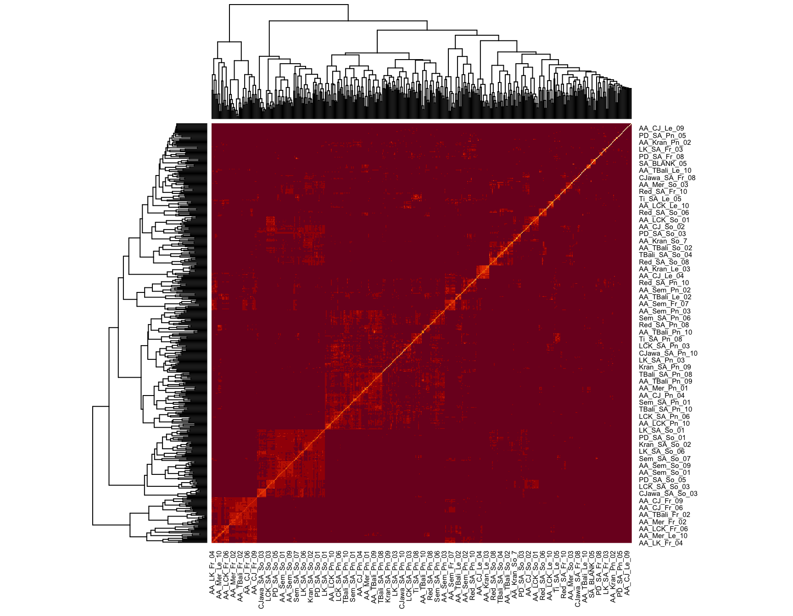
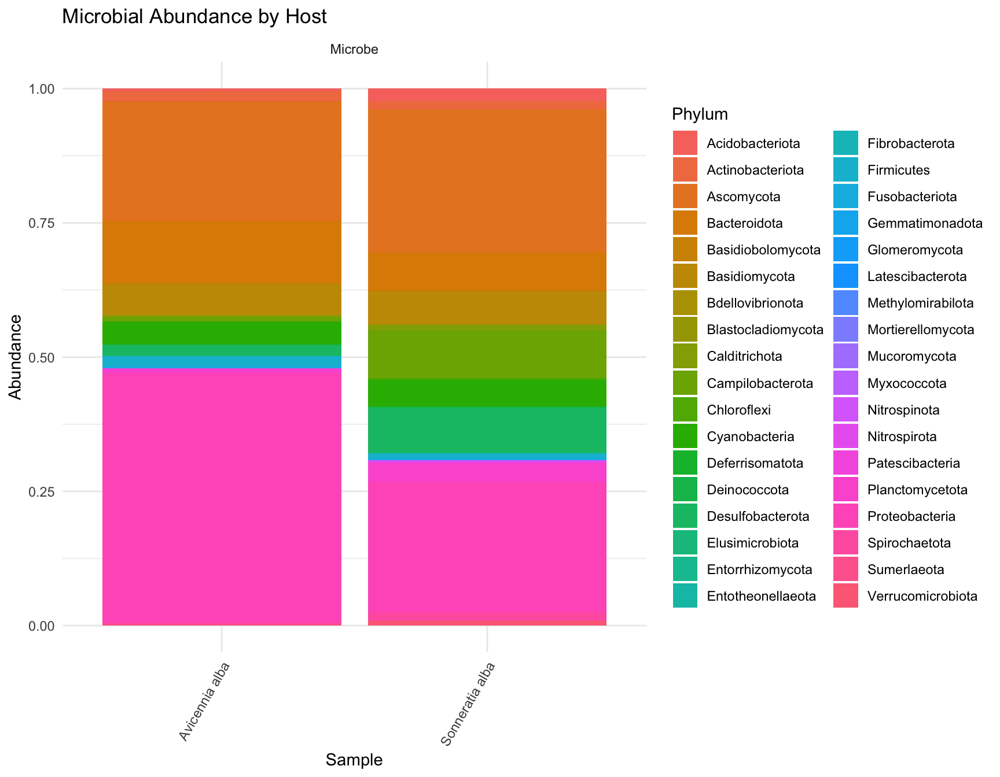
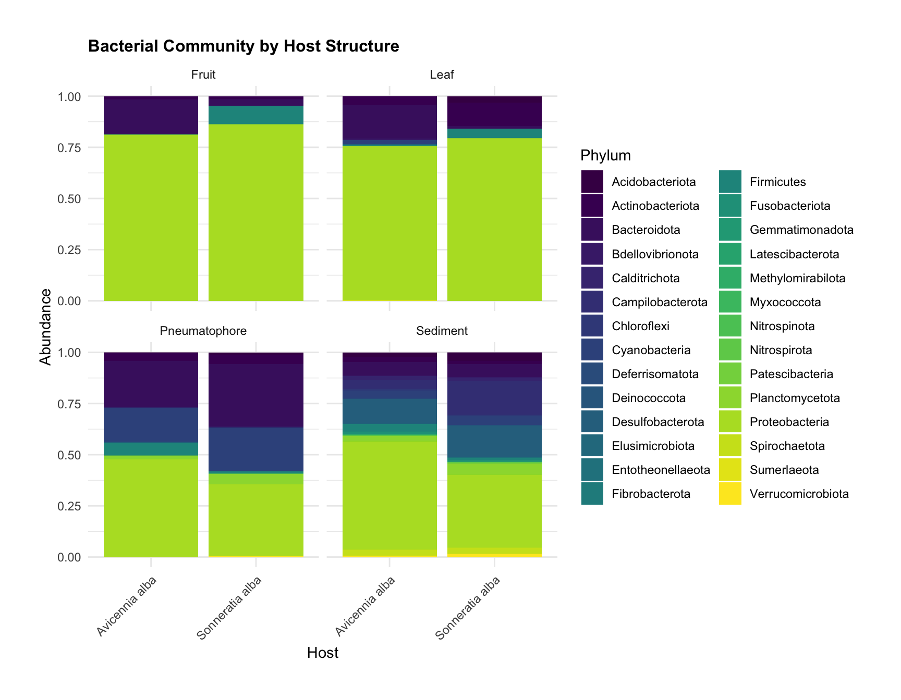

RStats on the Mangrove Microbiome
Kate Hickman
Bacterial-Fungal Interactions in Mangrove Structures
MSA 2022 Abstract
The mangrove microbiome is an important indicator of ecological
outcomes such as carbon sequestration, nutrient cycling and seedling
success upon transplantation. This project investigates the correlation
of fungal and bacterial community dynamics on mangrove structures,
including fruit, leaf, pneumatophore and sediment. Mangrove samples from
the Malay Peninsula were subjected to both fungal ITS1 and bacterial 16S
meta-amplicon sequencing to identify patterns in diversity and community
structure across space and plant components. These meta-amplicon studies
were published separately with a focus on improving the understanding of
how microbiomes relate to seedling transplantation success. This project
is focused on comparing patterns between fungi and bacteria associated
with mangroves. Preliminary findings indicate variation in phyla based
on plant structure, with more homogeneity in abundance of bacterial
species on leaves and fruit than other structures. There were eight
bacterial species present predominantly in pneumatophores that
demonstrated statistically significant differential abundance. Bacterial
abundance and diversity were higher than fungi across structures. The
greatest diversity was observed in the sediment, but many of the species
represented may not be associated with mangroves. Fungal and bacterial
clustering based on structure may provide key insights into the
interactions of these colonies, and their respective roles in the
microbiome. Understanding the role of the mangrove microbiome in
essential processes such as nutrient cycling, plant growth promotion,
and abiotic stress resistance can improve transplantation practices,
supporting mangrove conservation. Future investigations will focus on
the activities and interactions between these communities to identify
the specific niches they occupy in mangrove ecosystems.
Introduction
This analysis aims to illuminate potential interactions between
bacterial and fungal species in terms of community assembly as a
function of location, host plant or plant structure. The samples for
this analysis were taken from mangroves trees in Southeast Asia and have
been sequenced, targeting the 16S and ITS1 genes for bacteria and fungi,
respectively.
Data Analysis
Bacterial and Fungal Community Data
The data in question is comprised of several data sets, resulting from sequencing published by Lee et a. (2019 and 2020) and is forthcoming in Wainright et al. These data illustrate the presence of microbial communities on Mangrove roots. Microbial communities of interest are Bacteria and Fungi–we will not consider Archaea since they are beyond the scope of this research.
The data sets have been condensed into a “phyloseq” object, which is
generally comprised of sample data, observational taxonomic unit (OTU)
tables, taxonomy tables, and phylogenetic trees (not present in our
data). The sample data contains a list of variables that present
themselves as interesting predictors of community assembly–we will use
microbe type and taxa as a proxy for community assembly. Below you will
see the parameters for samples taken from two hosts at seven different
sites across Southeast Asia.
full <- readRDS("./bact_and_fungi_clean_ps_object")
full_sam <- full@sam_data %>% as("data.frame")
full_sam %>%
select(Location, Host, Structure, Microbe, Lat, Lon) %>%
kableExtra::kable() %>%
kableExtra::kable_classic() %>%
kableExtra::kable_styling() %>%
kableExtra::column_spec(column = c(1, 2, 3, 4, 5, 6), color="white") %>%
kableExtra::scroll_box(width = "700px", height = "300px")| Location | Host | Structure | Microbe | Lat | Lon | |
|---|---|---|---|---|---|---|
| AA_Mer_Le_05 | Merang | Avicennia alba | Leaf | Fungi | 5.534833 | 102.94433 |
| AA_Mer_Le_06 | Merang | Avicennia alba | Leaf | Fungi | 5.534833 | 102.94433 |
| AA_Sem_So_04 | Semakau | Avicennia alba | Sediment | Fungi | 1.211727 | 103.75878 |
| AA_Sem_So_03 | Semakau | Avicennia alba | Sediment | Fungi | 1.211727 | 103.75878 |
| AA_Mer_Le_09 | Merang | Avicennia alba | Leaf | Fungi | 5.534833 | 102.94433 |
| AA_Mer_Le_10 | Merang | Avicennia alba | Leaf | Fungi | 5.534833 | 102.94433 |
| AA_Mer_Pn_01 | Merang | Avicennia alba | Pneumatophore | Fungi | 5.534833 | 102.94433 |
| AA_Sem_Fr_07 | Semakau | Avicennia alba | Fruit | Fungi | 1.211727 | 103.75878 |
| AA_Sem_Fr_06 | Semakau | Avicennia alba | Fruit | Fungi | 1.211727 | 103.75878 |
| AA_Sem_So_02 | Semakau | Avicennia alba | Sediment | Fungi | 1.211727 | 103.75878 |
| AA_Sem_So_01 | Semakau | Avicennia alba | Sediment | Fungi | 1.211727 | 103.75878 |
| AA_Kran_Fr_09 | Kranji | Avicennia alba | Fruit | Fungi | 1.438302 | 103.75288 |
| AA_Kran_Fr_01 | Kranji | Avicennia alba | Fruit | Fungi | 1.438302 | 103.75288 |
| AA_Kran_Fr_03 | Kranji | Avicennia alba | Fruit | Fungi | 1.438302 | 103.75288 |
| AA_Kran_Fr_04 | Kranji | Avicennia alba | Fruit | Fungi | 1.438302 | 103.75288 |
| AA_Kran_Fr_07 | Kranji | Avicennia alba | Fruit | Fungi | 1.438302 | 103.75288 |
| AA_LK_Pn_03 | Langkawi | Avicennia alba | Pneumatophore | Fungi | 6.456892 | 99.82261 |
| AA_LK_Fr_07 | Langkawi | Avicennia alba | Fruit | Fungi | 6.456892 | 99.82261 |
| AA_Mer_Le_04 | Merang | Avicennia alba | Leaf | Fungi | 5.534833 | 102.94433 |
| AA_Mer_Le_03 | Merang | Avicennia alba | Leaf | Fungi | 5.534833 | 102.94433 |
| AA_Mer_Le_02 | Merang | Avicennia alba | Leaf | Fungi | 5.534833 | 102.94433 |
| AA_Mer_Le_01 | Merang | Avicennia alba | Leaf | Fungi | 5.534833 | 102.94433 |
| AA_Sem_So_10 | Semakau | Avicennia alba | Sediment | Fungi | 1.211727 | 103.75878 |
| AA_Sem_So_09 | Semakau | Avicennia alba | Sediment | Fungi | 1.211727 | 103.75878 |
| AA_Sem_So_08 | Semakau | Avicennia alba | Sediment | Fungi | 1.211727 | 103.75878 |
| AA_Sem_So_07 | Semakau | Avicennia alba | Sediment | Fungi | 1.211727 | 103.75878 |
| AA_Sem_So_06 | Semakau | Avicennia alba | Sediment | Fungi | 1.211727 | 103.75878 |
| AA_Sem_So_05 | Semakau | Avicennia alba | Sediment | Fungi | 1.211727 | 103.75878 |
| AA_LK_Pn_01 | Langkawi | Avicennia alba | Pneumatophore | Fungi | 6.456892 | 99.82261 |
| AA_LK_Le_10 | Langkawi | Avicennia alba | Leaf | Fungi | 6.456892 | 99.82261 |
| AA_Kran_Pn_06 | Kranji | Avicennia alba | Pneumatophore | Fungi | 1.438302 | 103.75288 |
| AA_Kran_Pn_05 | Kranji | Avicennia alba | Pneumatophore | Fungi | 1.438302 | 103.75288 |
| AA_Kran_Pn_08 | Kranji | Avicennia alba | Pneumatophore | Fungi | 1.438302 | 103.75288 |
| AA_Kran_Pn_07 | Kranji | Avicennia alba | Pneumatophore | Fungi | 1.438302 | 103.75288 |
| AA_Kran_Pn_02 | Kranji | Avicennia alba | Pneumatophore | Fungi | 1.438302 | 103.75288 |
| AA_Kran_Pn_01 | Kranji | Avicennia alba | Pneumatophore | Fungi | 1.438302 | 103.75288 |
| AA_Kran_Pn_04 | Kranji | Avicennia alba | Pneumatophore | Fungi | 1.438302 | 103.75288 |
| AA_Kran_Pn_03 | Kranji | Avicennia alba | Pneumatophore | Fungi | 1.438302 | 103.75288 |
| AA_LK_So_10 | Langkawi | Avicennia alba | Sediment | Fungi | 6.456892 | 99.82261 |
| AA_Kran_Pn_10 | Kranji | Avicennia alba | Pneumatophore | Fungi | 1.438302 | 103.75288 |
| AA_Kran_Pn_09 | Kranji | Avicennia alba | Pneumatophore | Fungi | 1.438302 | 103.75288 |
| AA_LK_Pn_04 | Langkawi | Avicennia alba | Pneumatophore | Fungi | 6.456892 | 99.82261 |
| AA_LK_Pn_06 | Langkawi | Avicennia alba | Pneumatophore | Fungi | 6.456892 | 99.82261 |
| AA_Mer_Fr_03 | Merang | Avicennia alba | Fruit | Fungi | 5.534833 | 102.94433 |
| AA_Mer_Fr_02 | Merang | Avicennia alba | Fruit | Fungi | 5.534833 | 102.94433 |
| AA_LK_Fr_08 | Langkawi | Avicennia alba | Fruit | Fungi | 6.456892 | 99.82261 |
| AA_LK_Pn_05 | Langkawi | Avicennia alba | Pneumatophore | Fungi | 6.456892 | 99.82261 |
| AA_Mer_Pn_05 | Merang | Avicennia alba | Pneumatophore | Fungi | 5.534833 | 102.94433 |
| AA_Mer_Pn_04 | Merang | Avicennia alba | Pneumatophore | Fungi | 5.534833 | 102.94433 |
| AA_Mer_Pn_07 | Merang | Avicennia alba | Pneumatophore | Fungi | 5.534833 | 102.94433 |
| AA_Mer_Pn_06 | Merang | Avicennia alba | Pneumatophore | Fungi | 5.534833 | 102.94433 |
| AA_Mer_Pn_09 | Merang | Avicennia alba | Pneumatophore | Fungi | 5.534833 | 102.94433 |
| AA_Mer_Pn_08 | Merang | Avicennia alba | Pneumatophore | Fungi | 5.534833 | 102.94433 |
| AA_Mer_Fr_01 | Merang | Avicennia alba | Fruit | Fungi | 5.534833 | 102.94433 |
| AA_Mer_Pn_10 | Merang | Avicennia alba | Pneumatophore | Fungi | 5.534833 | 102.94433 |
| AA_Mer_Pn_02 | Merang | Avicennia alba | Pneumatophore | Fungi | 5.534833 | 102.94433 |
| AA_LK_Fr_04 | Langkawi | Avicennia alba | Fruit | Fungi | 6.456892 | 99.82261 |
| AA_Mer_Pn_03 | Merang | Avicennia alba | Pneumatophore | Fungi | 5.534833 | 102.94433 |
| AA_LK_Fr_05 | Langkawi | Avicennia alba | Fruit | Fungi | 6.456892 | 99.82261 |
| AA_LK_So_01 | Langkawi | Avicennia alba | Sediment | Fungi | 6.456892 | 99.82261 |
| AA_LK_Fr_10 | Langkawi | Avicennia alba | Fruit | Fungi | 6.456892 | 99.82261 |
| AA_LK_Fr_09 | Langkawi | Avicennia alba | Fruit | Fungi | 6.456892 | 99.82261 |
| AA_LK_So_06 | Langkawi | Avicennia alba | Sediment | Fungi | 6.456892 | 99.82261 |
| AA_LK_So_05 | Langkawi | Avicennia alba | Sediment | Fungi | 6.456892 | 99.82261 |
| AA_LK_Fr_06 | Langkawi | Avicennia alba | Fruit | Fungi | 6.456892 | 99.82261 |
| AA_LK_So_03 | Langkawi | Avicennia alba | Sediment | Fungi | 6.456892 | 99.82261 |
| AA_LK_So_08 | Langkawi | Avicennia alba | Sediment | Fungi | 6.456892 | 99.82261 |
| AA_LK_So_07 | Langkawi | Avicennia alba | Sediment | Fungi | 6.456892 | 99.82261 |
| AA_LK_Pn_09 | Langkawi | Avicennia alba | Pneumatophore | Fungi | 6.456892 | 99.82261 |
| AA_LK_Pn_10 | Langkawi | Avicennia alba | Pneumatophore | Fungi | 6.456892 | 99.82261 |
| AA_LK_Pn_02 | Langkawi | Avicennia alba | Pneumatophore | Fungi | 6.456892 | 99.82261 |
| AA_CJ_Pn_06 | Chek Jawa | Avicennia alba | Pneumatophore | Fungi | 1.410703 | 103.99110 |
| AA_CJ_Pn_05 | Chek Jawa | Avicennia alba | Pneumatophore | Fungi | 1.410703 | 103.99110 |
| AA_CJ_Pn_02 | Chek Jawa | Avicennia alba | Pneumatophore | Fungi | 1.410703 | 103.99110 |
| AA_CJ_Pn_01 | Chek Jawa | Avicennia alba | Pneumatophore | Fungi | 1.410703 | 103.99110 |
| AA_CJ_Pn_04 | Chek Jawa | Avicennia alba | Pneumatophore | Fungi | 1.410703 | 103.99110 |
| AA_CJ_Pn_03 | Chek Jawa | Avicennia alba | Pneumatophore | Fungi | 1.410703 | 103.99110 |
| AA_CJ_Le_08 | Chek Jawa | Avicennia alba | Leaf | Fungi | 1.410703 | 103.99110 |
| AA_CJ_Le_09 | Chek Jawa | Avicennia alba | Leaf | Fungi | 1.410703 | 103.99110 |
| AA_LK_Le_08 | Langkawi | Avicennia alba | Leaf | Fungi | 6.456892 | 99.82261 |
| AA_CJ_Fr_05 | Chek Jawa | Avicennia alba | Fruit | Fungi | 1.410703 | 103.99110 |
| AA_CJ_Fr_06 | Chek Jawa | Avicennia alba | Fruit | Fungi | 1.410703 | 103.99110 |
| AA_CJ_Pn_07 | Chek Jawa | Avicennia alba | Pneumatophore | Fungi | 1.410703 | 103.99110 |
| AA_CJ_Pn_08 | Chek Jawa | Avicennia alba | Pneumatophore | Fungi | 1.410703 | 103.99110 |
| AA_CJ_Pn_09 | Chek Jawa | Avicennia alba | Pneumatophore | Fungi | 1.410703 | 103.99110 |
| AA_CJ_Pn_10 | Chek Jawa | Avicennia alba | Pneumatophore | Fungi | 1.410703 | 103.99110 |
| AA_CJ_Fr_01 | Chek Jawa | Avicennia alba | Fruit | Fungi | 1.410703 | 103.99110 |
| AA_CJ_Fr_02 | Chek Jawa | Avicennia alba | Fruit | Fungi | 1.410703 | 103.99110 |
| AA_CJ_Fr_04 | Chek Jawa | Avicennia alba | Fruit | Fungi | 1.410703 | 103.99110 |
| AA_LK_Le_09 | Langkawi | Avicennia alba | Leaf | Fungi | 6.456892 | 99.82261 |
| AA_LK_Pn_08 | Langkawi | Avicennia alba | Pneumatophore | Fungi | 6.456892 | 99.82261 |
| AA_LK_Pn_07 | Langkawi | Avicennia alba | Pneumatophore | Fungi | 6.456892 | 99.82261 |
| AA_Mer_So_07 | Merang | Avicennia alba | Sediment | Fungi | 5.534833 | 102.94433 |
| AA_Mer_So_06 | Merang | Avicennia alba | Sediment | Fungi | 5.534833 | 102.94433 |
| AA_Mer_So_05 | Merang | Avicennia alba | Sediment | Fungi | 5.534833 | 102.94433 |
| AA_Mer_So_04 | Merang | Avicennia alba | Sediment | Fungi | 5.534833 | 102.94433 |
| AA_Mer_So_10 | Merang | Avicennia alba | Sediment | Fungi | 5.534833 | 102.94433 |
| AA_Mer_So_09 | Merang | Avicennia alba | Sediment | Fungi | 5.534833 | 102.94433 |
| AA_Mer_So_08 | Merang | Avicennia alba | Sediment | Fungi | 5.534833 | 102.94433 |
| AA_LK_Fr_03 | Langkawi | Avicennia alba | Fruit | Fungi | 6.456892 | 99.82261 |
| AA_LK_Fr_01 | Langkawi | Avicennia alba | Fruit | Fungi | 6.456892 | 99.82261 |
| AA_CJ_So_03 | Chek Jawa | Avicennia alba | Sediment | Fungi | 1.410703 | 103.99110 |
| AA_CJ_So_02 | Chek Jawa | Avicennia alba | Sediment | Fungi | 1.410703 | 103.99110 |
| AA_CJ_So_01 | Chek Jawa | Avicennia alba | Sediment | Fungi | 1.410703 | 103.99110 |
| AA_CJ_Fr_10 | Chek Jawa | Avicennia alba | Fruit | Fungi | 1.410703 | 103.99110 |
| AA_CJ_Fr_09 | Chek Jawa | Avicennia alba | Fruit | Fungi | 1.410703 | 103.99110 |
| AA_CJ_Fr_08 | Chek Jawa | Avicennia alba | Fruit | Fungi | 1.410703 | 103.99110 |
| AA_CJ_Fr_07 | Chek Jawa | Avicennia alba | Fruit | Fungi | 1.410703 | 103.99110 |
| AA_LK_Fr_02 | Langkawi | Avicennia alba | Fruit | Fungi | 6.456892 | 99.82261 |
| AA_CJ_So_05 | Chek Jawa | Avicennia alba | Sediment | Fungi | 1.410703 | 103.99110 |
| AA_CJ_So_04 | Chek Jawa | Avicennia alba | Sediment | Fungi | 1.410703 | 103.99110 |
| AA_LK_So_02 | Langkawi | Avicennia alba | Sediment | Fungi | 6.456892 | 99.82261 |
| AA_LK_So_09 | Langkawi | Avicennia alba | Sediment | Fungi | 6.456892 | 99.82261 |
| AA_Kran_Le_10 | Kranji | Avicennia alba | Leaf | Fungi | 1.438302 | 103.75288 |
| AA_Mer_Le_08 | Merang | Avicennia alba | Leaf | Fungi | 5.534833 | 102.94433 |
| AA_LK_Le_02 | Langkawi | Avicennia alba | Leaf | Fungi | 6.456892 | 99.82261 |
| AA_LK_Le_03 | Langkawi | Avicennia alba | Leaf | Fungi | 6.456892 | 99.82261 |
| AA_LK_Le_01 | Langkawi | Avicennia alba | Leaf | Fungi | 6.456892 | 99.82261 |
| AA_LK_Le_06 | Langkawi | Avicennia alba | Leaf | Fungi | 6.456892 | 99.82261 |
| AA_LK_Le_07 | Langkawi | Avicennia alba | Leaf | Fungi | 6.456892 | 99.82261 |
| AA_LK_So_04 | Langkawi | Avicennia alba | Sediment | Fungi | 6.456892 | 99.82261 |
| AA_CJ_So_08 | Chek Jawa | Avicennia alba | Sediment | Fungi | 1.410703 | 103.99110 |
| AA_CJ_So_09 | Chek Jawa | Avicennia alba | Sediment | Fungi | 1.410703 | 103.99110 |
| AA_CJ_So_06 | Chek Jawa | Avicennia alba | Sediment | Fungi | 1.410703 | 103.99110 |
| AA_CJ_So_07 | Chek Jawa | Avicennia alba | Sediment | Fungi | 1.410703 | 103.99110 |
| AA_Sem_Le_02 | Semakau | Avicennia alba | Leaf | Fungi | 1.211727 | 103.75878 |
| AA_Sem_Le_03 | Semakau | Avicennia alba | Leaf | Fungi | 1.211727 | 103.75878 |
| AA_CJ_So_10 | Chek Jawa | Avicennia alba | Sediment | Fungi | 1.410703 | 103.99110 |
| AA_Sem_Le_01 | Semakau | Avicennia alba | Leaf | Fungi | 1.211727 | 103.75878 |
| AA_Kran_Le_08 | Kranji | Avicennia alba | Leaf | Fungi | 1.438302 | 103.75288 |
| AA_Kran_Le_07 | Kranji | Avicennia alba | Leaf | Fungi | 1.438302 | 103.75288 |
| AA_Sem_Le_05 | Semakau | Avicennia alba | Leaf | Fungi | 1.211727 | 103.75878 |
| AA_Kran_Le_03 | Kranji | Avicennia alba | Leaf | Fungi | 1.438302 | 103.75288 |
| AA_Kran_Le_02 | Kranji | Avicennia alba | Leaf | Fungi | 1.438302 | 103.75288 |
| AA_Kran_Le_01 | Kranji | Avicennia alba | Leaf | Fungi | 1.438302 | 103.75288 |
| AA_Sem_Fr_03 | Semakau | Avicennia alba | Fruit | Fungi | 1.211727 | 103.75878 |
| AA_Sem_Fr_04 | Semakau | Avicennia alba | Fruit | Fungi | 1.211727 | 103.75878 |
| AA_Sem_Pn_10 | Semakau | Avicennia alba | Pneumatophore | Fungi | 1.211727 | 103.75878 |
| AA_Sem_Fr_02 | Semakau | Avicennia alba | Fruit | Fungi | 1.211727 | 103.75878 |
| AA_Sem_Pn_06 | Semakau | Avicennia alba | Pneumatophore | Fungi | 1.211727 | 103.75878 |
| AA_Sem_Pn_07 | Semakau | Avicennia alba | Pneumatophore | Fungi | 1.211727 | 103.75878 |
| AA_Sem_Pn_08 | Semakau | Avicennia alba | Pneumatophore | Fungi | 1.211727 | 103.75878 |
| AA_Sem_Pn_09 | Semakau | Avicennia alba | Pneumatophore | Fungi | 1.211727 | 103.75878 |
| AA_Kran_Le_09 | Kranji | Avicennia alba | Leaf | Fungi | 1.438302 | 103.75288 |
| AA_Kran_Fr_10 | Kranji | Avicennia alba | Fruit | Fungi | 1.438302 | 103.75288 |
| AA_Sem_Le_08 | Semakau | Avicennia alba | Leaf | Fungi | 1.211727 | 103.75878 |
| AA_Sem_Pn_01 | Semakau | Avicennia alba | Pneumatophore | Fungi | 1.211727 | 103.75878 |
| AA_Sem_Le_10 | Semakau | Avicennia alba | Leaf | Fungi | 1.211727 | 103.75878 |
| AA_Sem_Pn_03 | Semakau | Avicennia alba | Pneumatophore | Fungi | 1.211727 | 103.75878 |
| AA_Sem_Pn_02 | Semakau | Avicennia alba | Pneumatophore | Fungi | 1.211727 | 103.75878 |
| AA_Sem_Pn_05 | Semakau | Avicennia alba | Pneumatophore | Fungi | 1.211727 | 103.75878 |
| AA_Sem_Pn_04 | Semakau | Avicennia alba | Pneumatophore | Fungi | 1.211727 | 103.75878 |
| AA_LK_Le_05 | Langkawi | Avicennia alba | Leaf | Fungi | 6.456892 | 99.82261 |
| AA_Mer_So_02 | Merang | Avicennia alba | Sediment | Fungi | 5.534833 | 102.94433 |
| AA_Mer_So_03 | Merang | Avicennia alba | Sediment | Fungi | 5.534833 | 102.94433 |
| AA_Mer_Fr_06 | Merang | Avicennia alba | Fruit | Fungi | 5.534833 | 102.94433 |
| AA_Mer_Fr_07 | Merang | Avicennia alba | Fruit | Fungi | 5.534833 | 102.94433 |
| AA_Mer_Fr_04 | Merang | Avicennia alba | Fruit | Fungi | 5.534833 | 102.94433 |
| AA_Mer_Fr_05 | Merang | Avicennia alba | Fruit | Fungi | 5.534833 | 102.94433 |
| AA_Mer_Fr_10 | Merang | Avicennia alba | Fruit | Fungi | 5.534833 | 102.94433 |
| AA_Mer_So_01 | Merang | Avicennia alba | Sediment | Fungi | 5.534833 | 102.94433 |
| AA_Mer_Fr_08 | Merang | Avicennia alba | Fruit | Fungi | 5.534833 | 102.94433 |
| AA_Mer_Fr_09 | Merang | Avicennia alba | Fruit | Fungi | 5.534833 | 102.94433 |
| AA_LK_Le_04 | Langkawi | Avicennia alba | Leaf | Fungi | 6.456892 | 99.82261 |
| AA_Kran_Le_06 | Kranji | Avicennia alba | Leaf | Fungi | 1.438302 | 103.75288 |
| AA_Kran_Le_05 | Kranji | Avicennia alba | Leaf | Fungi | 1.438302 | 103.75288 |
| AA_Mer_Le_07 | Merang | Avicennia alba | Leaf | Fungi | 5.534833 | 102.94433 |
| AA_CJ_Le_05 | Chek Jawa | Avicennia alba | Leaf | Fungi | 1.410703 | 103.99110 |
| AA_CJ_Le_06 | Chek Jawa | Avicennia alba | Leaf | Fungi | 1.410703 | 103.99110 |
| AA_CJ_Le_03 | Chek Jawa | Avicennia alba | Leaf | Fungi | 1.410703 | 103.99110 |
| AA_CJ_Le_04 | Chek Jawa | Avicennia alba | Leaf | Fungi | 1.410703 | 103.99110 |
| AA_CJ_Le_01 | Chek Jawa | Avicennia alba | Leaf | Fungi | 1.410703 | 103.99110 |
| AA_CJ_Le_02 | Chek Jawa | Avicennia alba | Leaf | Fungi | 1.410703 | 103.99110 |
| CJawa_SA_Fr_08 | Chek Jawa | Sonneratia alba | Fruit | Fungi | 1.410703 | 103.99110 |
| Kran_SA_Pn_10 | Kranji | Sonneratia alba | Pneumatophore | Fungi | 1.438302 | 103.75288 |
| CJawa_SA_Pn_10 | Chek Jawa | Sonneratia alba | Pneumatophore | Fungi | 1.410703 | 103.99110 |
| CJawa_SA_Pn_09 | Chek Jawa | Sonneratia alba | Pneumatophore | Fungi | 1.410703 | 103.99110 |
| CJawa_SA_Pn_08 | Chek Jawa | Sonneratia alba | Pneumatophore | Fungi | 1.410703 | 103.99110 |
| CJawa_SA_Pn_07 | Chek Jawa | Sonneratia alba | Pneumatophore | Fungi | 1.410703 | 103.99110 |
| CJawa_SA_Pn_06 | Chek Jawa | Sonneratia alba | Pneumatophore | Fungi | 1.410703 | 103.99110 |
| Kran_SA_Pn_09 | Kranji | Sonneratia alba | Pneumatophore | Fungi | 1.438302 | 103.75288 |
| CJawa_SA_Pn_05 | Chek Jawa | Sonneratia alba | Pneumatophore | Fungi | 1.410703 | 103.99110 |
| CJawa_SA_Pn_04 | Chek Jawa | Sonneratia alba | Pneumatophore | Fungi | 1.410703 | 103.99110 |
| CJawa_SA_Pn_03 | Chek Jawa | Sonneratia alba | Pneumatophore | Fungi | 1.410703 | 103.99110 |
| CJawa_SA_Pn_02 | Chek Jawa | Sonneratia alba | Pneumatophore | Fungi | 1.410703 | 103.99110 |
| CJawa_SA_Pn_01 | Chek Jawa | Sonneratia alba | Pneumatophore | Fungi | 1.410703 | 103.99110 |
| Kran_SA_Pn_08 | Kranji | Sonneratia alba | Pneumatophore | Fungi | 1.438302 | 103.75288 |
| LK_SA_So_10 | Langkawi | Sonneratia alba | Sediment | Fungi | 6.456892 | 99.82261 |
| LK_SA_So_09 | Langkawi | Sonneratia alba | Sediment | Fungi | 6.456892 | 99.82261 |
| LK_SA_Pn_07 | Langkawi | Sonneratia alba | Pneumatophore | Fungi | 6.456892 | 99.82261 |
| LK_SA_Pn_06 | Langkawi | Sonneratia alba | Pneumatophore | Fungi | 6.456892 | 99.82261 |
| LK_SA_So_08 | Langkawi | Sonneratia alba | Sediment | Fungi | 6.456892 | 99.82261 |
| LK_SA_So_07 | Langkawi | Sonneratia alba | Sediment | Fungi | 6.456892 | 99.82261 |
| LK_SA_So_06 | Langkawi | Sonneratia alba | Sediment | Fungi | 6.456892 | 99.82261 |
| Kran_SA_Pn_07 | Kranji | Sonneratia alba | Pneumatophore | Fungi | 1.438302 | 103.75288 |
| LK_SA_So_05 | Langkawi | Sonneratia alba | Sediment | Fungi | 6.456892 | 99.82261 |
| LK_SA_So_04 | Langkawi | Sonneratia alba | Sediment | Fungi | 6.456892 | 99.82261 |
| LK_SA_So_03 | Langkawi | Sonneratia alba | Sediment | Fungi | 6.456892 | 99.82261 |
| LK_SA_So_02 | Langkawi | Sonneratia alba | Sediment | Fungi | 6.456892 | 99.82261 |
| LK_SA_So_01 | Langkawi | Sonneratia alba | Sediment | Fungi | 6.456892 | 99.82261 |
| Kran_SA_Pn_06 | Kranji | Sonneratia alba | Pneumatophore | Fungi | 1.438302 | 103.75288 |
| LK_SA_Fr_03 | Langkawi | Sonneratia alba | Fruit | Fungi | 6.456892 | 99.82261 |
| LK_SA_Pn_10 | Langkawi | Sonneratia alba | Pneumatophore | Fungi | 6.456892 | 99.82261 |
| LK_SA_Pn_09 | Langkawi | Sonneratia alba | Pneumatophore | Fungi | 6.456892 | 99.82261 |
| LK_SA_Pn_08 | Langkawi | Sonneratia alba | Pneumatophore | Fungi | 6.456892 | 99.82261 |
| Kran_SA_Pn_05 | Kranji | Sonneratia alba | Pneumatophore | Fungi | 1.438302 | 103.75288 |
| LK_SA_Pn_05 | Langkawi | Sonneratia alba | Pneumatophore | Fungi | 6.456892 | 99.82261 |
| LK_SA_Pn_04 | Langkawi | Sonneratia alba | Pneumatophore | Fungi | 6.456892 | 99.82261 |
| LK_SA_Pn_03 | Langkawi | Sonneratia alba | Pneumatophore | Fungi | 6.456892 | 99.82261 |
| LK_SA_Pn_02 | Langkawi | Sonneratia alba | Pneumatophore | Fungi | 6.456892 | 99.82261 |
| LK_SA_Pn_01 | Langkawi | Sonneratia alba | Pneumatophore | Fungi | 6.456892 | 99.82261 |
| LK_SA_Le_06 | Langkawi | Sonneratia alba | Leaf | Fungi | 6.456892 | 99.82261 |
| LK_SA_Le_05 | Langkawi | Sonneratia alba | Leaf | Fungi | 6.456892 | 99.82261 |
| LK_SA_Le_03 | Langkawi | Sonneratia alba | Leaf | Fungi | 6.456892 | 99.82261 |
| LK_SA_Le_02 | Langkawi | Sonneratia alba | Leaf | Fungi | 6.456892 | 99.82261 |
| LK_SA_Le_01 | Langkawi | Sonneratia alba | Leaf | Fungi | 6.456892 | 99.82261 |
| PD_SA_So_10 | Port Dickson | Sonneratia alba | Sediment | Fungi | 2.408307 | 101.85885 |
| PD_SA_So_09 | Port Dickson | Sonneratia alba | Sediment | Fungi | 2.408307 | 101.85885 |
| Kran_SA_Le_09 | Kranji | Sonneratia alba | Leaf | Fungi | 1.438302 | 103.75288 |
| PD_SA_So_08 | Port Dickson | Sonneratia alba | Sediment | Fungi | 2.408307 | 101.85885 |
| PD_SA_So_07 | Port Dickson | Sonneratia alba | Sediment | Fungi | 2.408307 | 101.85885 |
| PD_SA_So_06 | Port Dickson | Sonneratia alba | Sediment | Fungi | 2.408307 | 101.85885 |
| PD_SA_So_05 | Port Dickson | Sonneratia alba | Sediment | Fungi | 2.408307 | 101.85885 |
| PD_SA_So_04 | Port Dickson | Sonneratia alba | Sediment | Fungi | 2.408307 | 101.85885 |
| PD_SA_So_03 | Port Dickson | Sonneratia alba | Sediment | Fungi | 2.408307 | 101.85885 |
| PD_SA_So_02 | Port Dickson | Sonneratia alba | Sediment | Fungi | 2.408307 | 101.85885 |
| PD_SA_So_01 | Port Dickson | Sonneratia alba | Sediment | Fungi | 2.408307 | 101.85885 |
| Kran_SA_Le_08 | Kranji | Sonneratia alba | Leaf | Fungi | 1.438302 | 103.75288 |
| PD_SA_Fr_08 | Port Dickson | Sonneratia alba | Fruit | Fungi | 2.408307 | 101.85885 |
| PD_SA_Fr_06 | Port Dickson | Sonneratia alba | Fruit | Fungi | 2.408307 | 101.85885 |
| PD_SA_Fr_01 | Port Dickson | Sonneratia alba | Fruit | Fungi | 2.408307 | 101.85885 |
| PD_SA_Pn_10 | Port Dickson | Sonneratia alba | Pneumatophore | Fungi | 2.408307 | 101.85885 |
| PD_SA_Pn_09 | Port Dickson | Sonneratia alba | Pneumatophore | Fungi | 2.408307 | 101.85885 |
| PD_SA_Pn_08 | Port Dickson | Sonneratia alba | Pneumatophore | Fungi | 2.408307 | 101.85885 |
| PD_SA_Pn_07 | Port Dickson | Sonneratia alba | Pneumatophore | Fungi | 2.408307 | 101.85885 |
| PD_SA_Pn_06 | Port Dickson | Sonneratia alba | Pneumatophore | Fungi | 2.408307 | 101.85885 |
| PD_SA_Pn_05 | Port Dickson | Sonneratia alba | Pneumatophore | Fungi | 2.408307 | 101.85885 |
| PD_SA_Pn_04 | Port Dickson | Sonneratia alba | Pneumatophore | Fungi | 2.408307 | 101.85885 |
| PD_SA_Pn_03 | Port Dickson | Sonneratia alba | Pneumatophore | Fungi | 2.408307 | 101.85885 |
| PD_SA_Pn_02 | Port Dickson | Sonneratia alba | Pneumatophore | Fungi | 2.408307 | 101.85885 |
| PD_SA_Pn_01 | Port Dickson | Sonneratia alba | Pneumatophore | Fungi | 2.408307 | 101.85885 |
| Kran_SA_So_10 | Kranji | Sonneratia alba | Sediment | Fungi | 1.438302 | 103.75288 |
| Kran_SA_So_09 | Kranji | Sonneratia alba | Sediment | Fungi | 1.438302 | 103.75288 |
| Kran_SA_So_08 | Kranji | Sonneratia alba | Sediment | Fungi | 1.438302 | 103.75288 |
| TBali_SA_So_01 | Tok Bali | Sonneratia alba | Sediment | Fungi | 5.884847 | 102.48175 |
| Kran_SA_So_06 | Kranji | Sonneratia alba | Sediment | Fungi | 1.438302 | 103.75288 |
| TBali_SA_Fr_01 | Tok Bali | Sonneratia alba | Fruit | Fungi | 5.884847 | 102.48175 |
| TBali_SA_Pn_10 | Tok Bali | Sonneratia alba | Pneumatophore | Fungi | 5.884847 | 102.48175 |
| Kran_SA_So_05 | Kranji | Sonneratia alba | Sediment | Fungi | 1.438302 | 103.75288 |
| TBali_SA_Pn_09 | Tok Bali | Sonneratia alba | Pneumatophore | Fungi | 5.884847 | 102.48175 |
| TBali_SA_Pn_08 | Tok Bali | Sonneratia alba | Pneumatophore | Fungi | 5.884847 | 102.48175 |
| TBali_SA_Pn_07 | Tok Bali | Sonneratia alba | Pneumatophore | Fungi | 5.884847 | 102.48175 |
| TBali_SA_Pn_06 | Tok Bali | Sonneratia alba | Pneumatophore | Fungi | 5.884847 | 102.48175 |
| TBali_SA_Pn_05 | Tok Bali | Sonneratia alba | Pneumatophore | Fungi | 5.884847 | 102.48175 |
| TBali_SA_Pn_04 | Tok Bali | Sonneratia alba | Pneumatophore | Fungi | 5.884847 | 102.48175 |
| TBali_SA_Pn_03 | Tok Bali | Sonneratia alba | Pneumatophore | Fungi | 5.884847 | 102.48175 |
| TBali_SA_Pn_02 | Tok Bali | Sonneratia alba | Pneumatophore | Fungi | 5.884847 | 102.48175 |
| TBali_SA_Pn_01 | Tok Bali | Sonneratia alba | Pneumatophore | Fungi | 5.884847 | 102.48175 |
| Kran_SA_So_04 | Kranji | Sonneratia alba | Sediment | Fungi | 1.438302 | 103.75288 |
| Kran_SA_So_03 | Kranji | Sonneratia alba | Sediment | Fungi | 1.438302 | 103.75288 |
| Red_SA_So_10 | Redang | Sonneratia alba | Sediment | Fungi | 5.752590 | 102.99940 |
| Red_SA_So_09 | Redang | Sonneratia alba | Sediment | Fungi | 5.752590 | 102.99940 |
| Red_SA_So_08 | Redang | Sonneratia alba | Sediment | Fungi | 5.752590 | 102.99940 |
| Red_SA_So_07 | Redang | Sonneratia alba | Sediment | Fungi | 5.752590 | 102.99940 |
| Red_SA_So_06 | Redang | Sonneratia alba | Sediment | Fungi | 5.752590 | 102.99940 |
| Red_SA_So_05 | Redang | Sonneratia alba | Sediment | Fungi | 5.752590 | 102.99940 |
| Red_SA_So_04 | Redang | Sonneratia alba | Sediment | Fungi | 5.752590 | 102.99940 |
| Red_SA_So_03 | Redang | Sonneratia alba | Sediment | Fungi | 5.752590 | 102.99940 |
| Red_SA_So_02 | Redang | Sonneratia alba | Sediment | Fungi | 5.752590 | 102.99940 |
| Red_SA_So_01 | Redang | Sonneratia alba | Sediment | Fungi | 5.752590 | 102.99940 |
| Kran_SA_So_02 | Kranji | Sonneratia alba | Sediment | Fungi | 1.438302 | 103.75288 |
| Red_SA_Fr_10 | Redang | Sonneratia alba | Fruit | Fungi | 5.752590 | 102.99940 |
| Red_SA_Fr_07 | Redang | Sonneratia alba | Fruit | Fungi | 5.752590 | 102.99940 |
| Red_SA_Fr_06 | Redang | Sonneratia alba | Fruit | Fungi | 5.752590 | 102.99940 |
| Red_SA_Fr_05 | Redang | Sonneratia alba | Fruit | Fungi | 5.752590 | 102.99940 |
| Red_SA_Fr_04 | Redang | Sonneratia alba | Fruit | Fungi | 5.752590 | 102.99940 |
| Kran_SA_So_01 | Kranji | Sonneratia alba | Sediment | Fungi | 1.438302 | 103.75288 |
| Red_SA_Pn_10 | Redang | Sonneratia alba | Pneumatophore | Fungi | 5.752590 | 102.99940 |
| Red_SA_Pn_09 | Redang | Sonneratia alba | Pneumatophore | Fungi | 5.752590 | 102.99940 |
| Red_SA_Pn_07 | Redang | Sonneratia alba | Pneumatophore | Fungi | 5.752590 | 102.99940 |
| Red_SA_Pn_06 | Redang | Sonneratia alba | Pneumatophore | Fungi | 5.752590 | 102.99940 |
| Red_SA_Pn_05 | Redang | Sonneratia alba | Pneumatophore | Fungi | 5.752590 | 102.99940 |
| Red_SA_Pn_03 | Redang | Sonneratia alba | Pneumatophore | Fungi | 5.752590 | 102.99940 |
| Red_SA_Pn_02 | Redang | Sonneratia alba | Pneumatophore | Fungi | 5.752590 | 102.99940 |
| Red_SA_Pn_01 | Redang | Sonneratia alba | Pneumatophore | Fungi | 5.752590 | 102.99940 |
| Kran_SA_Fr_09 | Kranji | Sonneratia alba | Fruit | Fungi | 1.438302 | 103.75288 |
| Sem_SA_So_10 | Semakau | Sonneratia alba | Sediment | Fungi | 1.211727 | 103.75878 |
| Sem_SA_So_09 | Semakau | Sonneratia alba | Sediment | Fungi | 1.211727 | 103.75878 |
| Sem_SA_So_08 | Semakau | Sonneratia alba | Sediment | Fungi | 1.211727 | 103.75878 |
| Sem_SA_So_07 | Semakau | Sonneratia alba | Sediment | Fungi | 1.211727 | 103.75878 |
| Sem_SA_So_06 | Semakau | Sonneratia alba | Sediment | Fungi | 1.211727 | 103.75878 |
| Sem_SA_So_05 | Semakau | Sonneratia alba | Sediment | Fungi | 1.211727 | 103.75878 |
| Sem_SA_So_04 | Semakau | Sonneratia alba | Sediment | Fungi | 1.211727 | 103.75878 |
| Sem_SA_So_03 | Semakau | Sonneratia alba | Sediment | Fungi | 1.211727 | 103.75878 |
| Sem_SA_So_02 | Semakau | Sonneratia alba | Sediment | Fungi | 1.211727 | 103.75878 |
| Sem_SA_So_01 | Semakau | Sonneratia alba | Sediment | Fungi | 1.211727 | 103.75878 |
| Sem_SA_Pn_10 | Semakau | Sonneratia alba | Pneumatophore | Fungi | 1.211727 | 103.75878 |
| Sem_SA_Pn_09 | Semakau | Sonneratia alba | Pneumatophore | Fungi | 1.211727 | 103.75878 |
| Sem_SA_Pn_08 | Semakau | Sonneratia alba | Pneumatophore | Fungi | 1.211727 | 103.75878 |
| Sem_SA_Pn_07 | Semakau | Sonneratia alba | Pneumatophore | Fungi | 1.211727 | 103.75878 |
| Sem_SA_Pn_06 | Semakau | Sonneratia alba | Pneumatophore | Fungi | 1.211727 | 103.75878 |
| Sem_SA_Pn_05 | Semakau | Sonneratia alba | Pneumatophore | Fungi | 1.211727 | 103.75878 |
| Sem_SA_Pn_04 | Semakau | Sonneratia alba | Pneumatophore | Fungi | 1.211727 | 103.75878 |
| Sem_SA_Pn_03 | Semakau | Sonneratia alba | Pneumatophore | Fungi | 1.211727 | 103.75878 |
| Sem_SA_Pn_02 | Semakau | Sonneratia alba | Pneumatophore | Fungi | 1.211727 | 103.75878 |
| Sem_SA_Pn_01 | Semakau | Sonneratia alba | Pneumatophore | Fungi | 1.211727 | 103.75878 |
| Ti_SA_So_10 | Tioman | Sonneratia alba | Sediment | Fungi | 2.781230 | 104.20682 |
| Ti_SA_So_09 | Tioman | Sonneratia alba | Sediment | Fungi | 2.781230 | 104.20682 |
| Ti_SA_So_08 | Tioman | Sonneratia alba | Sediment | Fungi | 2.781230 | 104.20682 |
| Ti_SA_So_07 | Tioman | Sonneratia alba | Sediment | Fungi | 2.781230 | 104.20682 |
| Ti_SA_So_06 | Tioman | Sonneratia alba | Sediment | Fungi | 2.781230 | 104.20682 |
| Ti_SA_So_05 | Tioman | Sonneratia alba | Sediment | Fungi | 2.781230 | 104.20682 |
| Ti_SA_So_04 | Tioman | Sonneratia alba | Sediment | Fungi | 2.781230 | 104.20682 |
| Ti_SA_So_03 | Tioman | Sonneratia alba | Sediment | Fungi | 2.781230 | 104.20682 |
| Ti_SA_So_02 | Tioman | Sonneratia alba | Sediment | Fungi | 2.781230 | 104.20682 |
| Ti_SA_So_01 | Tioman | Sonneratia alba | Sediment | Fungi | 2.781230 | 104.20682 |
| Ti_SA_Fr_10 | Tioman | Sonneratia alba | Fruit | Fungi | 2.781230 | 104.20682 |
| Ti_SA_Fr_09 | Tioman | Sonneratia alba | Fruit | Fungi | 2.781230 | 104.20682 |
| Ti_SA_Fr_08 | Tioman | Sonneratia alba | Fruit | Fungi | 2.781230 | 104.20682 |
| Ti_SA_Fr_06 | Tioman | Sonneratia alba | Fruit | Fungi | 2.781230 | 104.20682 |
| Ti_SA_Fr_02 | Tioman | Sonneratia alba | Fruit | Fungi | 2.781230 | 104.20682 |
| Ti_SA_Pn_10 | Tioman | Sonneratia alba | Pneumatophore | Fungi | 2.781230 | 104.20682 |
| Ti_SA_Pn_09 | Tioman | Sonneratia alba | Pneumatophore | Fungi | 2.781230 | 104.20682 |
| Ti_SA_Pn_08 | Tioman | Sonneratia alba | Pneumatophore | Fungi | 2.781230 | 104.20682 |
| Ti_SA_Pn_07 | Tioman | Sonneratia alba | Pneumatophore | Fungi | 2.781230 | 104.20682 |
| Ti_SA_Pn_06 | Tioman | Sonneratia alba | Pneumatophore | Fungi | 2.781230 | 104.20682 |
| Ti_SA_Pn_05 | Tioman | Sonneratia alba | Pneumatophore | Fungi | 2.781230 | 104.20682 |
| Ti_SA_Pn_04 | Tioman | Sonneratia alba | Pneumatophore | Fungi | 2.781230 | 104.20682 |
| Ti_SA_Pn_03 | Tioman | Sonneratia alba | Pneumatophore | Fungi | 2.781230 | 104.20682 |
| Ti_SA_Pn_02 | Tioman | Sonneratia alba | Pneumatophore | Fungi | 2.781230 | 104.20682 |
| Ti_SA_Pn_01 | Tioman | Sonneratia alba | Pneumatophore | Fungi | 2.781230 | 104.20682 |
| Ti_SA_Le_05 | Tioman | Sonneratia alba | Leaf | Fungi | 1.410703 | 103.99110 |
| CJawa_SA_So_10 | Chek Jawa | Sonneratia alba | Sediment | Fungi | 1.410703 | 103.99110 |
| CJawa_SA_So_09 | Chek Jawa | Sonneratia alba | Sediment | Fungi | 1.410703 | 103.99110 |
| CJawa_SA_So_08 | Chek Jawa | Sonneratia alba | Sediment | Fungi | 1.410703 | 103.99110 |
| CJawa_SA_So_07 | Chek Jawa | Sonneratia alba | Sediment | Fungi | 1.410703 | 103.99110 |
| CJawa_SA_So_06 | Chek Jawa | Sonneratia alba | Sediment | Fungi | 1.410703 | 103.99110 |
| CJawa_SA_So_05 | Chek Jawa | Sonneratia alba | Sediment | Fungi | 1.410703 | 103.99110 |
| CJawa_SA_So_04 | Chek Jawa | Sonneratia alba | Sediment | Fungi | 1.410703 | 103.99110 |
| CJawa_SA_So_03 | Chek Jawa | Sonneratia alba | Sediment | Fungi | 1.410703 | 103.99110 |
| CJawa_SA_So_02 | Chek Jawa | Sonneratia alba | Sediment | Fungi | 1.410703 | 103.99110 |
| CJawa_SA_So_01 | Chek Jawa | Sonneratia alba | Sediment | Fungi | 1.410703 | 103.99110 |
| Kran_SA_Pn_04 | Kranji | Sonneratia alba | Pneumatophore | Fungi | 1.438302 | 103.75288 |
| Kran_SA_Pn_03 | Kranji | Sonneratia alba | Pneumatophore | Fungi | 1.438302 | 103.75288 |
| Kran_SA_Pn_02 | Kranji | Sonneratia alba | Pneumatophore | Fungi | 1.438302 | 103.75288 |
| Kran_SA_Pn_01 | Kranji | Sonneratia alba | Pneumatophore | Fungi | 1.438302 | 103.75288 |
| AA_Kran_So_1 | Kranji | Avicennia alba | Sediment | Bacteria | 1.438302 | 103.75288 |
| AA_Kran_So_2 | Kranji | Avicennia alba | Sediment | Bacteria | 1.438302 | 103.75288 |
| AA_Kran_So_3 | Kranji | Avicennia alba | Sediment | Bacteria | 1.438302 | 103.75288 |
| AA_Kran_So_4 | Kranji | Avicennia alba | Sediment | Bacteria | 1.438302 | 103.75288 |
| AA_Kran_So_5 | Kranji | Avicennia alba | Sediment | Bacteria | 1.438302 | 103.75288 |
| AA_Kran_So_6 | Kranji | Avicennia alba | Sediment | Bacteria | 1.438302 | 103.75288 |
| AA_Kran_So_7 | Kranji | Avicennia alba | Sediment | Bacteria | 1.438302 | 103.75288 |
| AA_Kran_So_8 | Kranji | Avicennia alba | Sediment | Bacteria | 1.438302 | 103.75288 |
| AA_Kran_So_9 | Kranji | Avicennia alba | Sediment | Bacteria | 1.438302 | 103.75288 |
| AA_LCK_Fr_01 | Lim Chu Kang | Avicennia alba | Fruit | Bacteria | 1.445826 | 103.70778 |
| AA_LCK_Fr_02 | Lim Chu Kang | Avicennia alba | Fruit | Bacteria | 1.445826 | 103.70778 |
| AA_LCK_Fr_03 | Lim Chu Kang | Avicennia alba | Fruit | Bacteria | 1.445826 | 103.70778 |
| AA_LCK_Fr_05 | Lim Chu Kang | Avicennia alba | Fruit | Bacteria | 1.445826 | 103.70778 |
| AA_LCK_Fr_06 | Lim Chu Kang | Avicennia alba | Fruit | Bacteria | 1.445826 | 103.70778 |
| AA_LCK_Fr_07 | Lim Chu Kang | Avicennia alba | Fruit | Bacteria | 1.445826 | 103.70778 |
| AA_LCK_Fr_08 | Lim Chu Kang | Avicennia alba | Fruit | Bacteria | 1.445826 | 103.70778 |
| AA_LCK_Fr_09 | Lim Chu Kang | Avicennia alba | Fruit | Bacteria | 1.445826 | 103.70778 |
| AA_LCK_Fr_10 | Lim Chu Kang | Avicennia alba | Fruit | Bacteria | 1.445826 | 103.70778 |
| AA_LCK_Le_01 | Lim Chu Kang | Avicennia alba | Leaf | Bacteria | 1.445826 | 103.70778 |
| AA_LCK_Le_02 | Lim Chu Kang | Avicennia alba | Leaf | Bacteria | 1.445826 | 103.70778 |
| AA_LCK_Le_03 | Lim Chu Kang | Avicennia alba | Leaf | Bacteria | 1.445826 | 103.70778 |
| AA_LCK_Le_05 | Lim Chu Kang | Avicennia alba | Leaf | Bacteria | 1.445826 | 103.70778 |
| AA_LCK_Le_06 | Lim Chu Kang | Avicennia alba | Leaf | Bacteria | 1.445826 | 103.70778 |
| AA_LCK_Le_07 | Lim Chu Kang | Avicennia alba | Leaf | Bacteria | 1.445826 | 103.70778 |
| AA_LCK_Le_08 | Lim Chu Kang | Avicennia alba | Leaf | Bacteria | 1.445826 | 103.70778 |
| AA_LCK_Le_09 | Lim Chu Kang | Avicennia alba | Leaf | Bacteria | 1.445826 | 103.70778 |
| AA_LCK_Le_10 | Lim Chu Kang | Avicennia alba | Leaf | Bacteria | 1.445826 | 103.70778 |
| AA_LCK_Pn_01 | Lim Chu Kang | Avicennia alba | Pneumatophore | Bacteria | 1.445826 | 103.70778 |
| AA_LCK_Pn_02 | Lim Chu Kang | Avicennia alba | Pneumatophore | Bacteria | 1.445826 | 103.70778 |
| AA_LCK_Pn_03 | Lim Chu Kang | Avicennia alba | Pneumatophore | Bacteria | 1.445826 | 103.70778 |
| AA_LCK_Pn_04 | Lim Chu Kang | Avicennia alba | Pneumatophore | Bacteria | 1.445826 | 103.70778 |
| AA_LCK_Pn_05 | Lim Chu Kang | Avicennia alba | Pneumatophore | Bacteria | 1.445826 | 103.70778 |
| AA_LCK_Pn_06 | Lim Chu Kang | Avicennia alba | Pneumatophore | Bacteria | 1.445826 | 103.70778 |
| AA_LCK_Pn_07 | Lim Chu Kang | Avicennia alba | Pneumatophore | Bacteria | 1.445826 | 103.70778 |
| AA_LCK_Pn_08 | Lim Chu Kang | Avicennia alba | Pneumatophore | Bacteria | 1.445826 | 103.70778 |
| AA_LCK_Pn_09 | Lim Chu Kang | Avicennia alba | Pneumatophore | Bacteria | 1.445826 | 103.70778 |
| AA_LCK_Pn_10 | Lim Chu Kang | Avicennia alba | Pneumatophore | Bacteria | 1.445826 | 103.70778 |
| AA_LCK_So_01 | Lim Chu Kang | Avicennia alba | Sediment | Bacteria | 1.445826 | 103.70778 |
| AA_LCK_So_02 | Lim Chu Kang | Avicennia alba | Sediment | Bacteria | 1.445826 | 103.70778 |
| AA_LCK_So_03 | Lim Chu Kang | Avicennia alba | Sediment | Bacteria | 1.445826 | 103.70778 |
| AA_LCK_So_04 | Lim Chu Kang | Avicennia alba | Sediment | Bacteria | 1.445826 | 103.70778 |
| AA_LCK_So_05 | Lim Chu Kang | Avicennia alba | Sediment | Bacteria | 1.445826 | 103.70778 |
| AA_LCK_So_06 | Lim Chu Kang | Avicennia alba | Sediment | Bacteria | 1.445826 | 103.70778 |
| AA_LCK_So_07 | Lim Chu Kang | Avicennia alba | Sediment | Bacteria | 1.445826 | 103.70778 |
| AA_LCK_So_08 | Lim Chu Kang | Avicennia alba | Sediment | Bacteria | 1.445826 | 103.70778 |
| AA_LCK_So_09 | Lim Chu Kang | Avicennia alba | Sediment | Bacteria | 1.445826 | 103.70778 |
| AA_LCK_So_10 | Lim Chu Kang | Avicennia alba | Sediment | Bacteria | 1.445826 | 103.70778 |
| AA_TBali_Fr_01 | Tok Bali | Avicennia alba | Fruit | Bacteria | 5.884847 | 102.48175 |
| AA_TBali_Fr_02 | Tok Bali | Avicennia alba | Fruit | Bacteria | 5.884847 | 102.48175 |
| AA_TBali_Fr_03 | Tok Bali | Avicennia alba | Fruit | Bacteria | 5.884847 | 102.48175 |
| AA_TBali_Fr_04 | Tok Bali | Avicennia alba | Fruit | Bacteria | 5.884847 | 102.48175 |
| AA_TBali_Fr_05 | Tok Bali | Avicennia alba | Fruit | Bacteria | 5.884847 | 102.48175 |
| AA_TBali_Fr_06 | Tok Bali | Avicennia alba | Fruit | Bacteria | 5.884847 | 102.48175 |
| AA_TBali_Fr_07 | Tok Bali | Avicennia alba | Fruit | Bacteria | 5.884847 | 102.48175 |
| AA_TBali_Fr_08 | Tok Bali | Avicennia alba | Fruit | Bacteria | 5.884847 | 102.48175 |
| AA_TBali_Fr_09 | Tok Bali | Avicennia alba | Fruit | Bacteria | 5.884847 | 102.48175 |
| AA_TBali_Fr_10 | Tok Bali | Avicennia alba | Fruit | Bacteria | 5.884847 | 102.48175 |
| AA_TBali_Le_01 | Tok Bali | Avicennia alba | Leaf | Bacteria | 5.884847 | 102.48175 |
| AA_TBali_Le_02 | Tok Bali | Avicennia alba | Leaf | Bacteria | 5.884847 | 102.48175 |
| AA_TBali_Le_03 | Tok Bali | Avicennia alba | Leaf | Bacteria | 5.884847 | 102.48175 |
| AA_TBali_Le_04 | Tok Bali | Avicennia alba | Leaf | Bacteria | 5.884847 | 102.48175 |
| AA_TBali_Le_05 | Tok Bali | Avicennia alba | Leaf | Bacteria | 5.884847 | 102.48175 |
| AA_TBali_Le_06 | Tok Bali | Avicennia alba | Leaf | Bacteria | 5.884847 | 102.48175 |
| AA_TBali_Le_07 | Tok Bali | Avicennia alba | Leaf | Bacteria | 5.884847 | 102.48175 |
| AA_TBali_Le_08 | Tok Bali | Avicennia alba | Leaf | Bacteria | 5.884847 | 102.48175 |
| AA_TBali_Le_09 | Tok Bali | Avicennia alba | Leaf | Bacteria | 5.884847 | 102.48175 |
| AA_TBali_Le_10 | Tok Bali | Avicennia alba | Leaf | Bacteria | 5.884847 | 102.48175 |
| AA_TBali_Pn_01 | Tok Bali | Avicennia alba | Pneumatophore | Bacteria | 5.884847 | 102.48175 |
| AA_TBali_Pn_02 | Tok Bali | Avicennia alba | Pneumatophore | Bacteria | 5.884847 | 102.48175 |
| AA_TBali_Pn_03 | Tok Bali | Avicennia alba | Pneumatophore | Bacteria | 5.884847 | 102.48175 |
| AA_TBali_Pn_04 | Tok Bali | Avicennia alba | Pneumatophore | Bacteria | 5.884847 | 102.48175 |
| AA_TBali_Pn_05 | Tok Bali | Avicennia alba | Pneumatophore | Bacteria | 5.884847 | 102.48175 |
| AA_TBali_Pn_06 | Tok Bali | Avicennia alba | Pneumatophore | Bacteria | 5.884847 | 102.48175 |
| AA_TBali_Pn_07 | Tok Bali | Avicennia alba | Pneumatophore | Bacteria | 5.884847 | 102.48175 |
| AA_TBali_Pn_08 | Tok Bali | Avicennia alba | Pneumatophore | Bacteria | 5.884847 | 102.48175 |
| AA_TBali_Pn_09 | Tok Bali | Avicennia alba | Pneumatophore | Bacteria | 5.884847 | 102.48175 |
| AA_TBali_Pn_10 | Tok Bali | Avicennia alba | Pneumatophore | Bacteria | 5.884847 | 102.48175 |
| AA_TBali_So_01 | Tok Bali | Avicennia alba | Sediment | Bacteria | 5.884847 | 102.48175 |
| AA_TBali_So_02 | Tok Bali | Avicennia alba | Sediment | Bacteria | 5.884847 | 102.48175 |
| AA_TBali_So_03 | Tok Bali | Avicennia alba | Sediment | Bacteria | 5.884847 | 102.48175 |
| AA_TBali_So_04 | Tok Bali | Avicennia alba | Sediment | Bacteria | 5.884847 | 102.48175 |
| AA_TBali_So_05 | Tok Bali | Avicennia alba | Sediment | Bacteria | 5.884847 | 102.48175 |
| AA_TBali_So_06 | Tok Bali | Avicennia alba | Sediment | Bacteria | 5.884847 | 102.48175 |
| AA_TBali_So_07 | Tok Bali | Avicennia alba | Sediment | Bacteria | 5.884847 | 102.48175 |
| AA_TBali_So_08 | Tok Bali | Avicennia alba | Sediment | Bacteria | 5.884847 | 102.48175 |
| AA_TBali_So_09 | Tok Bali | Avicennia alba | Sediment | Bacteria | 5.884847 | 102.48175 |
| AA_TBali_So_10 | Tok Bali | Avicennia alba | Sediment | Bacteria | 5.884847 | 102.48175 |
| Kran_SA_So_07 | Kranji | Sonneratia alba | Sediment | Bacteria | 1.438302 | 103.75288 |
| LCK_SA_Fr_04 | Lim Chu Kang | Sonneratia alba | Fruit | Bacteria | 1.445826 | 103.76778 |
| LCK_SA_Fr_08 | Lim Chu Kang | Sonneratia alba | Fruit | Bacteria | 1.445826 | 103.76778 |
| LCK_SA_Le_06 | Lim Chu Kang | Sonneratia alba | Leaf | Bacteria | 1.445826 | 103.76778 |
| LCK_SA_Pn_01 | Lim Chu Kang | Sonneratia alba | Pneumatophore | Bacteria | 1.445826 | 103.76778 |
| LCK_SA_Pn_02 | Lim Chu Kang | Sonneratia alba | Pneumatophore | Bacteria | 1.445826 | 103.76778 |
| LCK_SA_Pn_03 | Lim Chu Kang | Sonneratia alba | Pneumatophore | Bacteria | 1.445826 | 103.76778 |
| LCK_SA_Pn_04 | Lim Chu Kang | Sonneratia alba | Pneumatophore | Bacteria | 1.445826 | 103.76778 |
| LCK_SA_Pn_05 | Lim Chu Kang | Sonneratia alba | Pneumatophore | Bacteria | 1.445826 | 103.76778 |
| LCK_SA_Pn_06 | Lim Chu Kang | Sonneratia alba | Pneumatophore | Bacteria | 1.445826 | 103.76778 |
| LCK_SA_Pn_07 | Lim Chu Kang | Sonneratia alba | Pneumatophore | Bacteria | 1.445826 | 103.76778 |
| LCK_SA_Pn_08 | Lim Chu Kang | Sonneratia alba | Pneumatophore | Bacteria | 1.445826 | 103.76778 |
| LCK_SA_Pn_09 | Lim Chu Kang | Sonneratia alba | Pneumatophore | Bacteria | 1.445826 | 103.76778 |
| LCK_SA_Pn_10 | Lim Chu Kang | Sonneratia alba | Pneumatophore | Bacteria | 1.445826 | 103.76778 |
| LCK_SA_So_01 | Lim Chu Kang | Sonneratia alba | Sediment | Bacteria | 1.445826 | 103.76778 |
| LCK_SA_So_02 | Lim Chu Kang | Sonneratia alba | Sediment | Bacteria | 1.445826 | 103.76778 |
| LCK_SA_So_03 | Lim Chu Kang | Sonneratia alba | Sediment | Bacteria | 1.445826 | 103.76778 |
| LCK_SA_So_04 | Lim Chu Kang | Sonneratia alba | Sediment | Bacteria | 1.445826 | 103.76778 |
| LCK_SA_So_05 | Lim Chu Kang | Sonneratia alba | Sediment | Bacteria | 1.445826 | 103.76778 |
| LCK_SA_So_06 | Lim Chu Kang | Sonneratia alba | Sediment | Bacteria | 1.445826 | 103.76778 |
| LCK_SA_So_07 | Lim Chu Kang | Sonneratia alba | Sediment | Bacteria | 1.445826 | 103.76778 |
| LCK_SA_So_08 | Lim Chu Kang | Sonneratia alba | Sediment | Bacteria | 1.445826 | 103.76778 |
| LCK_SA_So_09 | Lim Chu Kang | Sonneratia alba | Sediment | Bacteria | 1.445826 | 103.76778 |
| LCK_SA_So_10 | Lim Chu Kang | Sonneratia alba | Sediment | Bacteria | 1.445826 | 103.76778 |
| SA_BLANK_01 | Blank | Blank | Blank | Bacteria | NA | NA |
| SA_BLANK_02 | Blank | Blank | Blank | Bacteria | NA | NA |
| SA_BLANK_03 | Blank | Blank | Blank | Bacteria | NA | NA |
| SA_BLANK_04 | Blank | Blank | Blank | Bacteria | NA | NA |
| SA_BLANK_05 | Blank | Blank | Blank | Bacteria | NA | NA |
| SA_BLANK_06 | Blank | Blank | Blank | Bacteria | NA | NA |
| Red_SA_Le_03 | Redang | Sonneratia alba | Leaf | Bacteria | 5.752590 | 102.99940 |
| Red_SA_Le_04 | Redang | Sonneratia alba | Leaf | Bacteria | 5.752590 | 102.99940 |
| Red_SA_Le_07 | Redang | Sonneratia alba | Leaf | Bacteria | 5.752590 | 102.99940 |
| Red_SA_Le_08 | Redang | Sonneratia alba | Leaf | Bacteria | 5.752590 | 102.99940 |
| Red_SA_Pn_04 | Redang | Sonneratia alba | Pneumatophore | Bacteria | 5.752590 | 102.99940 |
| Red_SA_Pn_08 | Redang | Sonneratia alba | Pneumatophore | Bacteria | 5.752590 | 102.99940 |
| TBali_SA_So_02 | Tok Bali | Sonneratia alba | Sediment | Bacteria | 5.884847 | 102.48175 |
| TBali_SA_So_03 | Tok Bali | Sonneratia alba | Sediment | Bacteria | 5.884847 | 102.48175 |
| TBali_SA_So_04 | Tok Bali | Sonneratia alba | Sediment | Bacteria | 5.884847 | 102.48175 |
| TBali_SA_So_05 | Tok Bali | Sonneratia alba | Sediment | Bacteria | 5.884847 | 102.48175 |
| TBali_SA_So_06 | Tok Bali | Sonneratia alba | Sediment | Bacteria | 5.884847 | 102.48175 |
| TBali_SA_So_07 | Tok Bali | Sonneratia alba | Sediment | Bacteria | 5.884847 | 102.48175 |
| TBali_SA_So_08 | Tok Bali | Sonneratia alba | Sediment | Bacteria | 5.884847 | 102.48175 |
| TBali_SA_So_09 | Tok Bali | Sonneratia alba | Sediment | Bacteria | 5.884847 | 102.48175 |
| TBali_SA_So_10 | Tok Bali | Sonneratia alba | Sediment | Bacteria | 5.884847 | 102.48175 |
Now that we have seen the observed parameters, can can begin to ask questions about the data. For the purposes of this analysis, we’ll be focusing on Structure, Microbe (including taxonomy), Host, and Location.
Before diving into an analysis, it’s important to understand the
shortcomings in your data–otherwise errors can compound to create
patterns that may skew your results.
full_sam %>%
select(Host, Location, Structure) %>%
filter(Location != "Blank") %>%
filter(Host != "Blank") %>%
table() %>%
as.data.frame() %>%
ggplot(aes(x=Location, y=Freq, color=Host)) +
geom_point() +
facet_wrap(~Structure) +
labs(y = "Number of Successful Samples",
title = "Host Sampling by Location") +
theme_minimal() +
theme(axis.text.x = element_text(angle = 60, hjust = 1))
In our data, there were likely several errors in gathering
and storing the samples, as well as in the sequencing process and
bioinformatic analysis. This has led to a few inconsistencies in the
number of successful samples, as displayed in the graph above.
For example, a direct comparison of samples between hosts in
some locations, such as Merang, Redang or Tioman, would not yield useful
results since some hosts have 10 samples while others have none (the
species with no samples may have been absent from the sampling location,
which has its own implications). Acknowledging these trends in data
collection and analysis are crucial to the publication and dissemination
of a successful, peer-reviewed study.
It may be useful to know which taxa were present in these
samples, so here is the taxonomic data retrieved:
| Kingdom | Phylum | Class | Order | Family | Genus | Species |
|---|---|---|---|---|---|---|
| Fungi | Ascomycota | Eurotiomycetes | Chaetothyriales | Herpotrichiellaceae | Phialophora | avicenniae |
| Fungi | Ascomycota | Dothideomycetes | Dothideales | Dothideales_fam_Incertae_sedis | Hortaea | werneckii |
| Fungi | Ascomycota | Eurotiomycetes | Chaetothyriales | Herpotrichiellaceae | Cladophialophora | abundans |
| Fungi | Basidiomycota | Cystobasidiomycetes | Cystobasidiomycetes_ord_Incertae_sedis | Symmetrosporaceae | Symmetrospora | vermiculata |
| Fungi | Ascomycota | Dothideomycetes | Capnodiales | Cladosporiaceae | Cladosporium | langeronii |
| Fungi | Basidiomycota | Tremellomycetes | Tremellales | Rhynchogastremataceae | Papiliotrema | mangalensis |
| Fungi | Ascomycota | Sordariomycetes | Hypocreales | Nectriaceae | Fusicolla | merismoides |
| Fungi | Ascomycota | Saccharomycetes | Saccharomycetales | Saccharomycetales_fam_Incertae_sedis | Candida | parapsilosis |
| Fungi | Basidiomycota | Cystobasidiomycetes | Erythrobasidiales | Erythrobasidiaceae | Erythrobasidium | yunnanense |
| Fungi | Ascomycota | Sordariomycetes | Diaporthales | Diaporthaceae | Diaporthe | biconispora |
| Fungi | Ascomycota | Eurotiomycetes | Eurotiales | Aspergillaceae | Aspergillus | penicillioides |
| Fungi | Ascomycota | Dothideomycetes | Pleosporales | Thyridariaceae | Roussoella | solani |
| Fungi | Ascomycota | Dothideomycetes | Capnodiales | Cladosporiaceae | Cladosporium | dominicanum |
| Fungi | Basidiomycota | Tremellomycetes | Tremellales | Trimorphomycetaceae | Saitozyma | podzolica |
| Fungi | Ascomycota | Dothideomycetes | Botryosphaeriales | Phyllostictaceae | Phyllosticta | capitalensis |
| Fungi | Ascomycota | Dothideomycetes | Pleosporales | Sporormiaceae | Preussia | persica |
| Fungi | Ascomycota | Dothideomycetes | Capnodiales | Mycosphaerellaceae | Phaeophleospora | hymenocallidicola |
| Fungi | Basidiomycota | Agaricomycetes | Polyporales | Ganodermataceae | Ganoderma | orbiforme |
| Fungi | Ascomycota | Dothideomycetes | Pleosporales | Didymosphaeriaceae | Paraphaeosphaeria | arecacearum |
| Fungi | Ascomycota | Saccharomycetes | Saccharomycetales | Saccharomycetales_fam_Incertae_sedis | Candida | tropicalis |
| Fungi | Ascomycota | Dothideomycetes | Pleosporales | Aigialaceae | Aigialus | parvus |
| Fungi | Basidiomycota | Microbotryomycetes | Sporidiobolales | Sporidiobolaceae | Rhodotorula | paludigena |
| Fungi | Ascomycota | Saccharomycetes | Saccharomycetales | Saccharomycetaceae | Kluyveromyces | aestuarii |
| Fungi | Ascomycota | Eurotiomycetes | Eurotiales | Trichocomaceae | Talaromyces | albobiverticillius |
| Fungi | Ascomycota | Sordariomycetes | Hypocreales | Nectriaceae | Gibberella | intricans |
| Fungi | Ascomycota | Saccharomycetes | Saccharomycetales | Saccharomycetales_fam_Incertae_sedis | Candida | thaimueangensis |
| Fungi | Ascomycota | Dothideomycetes | Pleosporales | Didymosphaeriaceae | Pseudopithomyces | rosae |
| Fungi | Ascomycota | Dothideomycetes | Pleosporales | Trematosphaeriaceae | Medicopsis | romeroi |
| Fungi | Ascomycota | Dothideomycetes | Capnodiales | Cladosporiaceae | Cladosporium | delicatulum |
| Fungi | Ascomycota | Dothideomycetes | Pleosporales | Dictyosporiaceae | Pseudocoleophoma | bauhiniae |
| Fungi | Ascomycota | Dothideomycetes | Pleosporales | Cucurbitariaceae | Pyrenochaetopsis | tabarestanensis |
| Fungi | Ascomycota | Eurotiomycetes | Eurotiales | Aspergillaceae | Aspergillus | carbonarius |
| Fungi | Ascomycota | Saccharomycetes | Saccharomycetales | Debaryomycetaceae | Meyerozyma | caribbica |
| Fungi | Ascomycota | Dothideomycetes | Capnodiales | Neodevriesiaceae | Neodevriesia | pakbiae |
| Fungi | Ascomycota | Eurotiomycetes | Eurotiales | Aspergillaceae | Aspergillus | sydowii |
| Fungi | Ascomycota | Eurotiomycetes | Eurotiales | Trichocomaceae | Talaromyces | diversus |
| Fungi | Ascomycota | Dothideomycetes | Pleosporales | Tzeananiaceae | Tzeanania | taiwanensis |
| Fungi | Basidiomycota | Agaricomycetes | Agaricales | Psathyrellaceae | Coprinellus | aureogranulatus |
| Fungi | Ascomycota | Dothideomycetes | Pleosporales | Sporormiaceae | Sporormiella | minima |
| Fungi | Basidiomycota | Tremellomycetes | Tremellales | Trimorphomycetaceae | Saitozyma | flava |
| Fungi | Ascomycota | Eurotiomycetes | Eurotiales | Trichocomaceae | Talaromyces | aurantiacus |
| Fungi | Basidiomycota | Agaricomycetes | Agaricales | Psathyrellaceae | Psathyrella | efflorescens |
| Fungi | Basidiomycota | Agaricomycetes | Hymenochaetales | Hymenochaetaceae | Phellinus | noxius |
| Fungi | Ascomycota | Dothideomycetes | Pleosporales | Didymosphaeriaceae | Paraconiothyrium | cyclothyrioides |
| Fungi | Ascomycota | Sordariomycetes | Xylariales | Xylariales_fam_Incertae_sedis | Phialemoniopsis | pluriloculosa |
| Fungi | Basidiomycota | Agaricomycetes | Boletales | Serpulaceae | Serpula | dendrocalami |
| Fungi | Ascomycota | Sordariomycetes | Hypocreales | Nectriaceae | Neocosmospora | falciformis |
| Fungi | Ascomycota | Sordariomycetes | Hypocreales | Hypocreales_fam_Incertae_sedis | Sarocladium | kiliense |
| Fungi | Ascomycota | Sordariomycetes | Sordariomycetes_ord_Incertae_sedis | Thyridiaceae | Pseudoneoconiothyrium | euonymi |
| Fungi | Ascomycota | Eurotiomycetes | Eurotiales | Trichocomaceae | Talaromyces | aculeatus |
| Fungi | Ascomycota | Eurotiomycetes | Eurotiales | Aspergillaceae | Penicillium | sclerotiorum |
| Fungi | Ascomycota | Dothideomycetes | Pleosporales | Bambusicolaceae | Leucaenicola | aseptata |
| Fungi | Ascomycota | Sordariomycetes | Xylariales | Diatrypaceae | Peroneutypa | scoparia |
| Fungi | Ascomycota | Dothideomycetes | Pleosporales | Phaeosphaeriaceae | Phaeosphaeria | chiangraina |
| Fungi | Basidiomycota | Agaricomycetes | Agaricales | Lyophyllaceae | Fibulochlamys | chilensis |
| Fungi | Ascomycota | Dothideomycetes | Pleosporales | Biatriosporaceae | Biatriospora | mackinnonii |
| Fungi | Basidiomycota | Agaricomycetes | Agaricales | Strophariaceae | Deconica | hartii |
| Fungi | Ascomycota | Dothideomycetes | Hysteriales | Hysteriaceae | Hysterium | angustatum |
| Fungi | Ascomycota | Dothideomycetes | Pleosporales | Corynesporascaceae | Corynespora | cassiicola |
| Fungi | Basidiomycota | Tremellomycetes | Trichosporonales | Trichosporonaceae | Apiotrichum | sporotrichoides |
| Fungi | Ascomycota | Eurotiomycetes | Eurotiales | Trichocomaceae | Talaromyces | solicola |
| Fungi | Ascomycota | Dothideomycetes | Capnodiales | Mycosphaerellaceae | Zasmidium | musae |
| Fungi | Basidiomycota | Agaricomycetes | Russulales | Peniophoraceae | Peniophora | malaiensis |
| Fungi | Basidiomycota | Agaricomycetes | Agaricales | Schizophyllaceae | Schizophyllum | commune |
| Fungi | Ascomycota | Dothideomycetes | Capnodiales | Cladosporiaceae | Cladosporium | sphaerospermum |
| Fungi | Ascomycota | Eurotiomycetes | Eurotiales | Trichocomaceae | Talaromyces | verruculosus |
| Fungi | Ascomycota | Eurotiomycetes | Onygenales | Onygenales_fam_Incertae_sedis | Zeloasperisporium | eucalyptorum |
| Fungi | Ascomycota | Eurotiomycetes | Eurotiales | Trichocomaceae | Talaromyces | bacillisporus |
| Fungi | Basidiomycota | Tremellomycetes | Cystofilobasidiales | Cystofilobasidiaceae | Cystofilobasidium | capitatum |
| Fungi | Glomeromycota | Glomeromycetes | Diversisporales | Acaulosporaceae | Acaulospora | kentinensis |
| Fungi | Ascomycota | Dothideomycetes | Pleosporales | Teichosporaceae | Teichospora | quercus |
| Fungi | Ascomycota | Dothideomycetes | Pleosporales | Thyridariaceae | Roussoella | mexicana |
| Fungi | Ascomycota | Dothideomycetes | Capnodiales | Cladosporiaceae | Toxicocladosporium | immaculatum |
| Fungi | Ascomycota | Eurotiomycetes | Eurotiales | Trichocomaceae | Talaromyces | helicus |
| Fungi | Ascomycota | Dothideomycetes | Pleosporales | Thyridariaceae | Cycasicola | goaensis |
| Fungi | Basidiomycota | Microbotryomycetes | Sporidiobolales | Sporidiobolaceae | Rhodotorula | sphaerocarpa |
| Fungi | Basidiomycota | Agaricomycetes | Hymenochaetales | Hymenochaetales_fam_Incertae_sedis | Resinicium | saccharicola |
| Fungi | Ascomycota | Eurotiomycetes | Chaetothyriales | Chaetothyriaceae | Chaetothyrium | agathis |
| Fungi | Ascomycota | Sordariomycetes | Microascales | Graphiaceae | Graphium | basitruncatum |
| Fungi | Ascomycota | Dothideomycetes | Pleosporales | Thyridariaceae | Neoroussoella | heveae |
| Fungi | Ascomycota | Dothideomycetes | Pleosporales | Bambusicolaceae | Palmiascoma | gregariascomum |
| Fungi | Ascomycota | Sordariomycetes | Diaporthales | Valsaceae | Allocryptovalsa | polyspora |
| Fungi | Ascomycota | Dothideomycetes | Capnodiales | Capnodiaceae | Leptoxyphium | glochidion |
| Fungi | Ascomycota | Saccharomycetes | Saccharomycetales | Debaryomycetaceae | Schwanniomyces | vanrijiae |
| Fungi | Ascomycota | Dothideomycetes | Pleosporales | Pleosporales_fam_Incertae_sedis | Neooccultibambusa | pandanicola |
| Fungi | Ascomycota | Eurotiomycetes | Eurotiales | Aspergillaceae | Aspergillus | tamarii |
| Fungi | Ascomycota | Sordariomycetes | Sordariales | Lasiosphaeriaceae | Cercophora | samala |
| Fungi | Ascomycota | Pezizomycetes | Pezizales | Pezizales_fam_Incertae_sedis | Trichobolus | zukalii |
| Fungi | Ascomycota | Dothideomycetes | Pleosporales | Sporormiaceae | Preussia | terricola |
| Fungi | Basidiomycota | Microbotryomycetes | Sporidiobolales | Sporidiobolaceae | Rhodotorula | mucilaginosa |
| Fungi | Ascomycota | Dothideomycetes | Capnodiales | Neodevriesiaceae | Neodevriesia | strelitziicola |
| Fungi | Ascomycota | Dothideomycetes | Pleosporales | Sporormiaceae | Westerdykella | dispersa |
| Fungi | Ascomycota | Eurotiomycetes | Eurotiales | Aspergillaceae | Penicillium | paxilli |
| Fungi | Ascomycota | Eurotiomycetes | Eurotiales | Aspergillaceae | Penicillium | rolfsii |
| Fungi | Ascomycota | Dothideomycetes | Pleosporales | Didymosphaeriaceae | Paraphaeosphaeria | angularis |
| Fungi | Ascomycota | Sordariomycetes | Xylariales | Xylariaceae | Ascotricha | guamensis |
| Fungi | Ascomycota | Eurotiomycetes | Chaetothyriales | Herpotrichiellaceae | Phialophora | livistonae |
| Fungi | Basidiomycota | Tremellomycetes | Tremellales | Bulleribasidiaceae | Hannaella | pagnoccae |
| Fungi | Basidiomycota | Agaricomycetes | Polyporales | Ganodermataceae | Ganoderma | angustisporum |
| Fungi | Ascomycota | Dothideomycetes | Pleosporales | Pleosporales_fam_Incertae_sedis | Pseudochaetosphaeronema | martinelli |
| Fungi | Ascomycota | Sordariomycetes | Xylariales | Sporocadaceae | Pseudopestalotiopsis | simitheae |
| Fungi | Ascomycota | Eurotiomycetes | Eurotiales | Trichocomaceae | Talaromyces | trachyspermus |
| Fungi | Ascomycota | Saccharomycetes | Saccharomycetales | Trichomonascaceae | Blastobotrys | muscicola |
| Fungi | Ascomycota | Dothideomycetes | Pleosporales | Periconiaceae | Periconia | echinochloae |
| Fungi | Basidiomycota | Agaricomycetes | Polyporales | Meruliaceae | Phlebia | acanthocystis |
| Fungi | Basidiomycota | Agaricomycetes | Polyporales | Polyporales_fam_Incertae_sedis | Pseudofibroporia | citrinella |
| Fungi | Ascomycota | Xylonomycetes | Xylonomycetales | Xylonomycetaceae | Xylona | heveae |
| Fungi | Ascomycota | Sordariomycetes | Hypocreales | Stachybotryaceae | Alfaria | caricicola |
| Fungi | Ascomycota | Saccharomycetes | Saccharomycetales | Trichomonascaceae | Zygoascus | polysorbophila |
| Fungi | Ascomycota | Saccharomycetes | Saccharomycetales | Saccharomycetales_fam_Incertae_sedis | Candida | jaroonii |
| Fungi | Basidiomycota | Agaricomycetes | Boletales | Coniophoraceae | Gyrodontium | sacchari |
| Fungi | Ascomycota | Dothideomycetes | Capnodiales | Neodevriesiaceae | Neodevriesia | shakazului |
| Fungi | Basidiomycota | Agaricomycetes | Agaricales | Psathyrellaceae | Coprinopsis | urticicola |
| Fungi | Ascomycota | Dothideomycetes | Capnodiales | Mycosphaerellaceae | Zasmidium | citrigriseum |
| Fungi | Ascomycota | Sordariomycetes | Xylariales | Xylariaceae | Annulohypoxylon | nitens |
| Fungi | Basidiomycota | Agaricomycetes | Hymenochaetales | Hymenochaetales_fam_Incertae_sedis | Echinoporia | hydnophora |
| Fungi | Ascomycota | Dothideomycetes | Capnodiales | Capnodiaceae | Antennariella | placitae |
| Fungi | Ascomycota | Dothideomycetes | Pleosporales | Didymosphaeriaceae | Alloconiothyrium | aptrootii |
| Fungi | Ascomycota | Sordariomycetes | Xylariales | Xylariaceae | Virgaria | nigra |
| Fungi | Ascomycota | Eurotiomycetes | Eurotiales | Aspergillaceae | Penicillium | parvulum |
| Fungi | Basidiomycota | Agaricomycetes | Russulales | Peniophoraceae | Peniophora | molesta |
| Fungi | Basidiomycota | Agaricomycetes | Auriculariales | Exidiaceae | Heterochaete | shearii |
| Fungi | Basidiomycota | Tremellomycetes | Trichosporonales | Trichosporonaceae | Vanrija | humicola |
| Fungi | Ascomycota | Eurotiomycetes | Eurotiales | Aspergillaceae | Aspergillus | flavus |
| Fungi | Basidiomycota | Agaricomycetes | Agaricales | Entolomataceae | Clitopilus | prunulus |
| Fungi | Basidiomycota | Agaricomycetes | Polyporales | Polyporales_fam_Incertae_sedis | Theleporus | membranaceus |
| Fungi | Ascomycota | Eurotiomycetes | Eurotiales | Trichocomaceae | Talaromyces | austrocalifornicus |
| Fungi | Basidiomycota | Agaricomycetes | Agaricales | Radulomycetaceae | Radulotubus | resupinatus |
| Fungi | Ascomycota | Eurotiomycetes | Onygenales | Onygenales_fam_Incertae_sedis | Chrysosporium | queenslandicum |
| Fungi | Ascomycota | Eurotiomycetes | Eurotiales | Aspergillaceae | Hamigera | avellanea |
| Fungi | Basidiomycota | Agaricomycetes | Agaricales | Psathyrellaceae | Coprinopsis | scobicola |
| Fungi | Basidiomycota | Agaricomycetes | Agaricales | Psathyrellaceae | Coprinellus | pakistanicus |
| Fungi | Ascomycota | Eurotiomycetes | Eurotiales | Trichocomaceae | Talaromyces | tzapotlensis |
| Fungi | Ascomycota | Sordariomycetes | Hypocreales | Stachybotryaceae | Xenomyrothecium | tongaense |
| Fungi | Basidiomycota | Cystobasidiomycetes | Erythrobasidiales | Erythrobasidiaceae | Bannoa | hahajimensis |
| Fungi | Basidiomycota | Tremellomycetes | Tremellales | Tremellales_fam_Incertae_sedis | Kwoniella | heveanensis |
| Fungi | Basidiomycota | Agaricomycetes | Polyporales | Ganodermataceae | Abundisporus | fuscopurpureus |
| Fungi | Ascomycota | Dothideomycetes | Pleosporales | Didymellaceae | Epicoccum | dendrobii |
| Fungi | Ascomycota | Saccharomycetes | Saccharomycetales | Debaryomycetaceae | Millerozyma | farinosa |
| Fungi | Ascomycota | Dothideomycetes | Pleosporales | Lophiostomataceae | Lophiostoma | corticola |
| Fungi | Ascomycota | Sordariomycetes | Microascales | Microascaceae | Pseudallescheria | fusoidea |
| Fungi | Ascomycota | Sordariomycetes | Hypocreales | Bionectriaceae | Geosmithia | microcorthyli |
| Fungi | Ascomycota | Eurotiomycetes | Chaetothyriales | Trichomeriaceae | Brycekendrickomyces | acaciae |
| Fungi | Ascomycota | Eurotiomycetes | Chaetothyriales | Herpotrichiellaceae | Cladophialophora | samoensis |
| Fungi | Ascomycota | Dothideomycetes | Pleosporales | Pleosporales_fam_Incertae_sedis | Phellinocrescentia | guianensis |
| Fungi | Basidiomycota | Agaricomycetes | Polyporales | Polyporaceae | Grammothele | fuligo |
| Fungi | Ascomycota | Eurotiomycetes | Onygenales | Onygenales_fam_Incertae_sedis | Chrysosporium | zonatum |
| Fungi | Ascomycota | Sordariomycetes | Glomerellales | Glomerellaceae | Colletotrichum | truncatum |
| Fungi | Basidiomycota | Cystobasidiomycetes | Erythrobasidiales | Erythrobasidiales_fam_Incertae_sedis | Cyrenella | elegans |
| Fungi | Ascomycota | Sordariomycetes | Hypocreales | Nectriaceae | Fusarium | polyphialidicum |
| Fungi | Basidiomycota | Agaricomycetes | Agaricales | Psathyrellaceae | Coprinopsis | cinerea |
| Fungi | Basidiomycota | Agaricomycetes | Hymenochaetales | Hymenochaetaceae | Fuscoporia | ferruginosa |
| Fungi | Ascomycota | Dothideomycetes | Hysteriales | Hysteriaceae | Rhytidhysteron | thailandicum |
| Fungi | Basidiomycota | Agaricomycetes | Agaricales | Psathyrellaceae | Parasola | auricoma |
| Fungi | Ascomycota | Sordariomycetes | Glomerellales | Plectosphaerellaceae | Wallrothiella | gmelinae |
| Fungi | Ascomycota | Dothideomycetes | Venturiales | Sympoventuriaceae | Ochroconis | cordanae |
| Fungi | Ascomycota | Eurotiomycetes | Chaetothyriales | Herpotrichiellaceae | Phialophora | chinensis |
| Fungi | Mortierellomycota | Mortierellomycetes | Mortierellales | Mortierellaceae | Mortierella | capitata |
| Fungi | Ascomycota | Eurotiomycetes | Chaetothyriales | Herpotrichiellaceae | Rhinocladiella | phaeophora |
| Fungi | Ascomycota | Sordariomycetes | Xylariales | Xylariaceae | Halorosellinia | rhizophorae |
| Fungi | Ascomycota | Eurotiomycetes | Eurotiales | Aspergillaceae | Aspergillus | austroafricanus |
| Fungi | Basidiomycota | Microbotryomycetes | Kriegeriales | Kriegeriaceae | Phenoliferia | psychrophila |
| Fungi | Basidiomycota | Agaricomycetes | Hymenochaetales | Hymenochaetales_fam_Incertae_sedis | Resinicium | bicolor |
| Fungi | Ascomycota | Saccharomycetes | Saccharomycetales | Trichomonascaceae | Zygoascus | hellenicus |
| Fungi | Basidiomycota | Tremellomycetes | Tremellales | Bulleribasidiaceae | Bulleribasidium | sanyaense |
| Fungi | Ascomycota | Dothideomycetes | Pleosporales | Didymosphaeriaceae | Pseudopithomyces | chartarum |
| Fungi | Basidiomycota | Agaricomycetes | Agaricales | Agaricaceae | Micropsalliota | globocystis |
| Fungi | Ascomycota | Eurotiomycetes | Eurotiales | Aspergillaceae | Aspergillus | fumigatus |
| Fungi | Ascomycota | Sordariomycetes | Ophiostomatales | Ophiostomataceae | Sporothrix | bragantina |
| Fungi | Ascomycota | Sordariomycetes | Xylariales | Xylariaceae | Daldinia | starbaeckii |
| Fungi | Ascomycota | Saccharomycetes | Saccharomycetales | Saccharomycetales_fam_Incertae_sedis | Candida | kantuleensis |
| Fungi | Ascomycota | Sordariomycetes | Hypocreales | Nectriaceae | Fusarium | suttonianum |
| Fungi | Ascomycota | Dothideomycetes | Capnodiales | Dissoconiaceae | Uwebraunia | musae |
| Fungi | Ascomycota | Leotiomycetes | Helotiales | Chaetomellaceae | Chaetomella | raphigera |
| Fungi | Ascomycota | Eurotiomycetes | Eurotiales | Trichocomaceae | Talaromyces | stipitatus |
| Fungi | Basidiomycota | Agaricomycetes | Polyporales | Polyporaceae | Polyporus | rugulosus |
| Fungi | Ascomycota | Sordariomycetes | Hypocreales | Hypocreaceae | Trichoderma | virens |
| Fungi | Ascomycota | Sordariomycetes | Xylariales | Xylariaceae | Hypoxylon | teeravasati |
| Fungi | Basidiomycota | Agaricomycetes | Agaricales | Psathyrellaceae | Parasola | psathyrelloides |
| Fungi | Basidiomycota | Agaricomycetes | Corticiales | Corticiaceae | Duportella | kuehneroides |
| Fungi | Ascomycota | Sordariomycetes | Hypocreales | Hypocreales_fam_Incertae_sedis | Acremonium | polychromum |
| Fungi | Ascomycota | Sordariomycetes | Microascales | Microascaceae | Scedosporium | boydii |
| Fungi | Basidiomycota | Agaricomycetes | Agaricales | Pluteaceae | Pluteus | losulus |
| Fungi | Ascomycota | Dothideomycetes | Capnodiales | Cladosporiaceae | Cladosporium | austrohemisphaericum |
| Fungi | Ascomycota | Eurotiomycetes | Chaetothyriales | Cyphellophoraceae | Cyphellophora | eucalypti |
| Fungi | Basidiomycota | Agaricomycetes | Russulales | Lachnocladiaceae | Asterostroma | macrosporum |
| Fungi | Ascomycota | Eurotiomycetes | Chaetothyriales | Chaetothyriales_fam_Incertae_sedis | Neostrelitziana | acaciigena |
| Fungi | Ascomycota | Sordariomycetes | Hypocreales | Bionectriaceae | Gliomastix | murorum |
| Fungi | Ascomycota | Dothideomycetes | Pleosporales | Phaeosphaeriaceae | Phaeosphaeria | ampeli |
| Fungi | Ascomycota | Eurotiomycetes | Eurotiales | Aspergillaceae | Penicillium | daleae |
| Fungi | Ascomycota | Dothideomycetes | Pleosporales | Didymosphaeriaceae | Pseudopithomyces | karoo |
| Fungi | Ascomycota | Eurotiomycetes | Eurotiales | Aspergillaceae | Penicillium | variratense |
| Fungi | Basidiomycota | Agaricomycetes | Phallales | Phallaceae | Phallus | atrovolvatus |
| Fungi | Basidiomycota | Cystobasidiomycetes | Erythrobasidiales | Erythrobasidiales_fam_Incertae_sedis | Hasegawazyma | lactosa |
| Fungi | Ascomycota | Sordariomycetes | Hypocreales | Nectriaceae | Fusicolla | violacea |
| Fungi | Ascomycota | Saccharomycetes | Saccharomycetales | Saccharomycopsidaceae | Saccharomycopsis | vini |
| Fungi | Basidiomycota | Agaricomycetes | Phallales | Clathraceae | Ileodictyon | gracile |
| Fungi | Ascomycota | Sordariomycetes | Conioscyphales | Conioscyphaceae | Conioscypha | pleiomorpha |
| Fungi | Ascomycota | Saccharomycetes | Saccharomycetales | Pichiaceae | Pichia | terricola |
| Fungi | Ascomycota | Saccharomycetes | Saccharomycetales | Debaryomycetaceae | Debaryomyces | singareniensis |
| Fungi | Ascomycota | Eurotiomycetes | Eurotiales | Aspergillaceae | Aspergillus | pulvinus |
| Fungi | Ascomycota | Dothideomycetes | Pleosporales | Didymosphaeriaceae | Xenocamarosporium | acaciae |
| Fungi | Basidiomycota | Tremellomycetes | Tremellales | Tremellales_fam_Incertae_sedis | Kwoniella | mangrovensis |
| Fungi | Ascomycota | Sordariomycetes | Xylariales | Xylariales_fam_Incertae_sedis | Hansfordia | pulvinata |
| Fungi | Basidiomycota | Agaricomycetes | Agaricales | Bolbitiaceae | Panaeolus | cyanescens |
| Fungi | Ascomycota | Eurotiomycetes | Chaetothyriales | Herpotrichiellaceae | Fonsecaea | monophora |
| Fungi | Basidiomycota | Tremellomycetes | Tremellales | Rhynchogastremataceae | Papiliotrema | laurentii |
| Fungi | Mucoromycota | Mucoromycotina_cls_Incertae_sedis | Mucoromycotina_ord_Incertae_sedis | Mucoromycotina_fam_Incertae_sedis | Bifiguratus | adelaidae |
| Fungi | Ascomycota | Eurotiomycetes | Chaetothyriales | Herpotrichiellaceae | Fonsecaea | multimorphosa |
| Fungi | Ascomycota | Sordariomycetes | Xylariales | Xylariaceae | Xylaria | escharoidea |
| Fungi | Basidiomycota | Agaricomycetes | Polyporales | Irpicaceae | Ceriporia | lacerata |
| Fungi | Basidiomycota | Agaricomycetes | Polyporales | Polyporaceae | Trametes | cingulata |
| Fungi | Ascomycota | Saccharomycetes | Saccharomycetales | Saccharomycetales_fam_Incertae_sedis | Candida | insectorum |
| Fungi | Basidiomycota | Tremellomycetes | Tremellales | Tremellales_fam_Incertae_sedis | Kwoniella | dejecticola |
| Fungi | Basidiomycota | Agaricomycetes | Russulales | Auriscalpiaceae | Gloeodontia | eriobotryae |
| Fungi | Ascomycota | Dothideomycetes | Capnodiales | Cladosporiaceae | Cladosporium | halotolerans |
| Fungi | Ascomycota | Eurotiomycetes | Chaetothyriales | Chaetothyriales_fam_Incertae_sedis | Strelitziana | africana |
| Fungi | Ascomycota | Sordariomycetes | Hypocreales | Niessliaceae | Niesslia | indica |
| Fungi | Basidiomycota | Tremellomycetes | Tremellales | Bulleribasidiaceae | Hannaella | phetchabunensis |
| Fungi | Ascomycota | Sordariomycetes | Hypocreales | Hypocreaceae | Monocillium | arctiicola |
| Fungi | Basidiomycota | Microbotryomycetes | Sporidiobolales | Sporidiobolaceae | Rhodosporidiobolus | ruineniae |
| Fungi | Basidiomycota | Agaricomycetes | Polyporales | Steccherinaceae | Ceriporiopsis | carnegieae |
| Fungi | Ascomycota | Dothideomycetes | Capnodiales | Mycosphaerellaceae | Pallidocercospora | heimii |
| Fungi | Ascomycota | Dothideomycetes | Pleosporales | Corynesporascaceae | Corynespora | smithii |
| Fungi | Basidiomycota | Agaricomycetes | Polyporales | Cerrenaceae | Cerrena | unicolor |
| Fungi | Basidiomycota | Tremellomycetes | Tremellales | Tremellaceae | Cryptococcus | cuniculi |
| Fungi | Ascomycota | Saccharomycetes | Saccharomycetales | Phaffomycetaceae | Wickerhamomyces | sydowiorum |
| Fungi | Ascomycota | Sordariomycetes | Hypocreales | Nectriaceae | Fusarium | keratoplasticum |
| Fungi | Basidiomycota | Agaricomycetes | Russulales | Lachnocladiaceae | Scytinostroma | duriusculum |
| Fungi | Ascomycota | Saccharomycetes | Saccharomycetales | Debaryomycetaceae | Schwanniomyces | polymorphus |
| Fungi | Ascomycota | Eurotiomycetes | Eurotiales | Aspergillaceae | Aspergillus | chlamydosporus |
| Fungi | Basidiomycota | Agaricomycetes | Polyporales | Polyporaceae | Coriolopsis | aspera |
| Fungi | Ascomycota | Sordariomycetes | Hypocreales | Stachybotryaceae | Myrothecium | cinctum |
| Fungi | Ascomycota | Eurotiomycetes | Eurotiales | Trichocomaceae | Talaromyces | palmae |
| Fungi | Basidiomycota | Agaricomycetes | Polyporales | Phanerochaetaceae | Phanerochaete | laevis |
| Fungi | Ascomycota | Sordariomycetes | Hypocreales | Stachybotryaceae | Capitofimbria | compacta |
| Fungi | Basidiomycota | Agaricomycetes | Agaricales | Psathyrellaceae | Psathyrella | pygmaea |
| Fungi | Ascomycota | Dothideomycetes | Hysteriales | Hysteriaceae | Rhytidhysteron | neorufulum |
| Fungi | Ascomycota | Dothideomycetes | Pleosporales | Periconiaceae | Periconia | epilithographicola |
| Fungi | Ascomycota | Dothideomycetes | Capnodiales | Cladosporiaceae | Toxicocladosporium | rubrigenum |
| Fungi | Ascomycota | Eurotiomycetes | Eurotiales | Aspergillaceae | Penicillium | menonorum |
| Fungi | Basidiomycota | Agaricomycetes | Geastrales | Geastraceae | Geastrum | triplex |
| Fungi | Ascomycota | Eurotiomycetes | Eurotiales | Trichocomaceae | Thermomyces | lanuginosus |
| Fungi | Ascomycota | Saccharomycetes | Saccharomycetales | Phaffomycetaceae | Komagataella | phaffii |
| Fungi | Basidiomycota | Agaricomycetes | Agaricales | Pluteaceae | Pluteus | podospileus |
| Fungi | Ascomycota | Dothideomycetes | Pleosporales | Didymosphaeriaceae | Montagnula | opulenta |
| Fungi | Basidiomycota | Tremellomycetes | Tremellales | Rhynchogastremataceae | Papiliotrema | odontotermitis |
| Fungi | Ascomycota | Sordariomycetes | Microascales | Microascaceae | Pseudallescheria | angusta |
| Fungi | Basidiomycota | Tremellomycetes | Tremellales | Bulleribasidiaceae | Vishniacozyma | taibaiensis |
| Fungi | Ascomycota | Dothideomycetes | Pleosporales | Teichosporaceae | Teichospora | nephelii |
| Fungi | Ascomycota | Sordariomycetes | Chaetosphaeriales | Chaetosphaeriaceae | Dictyochaeta | triseptata |
| Fungi | Ascomycota | Sordariomycetes | Sordariales | Lasiosphaeriaceae | Cercophora | mirabilis |
| Fungi | Basidiomycota | Tremellomycetes | Cystofilobasidiales | Mrakiaceae | Itersonilia | perplexans |
| Fungi | Ascomycota | Eurotiomycetes | Eurotiales | Aspergillaceae | Aspergillus | gracilis |
| Fungi | Basidiomycota | Agaricomycetes | Polyporales | Fomitopsidaceae | Pilatoporus | bondartsevae |
| Fungi | Ascomycota | Eurotiomycetes | Eurotiales | Aspergillaceae | Aspergillus | wentii |
| Fungi | Ascomycota | Dothideomycetes | Pleosporales | Didymellaceae | Ectophoma | multirostrata |
| Fungi | Ascomycota | Leotiomycetes | Helotiales | Vibrisseaceae | Phialocephala | humicola |
| Fungi | Basidiomycota | Agaricomycetes | Polyporales | Polyporaceae | Hexagonia | tenuis |
| Fungi | Basidiomycota | Microbotryomycetes | Sporidiobolales | Sporidiobolaceae | Sporobolomyces | bannaensis |
| Fungi | Basidiomycota | Agaricomycetes | Polyporales | Phanerochaetaceae | Bjerkandera | adusta |
| Fungi | Ascomycota | Eurotiomycetes | Chaetothyriales | Trichomeriaceae | Trichomerium | eucalypti |
| Fungi | Basidiomycota | Agaricomycetes | Agaricales | Psathyrellaceae | Psathyrella | candolleana |
| Fungi | Ascomycota | Leotiomycetes | Erysiphales | Erysiphaceae | Erysiphe | quercicola |
| Fungi | Ascomycota | Saccharomycetes | Saccharomycetales | Debaryomycetaceae | Yamadazyma | barbieri |
| Fungi | Ascomycota | Eurotiomycetes | Eurotiales | Aspergillaceae | Aspergillus | thailandensis |
| Fungi | Ascomycota | Sordariomycetes | Sordariales | Chaetomiaceae | Trichocladium | pyriforme |
| Fungi | Basidiomycota | Tremellomycetes | Tremellales | Bulleribasidiaceae | Hannaella | siamensis |
| Fungi | Ascomycota | Eurotiomycetes | Onygenales | Ascosphaeraceae | Ascosphaera | asterophora |
| Fungi | Ascomycota | Sordariomycetes | Hypocreales | Hypocreales_fam_Incertae_sedis | Cancellidium | applanatum |
| Fungi | Ascomycota | Sordariomycetes | Hypocreales | Nectriaceae | Fusarium | acutatum |
| Fungi | Ascomycota | Sordariomycetes | Hypocreales | Stachybotryaceae | Memnoniella | longistipitata |
| Fungi | Ascomycota | Sordariomycetes | Xylariales | Xylariaceae | Stilbohypoxylon | elaeicola |
| Fungi | Ascomycota | Saccharomycetes | Saccharomycetales | Metschnikowiaceae | Kodamaea | kakaduensis |
| Fungi | Ascomycota | Sordariomycetes | Hypocreales | Stachybotryaceae | Striaticonidium | brachysporum |
| Fungi | Ascomycota | Sordariomycetes | Hypocreales | Hypocreales_fam_Incertae_sedis | Acremonium | vitellinum |
| Fungi | Ascomycota | Sordariomycetes | Hypocreales | Hypocreales_fam_Incertae_sedis | Acremonium | cavaraeanum |
| Fungi | Ascomycota | Eurotiomycetes | Chaetothyriales | Herpotrichiellaceae | Melanchlenus | eumetabolus |
| Fungi | Ascomycota | Dothideomycetes | Pleosporales | Phaeosphaeriaceae | Leptospora | rubella |
| Fungi | Basidiomycota | Agaricomycetes | Hymenochaetales | Hymenochaetales_fam_Incertae_sedis | Peniophorella | odontiiformis |
| Fungi | Basidiomycota | Agaricomycetes | Agaricales | Pluteaceae | Volvariella | volvacea |
| Fungi | Ascomycota | Eurotiomycetes | Onygenales | Onygenaceae | Arachnotheca | glomerata |
| Fungi | Basidiomycota | Agaricomycetes | Polyporales | Polyporaceae | Trametes | cubensis |
| Fungi | Ascomycota | Saccharomycetes | Saccharomycetales | Saccharomycetales_fam_Incertae_sedis | Candida | theae |
| Fungi | Ascomycota | Dothideomycetes | Capnodiales | Mycosphaerellaceae | Coremiopassalora | leptophlebae |
| Fungi | Ascomycota | Eurotiomycetes | Chaetothyriales | Herpotrichiellaceae | Cladophialophora | matsushimae |
| Fungi | Ascomycota | Sordariomycetes | Xylariales | Xylariaceae | Hypoxylon | papillatum |
| Fungi | Ascomycota | Sordariomycetes | Hypocreales | Nectriaceae | Stephanonectria | keithii |
| Fungi | Basidiomycota | Malasseziomycetes | Malasseziales | Malasseziaceae | Malassezia | restricta |
| Fungi | Ascomycota | Sordariomycetes | Xylariales | Xylariaceae | Hypoxylon | anthochroum |
| Fungi | Basidiomycota | Agaricomycetes | Polyporales | Polyporaceae | Earliella | scabrosa |
| Fungi | Basidiomycota | Agaricomycetes | Agaricales | Psathyrellaceae | Coprinopsis | filamentifera |
| Fungi | Ascomycota | Sordariomycetes | Hypocreales | Clavicipitaceae | Metarhizium | flavoviride |
| Fungi | Ascomycota | Saccharomycetes | Saccharomycetales | Dipodascaceae | Geotrichum | siamensis |
| Fungi | Basidiomycota | Microbotryomycetes | Sporidiobolales | Sporidiobolaceae | Rhodotorula | taiwanensis |
| Fungi | Ascomycota | Eurotiomycetes | Eurotiales | Aspergillaceae | Aspergillus | halophilicus |
| Fungi | Basidiomycota | Agaricomycetes | Auriculariales | Exidiaceae | Eichleriella | bactriana |
| Fungi | Ascomycota | Sordariomycetes | Xylariales | Xylariaceae | Xylaria | frustulosa |
| Fungi | Ascomycota | Sordariomycetes | Hypocreales | Hypocreaceae | Trichoderma | reesei |
| Fungi | Ascomycota | Sordariomycetes | Xylariales | Xylariaceae | Camillea | tinctor |
| Fungi | Ascomycota | Eurotiomycetes | Chaetothyriales | Cyphellophoraceae | Cyphellophora | fusarioides |
| Fungi | Basidiomycota | Agaricomycetes | Agaricales | Agaricaceae | Micropsalliota | furfuracea |
| Fungi | Basidiomycota | Agaricomycetes | Agaricales | Psathyrellaceae | Coprinellus | hiascens |
| Fungi | Ascomycota | Leotiomycetes | Erysiphales | Erysiphaceae | Podosphaera | astericola |
| Fungi | Ascomycota | Eurotiomycetes | Eurotiales | Aspergillaceae | Monascus | pallens |
| Fungi | Ascomycota | Eurotiomycetes | Eurotiales | Aspergillaceae | Monascus | pilosus |
| Fungi | Ascomycota | Eurotiomycetes | Pyrenulales | Pyrenulaceae | Pyrenula | cruenta |
| Fungi | Basidiomycota | Agaricomycetes | Hymenochaetales | Schizoporaceae | Oxyporus | millavensis |
| Fungi | Basidiomycota | Agaricomycetes | Polyporales | Polyporaceae | Megasporoporia | bannaensis |
| Fungi | Basidiomycota | Microbotryomycetes | Sporidiobolales | Sporidiobolaceae | Sporobolomyces | carnicolor |
| Fungi | Basidiomycota | Tremellomycetes | Tremellales | Cuniculitremaceae | Kockovaella | prillingeri |
| Fungi | Ascomycota | Dothideomycetes | Pleosporales | Torulaceae | Torula | deospora |
| Fungi | Ascomycota | Eurotiomycetes | Eurotiales | Aspergillaceae | Aspergillus | spinulosus |
| Fungi | Ascomycota | Eurotiomycetes | Onygenales | Gymnoascaceae | Gymnoascus | petalosporus |
| Fungi | Basidiomycota | Agaricomycetes | Agaricales | Tricholomataceae | Resupinatus | applicatus |
| Fungi | Ascomycota | Dothideomycetes | Capnodiales | Mycosphaerellaceae | Mycosphaerella | etlingerae |
| Fungi | Basidiomycota | Agaricomycetes | Trechisporales | Hydnodontaceae | Trechispora | stevensonii |
| Fungi | Basidiomycota | Agaricomycetes | Hymenochaetales | Schizoporaceae | Hyphodontia | subdetritica |
| Fungi | Basidiomycota | Agaricomycetes | Polyporales | Polyporaceae | Grammothele | lineata |
| Fungi | Basidiomycota | Agaricomycetes | Agaricales | Psathyrellaceae | Psathyrella | cacao |
| Fungi | Ascomycota | Eurotiomycetes | Eurotiales | Aspergillaceae | Penicillium | cinnamopurpureum |
| Fungi | Ascomycota | Sordariomycetes | Hypocreales | Nectriaceae | Fusarium | waltergamsii |
| Fungi | Ascomycota | Dothideomycetes | Capnodiales | Mycosphaerellaceae | Acervuloseptoria | ziziphicola |
| Fungi | Ascomycota | Sordariomycetes | Sordariomycetes_ord_Incertae_sedis | Sordariomycetes_fam_Incertae_sedis | Paracapsulospora | metroxyli |
| Fungi | Basidiomycota | Agaricomycetes | Auriculariales | Auriculariaceae | Auricularia | cornea |
| Fungi | Basidiomycota | Agaricomycetes | Polyporales | Steccherinaceae | Geesterania | davidii |
| Fungi | Ascomycota | Dothideomycetes | Botryosphaeriales | Botryosphaeriaceae | Endomelanconiopsis | microspora |
| Fungi | Ascomycota | Dothideomycetes | Pleosporales | Aigialaceae | Neoastrosphaeriella | krabiensis |
| Fungi | Ascomycota | Sordariomycetes | Xylariales | Xylariaceae | Hypoxylon | monticulosum |
| Fungi | Ascomycota | Eurotiomycetes | Eurotiales | Aspergillaceae | Aspergillus | ferenczii |
| Fungi | Basidiomycota | Agaricomycetes | Boletales | Coniophoraceae | Coniophora | marmorata |
| Fungi | Ascomycota | Sordariomycetes | Glomerellales | Plectosphaerellaceae | Lectera | capsici |
| Fungi | Ascomycota | Dothideomycetes | Capnodiales | Dissoconiaceae | Uwebraunia | dekkeri |
| Fungi | Ascomycota | Eurotiomycetes | Chaetothyriales | Chaetothyriaceae | Ceramothyrium | melastoma |
| Fungi | Ascomycota | Sordariomycetes | Microascales | Halosphaeriaceae | Corollospora | maritima |
| Fungi | Ascomycota | Dothideomycetes | Capnodiales | Teratosphaeriaceae | Hyweljonesia | queenslandica |
| Fungi | Basidiomycota | Agaricomycetes | Polyporales | Steccherinaceae | Nigroporus | vinosus |
| Fungi | Basidiomycota | Agaricomycetes | Agaricales | Pluteaceae | Pluteus | purpureofuscus |
| Fungi | Basidiomycota | Agaricomycetes | Auriculariales | Exidiaceae | Exidia | uvapassa |
| Fungi | Ascomycota | Leotiomycetes | Helotiales | Marthamycetaceae | Marthamyces | renga |
| Fungi | Ascomycota | Dothideomycetes | Pleosporales | Thyridariaceae | Parathyridaria | rosae |
| Fungi | Ascomycota | Eurotiomycetes | Eurotiales | Aspergillaceae | Aspergillus | diversus |
| Fungi | Ascomycota | Dothideomycetes | Pleosporales | Periconiaceae | Periconia | macrospinosa |
| Fungi | Ascomycota | Sordariomycetes | Hypocreales | Hypocreaceae | Trichoderma | longibrachiatum |
| Fungi | Ascomycota | Eurotiomycetes | Chaetothyriales | Herpotrichiellaceae | Exophiala | mesophila |
| Fungi | Basidiomycota | Agaricomycetes | Agaricales | Psathyrellaceae | Coprinopsis | clastophylla |
| Fungi | Ascomycota | Sordariomycetes | Hypocreales | Hypocreales_fam_Incertae_sedis | Acremonium | rutilum |
| Fungi | Basidiomycota | Agaricomycetes | Geastrales | Geastraceae | Geastrum | albonigrum |
| Fungi | Basidiomycota | Agaricomycetes | Polyporales | Hyphodermataceae | Hyphoderma | cremeoalbum |
| Fungi | Ascomycota | Sordariomycetes | Sordariales | Lasiosphaeriaceae | Triangularia | mangenotii |
| Fungi | Basidiomycota | Agaricomycetes | Polyporales | Ganodermataceae | Ganoderma | sichuanense |
| Fungi | Ascomycota | Sordariomycetes | Coniochaetales | Coniochaetaceae | Coniochaeta | cypraeaespora |
| Fungi | Ascomycota | Eurotiomycetes | Chaetothyriales | Herpotrichiellaceae | Cladophialophora | mycetomatis |
| Fungi | Basidiomycota | Agaricomycetes | Agaricales | Omphalotaceae | Marasmiellus | paspali |
| Fungi | Ascomycota | Dothideomycetes | Pleosporales | Lophiostomataceae | Pseudolophiostoma | obtusisporum |
| Fungi | Basidiomycota | Agaricomycetes | Hymenochaetales | Hymenochaetales_fam_Incertae_sedis | Resinicium | confertum |
| Fungi | Ascomycota | Sordariomycetes | Glomerellales | Plectosphaerellaceae | Plectosphaerella | sinensis |
| Fungi | Basidiomycota | Agaricomycetes | Trechisporales | Trechisporales_fam_Incertae_sedis | Sistotremastrum | guttuliferum |
| Fungi | Ascomycota | Sordariomycetes | Phomatosporales | Phomatosporaceae | Phomatospora | biseriata |
| Fungi | Ascomycota | Dothideomycetes | Pleosporales | Periconiaceae | Periconia | homothallica |
| Fungi | Ascomycota | Sordariomycetes | Hypocreales | Hypocreales_fam_Incertae_sedis | Acremonium | hennebertii |
| Fungi | Basidiomycota | Agaricomycetes | Thelephorales | Thelephoraceae | Tomentella | hjortstamiana |
| Fungi | Ascomycota | Leotiomycetes | Helotiales | Chaetomellaceae | Pilidium | septatum |
| Fungi | Basidiomycota | Agaricomycetes | Russulales | Lachnocladiaceae | Scytinostroma | phaeosarcum |
| Fungi | Basidiomycota | Agaricomycetes | Polyporales | Phanerochaetaceae | Phanerochaete | canobrunnea |
| Fungi | Ascomycota | Sordariomycetes | Glomerellales | Plectosphaerellaceae | Acrostalagmus | luteoalbus |
| Fungi | Basidiomycota | Agaricomycetes | Russulales | Lachnocladiaceae | Asterostroma | cervicolor |
| Fungi | Ascomycota | Saccharomycetes | Saccharomycetales | Saccharomycetales_fam_Incertae_sedis | Candida | sake |
| Fungi | Ascomycota | Dothideomycetes | Capnodiales | Dissoconiaceae | Uwebraunia | communis |
| Fungi | Ascomycota | Dothideomycetes | Valsariales | Valsariaceae | Valsaria | neotropica |
| Fungi | Ascomycota | Eurotiomycetes | Chaetothyriales | Herpotrichiellaceae | Phialophora | cyclaminis |
| Fungi | Basidiomycota | Agaricomycetes | Polyporales | Polyporaceae | Lentinus | polychrous |
| Fungi | Basidiomycota | Agaricomycetes | Polyporales | Meruliaceae | Phlebiporia | bubalina |
| Fungi | Basidiomycota | Agaricomycetes | Polyporales | Ganodermataceae | Ganoderma | multipileum |
| Fungi | Ascomycota | Sordariomycetes | Xylariales | Xylariaceae | Xylaria | intraflava |
| Fungi | Ascomycota | Dothideomycetes | Capnodiales | Capnodiales_fam_Incertae_sedis | Pseudoramichloridium | brasilianum |
| Fungi | Basidiomycota | Agaricomycetes | Agaricales | Physalacriaceae | Physalacria | bambusae |
| Fungi | Ascomycota | Arthoniomycetes | Lichenostigmatales | Phaeococcomycetaceae | Phaeococcomyces | nigricans |
| Fungi | Basidiomycota | Agaricomycetes | Russulales | Lachnocladiaceae | Vararia | minidichophysa |
| Fungi | Ascomycota | Saccharomycetes | Saccharomycetales | Saccharomycetales_fam_Incertae_sedis | Candida | palmioleophila |
| Fungi | Ascomycota | Sordariomycetes | Hypocreales | Hypocreales_fam_Incertae_sedis | Acremonium | pinkertoniae |
| Fungi | Ascomycota | Pezizomycetes | Pezizales | Sarcosomataceae | Trichaleurina | javanica |
| Fungi | Ascomycota | Eurotiomycetes | Onygenales | Onygenales_fam_Incertae_sedis | Spiromastix | asexualis |
| Fungi | Basidiomycota | Tremellomycetes | Cystofilobasidiales | Cystofilobasidiaceae | Cystofilobasidium | infirmominiatum |
| Fungi | Ascomycota | Sordariomycetes | Hypocreales | Nectriaceae | Atractium | crassum |
| Fungi | Basidiomycota | Agaricomycetes | Polyporales | Steccherinaceae | Steccherinum | ochraceum |
| Fungi | Basidiomycota | Agaricomycetes | Auriculariales | Auriculariaceae | Auricularia | thailandica |
| Fungi | Basidiomycota | Agaricomycetes | Polyporales | Meruliaceae | Phlebia | tuberculata |
| Fungi | Basidiomycota | Agaricomycetes | Polyporales | Ganodermataceae | Abundisporus | pubertatis |
| Fungi | Basidiomycota | Agaricomycetes | Agaricales | Agaricaceae | Micropsalliota | megarubescens |
| Fungi | Ascomycota | Sordariomycetes | Sordariales | Lasiosphaeriaceae | Cercophora | coronata |
| Fungi | Ascomycota | Eurotiomycetes | Chaetothyriales | Herpotrichiellaceae | Capronia | coronata |
| Fungi | Ascomycota | Sordariomycetes | Xylariales | Xylariaceae | Xylaria | nigripes |
| Fungi | Ascomycota | Eurotiomycetes | Chaetothyriales | Herpotrichiellaceae | Exophiala | lecanii-corni |
| Fungi | Ascomycota | Sordariomycetes | Hypocreales | Bionectriaceae | Hydropisphaera | bambusicola |
| Fungi | Ascomycota | Eurotiomycetes | Eurotiales | Trichocomaceae | Talaromyces | purpureogenus |
| Fungi | Basidiomycota | Agaricomycetes | Corticiales | Vuilleminiaceae | Vuilleminia | pseudocystidiata |
| Fungi | Basidiomycota | Agaricomycetes | Agaricales | Pleurotaceae | Hohenbuehelia | leightonii |
| Fungi | Ascomycota | Dothideomycetes | Pleosporales | Lophiostomataceae | Pseudolophiostoma | tropicum |
| Fungi | Basidiomycota | Agaricomycetes | Russulales | Wrightoporiaceae | Wrightoporia | subadusta |
| Fungi | Ascomycota | Sordariomycetes | Togniniales | Togniniaceae | Phaeoacremonium | fuscum |
| Fungi | Ascomycota | Sordariomycetes | Xylariales | Xylariales_fam_Incertae_sedis | Castanediella | acaciae |
| Fungi | Basidiomycota | Agaricomycetes | Agaricales | Tricholomataceae | Resupinatus | americanus |
| Fungi | Basidiomycota | Agaricomycetes | Corticiales | Corticiaceae | Limonomyces | roseipellis |
| Fungi | Basidiomycota | Agaricomycetes | Russulales | Lachnocladiaceae | Gloiothele | lactescens |
| Fungi | Ascomycota | Sordariomycetes | Hypocreales | Nectriaceae | Volutella | thailandensis |
| Fungi | Ascomycota | Eurotiomycetes | Chaetothyriales | Herpotrichiellaceae | Capronia | pilosella |
| Fungi | Basidiomycota | Agaricomycetes | Hymenochaetales | Tubulicrinaceae | Tubulicrinis | glebulosus |
| Fungi | Ascomycota | Eurotiomycetes | Eurotiales | Aspergillaceae | Penicillium | costaricense |
| Fungi | Basidiomycota | Agaricomycetes | Auriculariales | Hyaloriaceae | Stypella | subgelatinosa |
| Fungi | Ascomycota | Sordariomycetes | Diaporthales | Schizoparmaceae | Coniella | eucalyptigena |
| Fungi | Ascomycota | Dothideomycetes | Pleosporales | Thyridariaceae | Roussoella | siamensis |
| Fungi | Ascomycota | Dothideomycetes | Pleosporales | Pleosporaceae | Curvularia | brachyspora |
| Fungi | Ascomycota | Dothideomycetes | Capnodiales | Cladosporiaceae | Toxicocladosporium | cacti |
| Fungi | Basidiomycota | Agaricomycetes | Polyporales | Cerrenaceae | Pseudolagarobasidium | belizense |
| Fungi | Ascomycota | Saccharomycetes | Saccharomycetales | Pichiaceae | Nakazawaea | siamensis |
| Fungi | Basidiomycota | Agaricomycetes | Agaricales | Psathyrellaceae | Coprinopsis | pachyderma |
| Fungi | Ascomycota | Sordariomycetes | Xylariales | Xylariaceae | Hypoxylon | duranii |
| Fungi | Ascomycota | Sordariomycetes | Xylariales | Xylariaceae | Hypoxylon | haematostroma |
| Fungi | Ascomycota | Sordariomycetes | Xylariales | Xylariaceae | Nemania | diffusa |
| Fungi | Ascomycota | Eurotiomycetes | Eurotiales | Aspergillaceae | Penicillium | javanicum |
| Fungi | Ascomycota | Eurotiomycetes | Chaetothyriales | Herpotrichiellaceae | Phialophora | geniculata |
| Fungi | Ascomycota | Dothideomycetes | Pleosporales | Neohendersoniaceae | Brevicollum | versicolor |
| Fungi | Ascomycota | Sordariomycetes | Glomerellales | Glomerellaceae | Colletotrichum | theobromicola |
| Fungi | Basidiomycota | Agaricomycetes | Polyporales | Fomitopsidaceae | Fomitopsis | feei |
| Fungi | Basidiomycota | Tremellomycetes | Tremellales | Cuniculitremaceae | Kockovaella | machilophila |
| Fungi | Ascomycota | Dothideomycetes | Pleosporales | Phaeosphaeriaceae | Setophoma | terrestris |
| Fungi | Basidiomycota | Agaricomycetes | Agaricales | Physalacriaceae | Mycotribulus | indonesiae |
| Fungi | Ascomycota | Dothideomycetes | Pleosporales | Pleosporaceae | Curvularia | verruculosa |
| Fungi | Ascomycota | Sordariomycetes | Glomerellales | Glomerellaceae | Colletotrichum | cliviae |
| Fungi | Basidiomycota | Agaricomycetes | Polyporales | Meruliaceae | Megasporia | guangdongensis |
| Fungi | Basidiomycota | Agaricomycetes | Polyporales | Polyporaceae | Lentinus | squarrosulus |
| Fungi | Basidiomycota | Agaricomycetes | Polyporales | Meruliaceae | Phlebia | lindtneri |
| Fungi | Ascomycota | Sordariomycetes | Glomerellales | Plectosphaerellaceae | Plectosphaerella | niemeijerarum |
| Fungi | Basidiomycota | Agaricomycetes | Thelephorales | Thelephoraceae | Amaurodon | sumatranus |
| Fungi | Ascomycota | Sordariomycetes | Xylariales | Sporocadaceae | Pestalotiopsis | arengae |
| Fungi | Basidiomycota | Agaricomycetes | Polyporales | Polyporaceae | Hexagonia | apiaria |
| Fungi | Ascomycota | Sordariomycetes | Xylariales | Xylariaceae | Hypoxylon | notatum |
| Fungi | Ascomycota | Sordariomycetes | Hypocreales | Stachybotryaceae | Achroiostachys | saccharicola |
| Fungi | Ascomycota | Saccharomycetes | Saccharomycetales | Saccharomycopsidaceae | Saccharomycopsis | fermentans |
| Fungi | Ascomycota | Sordariomycetes | Hypocreales | Hypocreales_fam_Incertae_sedis | Acremonium | camptosporum |
| Fungi | Ascomycota | Eurotiomycetes | Eurotiales | Aspergillaceae | Aspergillus | caninus |
| Fungi | Ascomycota | Saccharomycetes | Saccharomycetales | Saccharomycetales_fam_Incertae_sedis | Candida | railenensis |
| Fungi | Basidiomycota | Agaricomycetes | Auriculariales | Exidiaceae | Eichleriella | tenuicula |
| Fungi | Ascomycota | Dothideomycetes | Pleosporales | Phaeosphaeriaceae | Ophiosphaerella | aquatica |
| Fungi | Basidiomycota | Tremellomycetes | Cystofilobasidiales | Mrakiaceae | Tausonia | pullulans |
| Fungi | Basidiomycota | Microbotryomycetes | Sporidiobolales | Sporidiobolaceae | Sporobolomyces | blumeae |
| Fungi | Ascomycota | Sordariomycetes | Diaporthales | Diaporthaceae | Diaporthe | tectonae |
| Fungi | Ascomycota | Sordariomycetes | Xylariales | Xylariaceae | Xylaria | longipes |
| Fungi | Ascomycota | Pezizomycetes | Pezizales | Pyronemataceae | Monascella | botryosa |
| Fungi | Ascomycota | Eurotiomycetes | Eurotiales | Trichocomaceae | Talaromyces | purpureus |
| Fungi | Ascomycota | Saccharomycetes | Saccharomycetales | Debaryomycetaceae | Meyerozyma | neustonensis |
| Fungi | Ascomycota | Sordariomycetes | Diaporthales | Diaporthales_fam_Incertae_sedis | Leptosillia | acerina |
| Fungi | Ascomycota | Eurotiomycetes | Onygenales | Onygenales_fam_Incertae_sedis | Chrysosporium | fluviale |
| Fungi | Ascomycota | Dothideomycetes | Dothideomycetes_ord_Incertae_sedis | Eremomycetaceae | Arthrographis | kalrae |
| Fungi | Ascomycota | Sordariomycetes | Hypocreales | Bionectriaceae | Clonostachys | miodochialis |
| Fungi | Ascomycota | Dothideomycetes | Capnodiales | Dissoconiaceae | Ramichloridium | luteum |
| Fungi | Ascomycota | Sordariomycetes | Sordariales | Lasiosphaeriaceae | Triangularia | verruculosa |
| Fungi | Basidiomycota | Agaricomycetes | Agaricales | Marasmiaceae | Marasmius | suthepensis |
| Fungi | Ascomycota | Saccharomycetes | Saccharomycetales | Phaffomycetaceae | Wickerhamomyces | anomalus |
| Fungi | Ascomycota | Eurotiomycetes | Eurotiales | Aspergillaceae | Aspergillus | candidus |
| Fungi | Ascomycota | Eurotiomycetes | Chaetothyriales | Herpotrichiellaceae | Cladophialophora | saturnica |
| Fungi | Ascomycota | Dothideomycetes | Botryosphaeriales | Botryosphaeriaceae | Botryosphaeria | scharifii |
| Fungi | Basidiomycota | Agaricomycetes | Hymenochaetales | Hymenochaetaceae | Phellinus | castanopsidis |
| Fungi | Ascomycota | Sordariomycetes | Hypocreales | Cordycipitaceae | Lecanicillium | antillanum |
| Fungi | Ascomycota | Dothideomycetes | Capnodiales | Capnodiales_fam_Incertae_sedis | Eriosporella | bambusicola |
| Fungi | Basidiomycota | Agaricomycetes | Polyporales | Hyphodermataceae | Hyphoderma | subsetigerum |
| Fungi | Ascomycota | Sordariomycetes | Hypocreales | Nectriaceae | Fusarium | ornamentatum |
| Fungi | Basidiomycota | Agaricomycetes | Agaricales | Agaricales_fam_Incertae_sedis | Acanthocorticium | brueggemannii |
| Fungi | Ascomycota | Dothideomycetes | Botryosphaeriales | Botryosphaeriaceae | Neodeightonia | rattanicola |
| Fungi | Basidiomycota | Agaricomycetes | Agaricales | Pleurotaceae | Pleurotus | flabellatus |
| Fungi | Ascomycota | Sordariomycetes | Xylariales | Xylariaceae | Annulohypoxylon | purpureonitens |
| Fungi | Basidiomycota | Agaricomycetes | Polyporales | Polyporaceae | Lentinus | arcularius |
| Fungi | Ascomycota | Dothideomycetes | Pleosporales | Phaeosphaeriaceae | Neosetophoma | rosarum |
| Fungi | Ascomycota | Eurotiomycetes | Eurotiales | Aspergillaceae | Aspergillus | waynelawii |
| Fungi | Basidiomycota | Agaricomycetes | Hymenochaetales | Hymenochaetales_fam_Incertae_sedis | Peniophorella | subpraetermissa |
| Fungi | Basidiomycota | Agaricostilbomycetes | Agaricostilbales | Agaricostilbaceae | Sterigmatomyces | elviae |
| Fungi | Ascomycota | Saccharomycetes | Saccharomycetales | Debaryomycetaceae | Yamadazyma | insecticola |
| Fungi | Basidiomycota | Agaricomycetes | Polyporales | Phanerochaetaceae | Phanerochaete | bambusicola |
| Fungi | Ascomycota | Dothideomycetes | Pleosporales | Pleosporaceae | Bipolaris | cactivora |
| Fungi | Ascomycota | Eurotiomycetes | Chaetothyriales | Trichomeriaceae | Arthrocladium | tardum |
| Fungi | Ascomycota | Saccharomycetes | Saccharomycetales | Saccharomycetales_fam_Incertae_sedis | Suhomyces | tanzawaensis |
| Fungi | Ascomycota | Sordariomycetes | Hypocreales | Clavicipitaceae | Metarhizium | rileyi |
| Fungi | Ascomycota | Sordariomycetes | Microascales | Gondwanamycetaceae | Custingophora | olivacea |
| Fungi | Ascomycota | Eurotiomycetes | Chaetothyriales | Herpotrichiellaceae | Exophiala | exophialae |
| Fungi | Ascomycota | Sordariomycetes | Chaetosphaeriales | Chaetosphaeriaceae | Pseudodinemasporium | fabiforme |
| Fungi | Basidiomycota | Agaricomycetes | Corticiales | Punctulariaceae | Punctularia | strigosozonata |
| Fungi | Ascomycota | Eurotiomycetes | Chaetothyriales | Herpotrichiellaceae | Exophiala | halophila |
| Fungi | Ascomycota | Dothideomycetes | Botryosphaeriales | Botryosphaeriaceae | Pseudofusicoccum | adansoniae |
| Fungi | Basidiomycota | Agaricomycetes | Agaricales | Entolomataceae | Entoloma | shandongense |
| Fungi | Ascomycota | Dothideomycetes | Pleosporales | Pleosporaceae | Curvularia | caricae-papayae |
| Fungi | Mucoromycota | Umbelopsidomycetes | Umbelopsidales | Umbelopsidaceae | Umbelopsis | gibberispora |
| Fungi | Ascomycota | Sordariomycetes | Xylariales | Xylariaceae | Circinotrichum | cycadis |
| Fungi | Ascomycota | Eurotiomycetes | Chaetothyriales | Chaetothyriales_fam_Incertae_sedis | Hyalocladosporiella | tectonae |
| Fungi | Ascomycota | Dothideomycetes | Botryosphaeriales | Botryosphaeriaceae | Lasiodiplodia | avicenniae |
| Fungi | Ascomycota | Dothideomycetes | Pleosporales | Pleosporaceae | Stemphylium | vesicarium |
| Fungi | Ascomycota | Sordariomycetes | Xylariales | Xylariaceae | Hypoxylon | pelliculosum |
| Fungi | Ascomycota | Sordariomycetes | Xylariales | Diatrypaceae | Peroneutypa | longiasca |
| Fungi | Ascomycota | Sordariomycetes | Hypocreales | Clavicipitaceae | Metarhizium | lepidiotae |
| Fungi | Basidiomycota | Cystobasidiomycetes | Erythrobasidiales | Erythrobasidiales_fam_Incertae_sedis | Sakaguchia | lamellibrachiae |
| Fungi | Ascomycota | Eurotiomycetes | Eurotiales | Aspergillaceae | Aspergillus | occultus |
| Fungi | Ascomycota | Eurotiomycetes | Chaetothyriales | Cyphellophoraceae | Cyphellophora | oxyspora |
| Fungi | Ascomycota | Dothideomycetes | Pleosporales | Pleosporaceae | Edenia | gomezpompae |
| Fungi | Basidiomycota | Agaricomycetes | Polyporales | Fomitopsidaceae | Skeletocutis | diluta |
| Fungi | Basidiomycota | Agaricomycetes | Hymenochaetales | Schizoporaceae | Hyphodontia | subefibulata |
| Fungi | Ascomycota | Sordariomycetes | Xylariales | Xylariaceae | Hypoxylon | lechatii |
| Fungi | Ascomycota | Sordariomycetes | Xylariales | Xylariaceae | Annulohypoxylon | archeri |
| Fungi | Basidiomycota | Agaricomycetes | Polyporales | Polyporaceae | Neofomitella | rhodophaea |
| Fungi | Ascomycota | Eurotiomycetes | Eurotiales | Trichocomaceae | Rasamsonia | pulvericola |
| Fungi | Basidiomycota | Tremellomycetes | Tremellales | Bulleribasidiaceae | Vishniacozyma | victoriae |
| Fungi | Ascomycota | Sordariomycetes | Xylariales | Xylariaceae | Hypoxylon | pilgerianum |
| Fungi | Ascomycota | Eurotiomycetes | Eurotiales | Aspergillaceae | Penicillium | georgiense |
| Fungi | Ascomycota | Saccharomycetes | Saccharomycetales | Trichomonascaceae | Zygoascus | meyerae |
| Fungi | Ascomycota | Sordariomycetes | Diaporthales | Diaporthaceae | Diaporthe | eucalyptorum |
| Fungi | Basidiomycota | Agaricomycetes | Agaricales | Physalacriaceae | Flammulina | filiformis |
| Fungi | Ascomycota | Dothideomycetes | Myriangiales | Elsinoaceae | Elsinoe | pongamiae |
| Fungi | Ascomycota | Saccharomycetes | Saccharomycetales | Metschnikowiaceae | Metschnikowia | cibodasensis |
| Fungi | Ascomycota | Saccharomycetes | Saccharomycetales | Saccharomycetales_fam_Incertae_sedis | Candida | orthopsilosis |
| Fungi | Basidiomycota | Agaricomycetes | Agaricales | Pluteaceae | Pluteus | semibulbosus |
| Fungi | Ascomycota | Dothideomycetes | Pleosporales | Didymosphaeriaceae | Paraconiothyrium | brasiliense |
| Fungi | Basidiomycota | Agaricomycetes | Agaricales | Cortinariaceae | Gymnopilus | luteofolius |
| Fungi | Ascomycota | Eurotiomycetes | Eurotiales | Aspergillaceae | Xeromyces | bisporus |
| Fungi | Ascomycota | Eurotiomycetes | Coryneliales | Coryneliaceae | Hypsotheca | maxima |
| Fungi | Ascomycota | Dothideomycetes | Pleosporales | Sporormiaceae | Preussia | tenerifae |
| Fungi | Basidiomycota | Agaricomycetes | Polyporales | Ganodermataceae | Ganoderma | australe |
| Fungi | Ascomycota | Dothideomycetes | Dothideales | Aureobasidiaceae | Aureobasidium | thailandense |
| Fungi | Ascomycota | Eurotiomycetes | Eurotiales | Aspergillaceae | Penicillium | herquei |
| Fungi | Basidiomycota | Agaricomycetes | Polyporales | Ganodermataceae | Ganoderma | tropicum |
| Fungi | Ascomycota | Saccharomycetes | Saccharomycetales | Metschnikowiaceae | Kodamaea | ohmeri |
| Fungi | Ascomycota | Pezizomycetes | Pezizales | Ascodesmidaceae | Eleutherascus | lectardii |
| Fungi | Ascomycota | Sordariomycetes | Microascales | Halosphaeriaceae | Corollospora | fusca |
| Fungi | Ascomycota | Dothideomycetes | Capnodiales | Mycosphaerellaceae | Ramulariopsis | gossypii |
| Fungi | Basidiomycota | Tremellomycetes | Tremellales | Bulleribasidiaceae | Bulleribasidium | siamense |
| Fungi | Basidiomycota | Agaricomycetes | Polyporales | Ganodermataceae | Ganoderma | philippii |
| Fungi | Ascomycota | Saccharomycetes | Saccharomycetales | Saccharomycetales_fam_Incertae_sedis | Candida | albicans |
| Fungi | Ascomycota | Sordariomycetes | Microascales | Halosphaeriaceae | Lignincola | laevis |
| Fungi | Ascomycota | Eurotiomycetes | Eurotiales | Aspergillaceae | Aspergillus | ibericus |
| Fungi | Ascomycota | Dothideomycetes | Pleosporales | Didymosphaeriaceae | Neptunomyces | aureus |
| Fungi | Basidiomycota | Agaricomycetes | Polyporales | Irpicaceae | Ceriporia | mellita |
| Fungi | Entorrhizomycota | Entorrhizomycetes | Entorrhizales | Entorrhizaceae | Entorrhiza | cypericola |
| Fungi | Ascomycota | Eurotiomycetes | Eurotiales | Trichocomaceae | Talaromyces | stollii |
| Fungi | Ascomycota | Dothideomycetes | Pleosporales | Cucurbitariaceae | Neocucurbitaria | irregularis |
| Fungi | Basidiomycota | Tremellomycetes | Tremellales | Rhynchogastremataceae | Papiliotrema | aurea |
| Fungi | Ascomycota | Eurotiomycetes | Chaetothyriales | Herpotrichiellaceae | Exophiala | dermatitidis |
| Fungi | Basidiomycota | Agaricomycetes | Russulales | Wrightoporiaceae | Larssoniporia | incrustatocystidiata |
| Fungi | Ascomycota | Sordariomycetes | Diaporthales | Diaporthaceae | Diaporthe | phoenicicola |
| Fungi | Ascomycota | Dothideomycetes | Botryosphaeriales | Planistromellaceae | Ramimonilia | apicalis |
| Fungi | Ascomycota | Sordariomycetes | Hypocreales | Hypocreaceae | Trichoderma | lixii |
| Fungi | Ascomycota | Dothideomycetes | Pleosporales | Didymosphaeriaceae | Paraconiothyrium | estuarinum |
| Fungi | Ascomycota | Sordariomycetes | Diaporthales | Diaporthaceae | Diaporthe | arecae |
| Fungi | Ascomycota | Sordariomycetes | Diaporthales | Valsaceae | Cytospora | lumnitzericola |
| Fungi | Ascomycota | Dothideomycetes | Pleosporales | Testudinaceae | Verruculina | enalia |
| Fungi | Basidiomycota | Atractiellomycetes | Atractiellales | Hoehnelomycetaceae | Atractiella | solani |
| Fungi | Ascomycota | Eurotiomycetes | Eurotiales | Trichocomaceae | Talaromyces | delawarensis |
| Fungi | Ascomycota | Dothideomycetes | Pleosporales | Thyridariaceae | Roussoella | elaeicola |
| Fungi | Basidiomycota | Agaricomycetes | Russulales | Peniophoraceae | Peniophora | crassitunicata |
| Fungi | Basidiomycota | Tremellomycetes | Trichosporonales | Trichosporonaceae | Cutaneotrichosporon | jirovecii |
| Fungi | Ascomycota | Sordariomycetes | Trichosphaeriales | Trichosphaeriaceae | Nigrospora | oryzae |
| Fungi | Ascomycota | Eurotiomycetes | Eurotiales | Trichocomaceae | Talaromyces | wortmannii |
| Fungi | Basidiomycota | Agaricomycetes | Polyporales | Hyphodermataceae | Hyphoderma | mutatum |
| Fungi | Basidiomycota | Agaricomycetes | Polyporales | Cerrenaceae | Pseudolagarobasidium | acaciicola |
| Fungi | Ascomycota | Sordariomycetes | Hypocreales | Cordycipitaceae | Akanthomyces | muscarius |
| Fungi | Ascomycota | Dothideomycetes | Botryosphaeriales | Botryosphaeriaceae | Neofusicoccum | parvum |
| Fungi | Ascomycota | Dothideomycetes | Botryosphaeriales | Botryosphaeriaceae | Endomelanconiopsis | endophytica |
| Fungi | Ascomycota | Eurotiomycetes | Eurotiales | Aspergillaceae | Penicillium | cryptum |
| Fungi | Ascomycota | Sordariomycetes | Xylariales | Xylariaceae | Zygosporium | pseudogibbum |
| Fungi | Ascomycota | Eurotiomycetes | Onygenales | Gymnoascaceae | Arachniotus | flavoluteus |
| Fungi | Basidiomycota | Agaricomycetes | Russulales | Russulales_fam_Incertae_sedis | Gloeohypochnicium | analogum |
| Fungi | Basidiomycota | Agaricomycetes | Polyporales | Ganodermataceae | Pyrofomes | albomarginatus |
| Fungi | Ascomycota | Dothideomycetes | Pleosporales | Pleosporales_fam_Incertae_sedis | Trichobotrys | effusa |
| Fungi | Basidiomycota | Agaricomycetes | Agaricales | Psathyrellaceae | Coprinellus | disseminatus |
| Fungi | Basidiomycota | Agaricomycetes | Russulales | Wrightoporiaceae | Wrightoporia | biennis |
| Fungi | Ascomycota | Saccharomycetes | Saccharomycetales | Saccharomycetales_fam_Incertae_sedis | Candida | metapsilosis |
| Fungi | Ascomycota | Eurotiomycetes | Chaetothyriales | Herpotrichiellaceae | Cladophialophora | immunda |
| Fungi | Ascomycota | Eurotiomycetes | Eurotiales | Aspergillaceae | Penicillium | miczynskii |
| Fungi | Ascomycota | Eurotiomycetes | Eurotiales | Aspergillaceae | Aspergillus | tardus |
| Fungi | Ascomycota | Dothideomycetes | Capnodiales | Teratosphaeriaceae | Eupenidiella | venezuelensis |
| Fungi | Ascomycota | Eurotiomycetes | Eurotiales | Aspergillaceae | Penicillium | ornatum |
| Fungi | Basidiomycota | Agaricomycetes | Agaricales | Entolomataceae | Clitopilus | crispus |
| Fungi | Mortierellomycota | Mortierellomycetes | Mortierellales | Mortierellaceae | Mortierella | horticola |
| Fungi | Ascomycota | Dothideomycetes | Pleosporales | Didymosphaeriaceae | Paraconiothyrium | archidendri |
| Fungi | Ascomycota | Eurotiomycetes | Chaetothyriales | Cyphellophoraceae | Cyphellophora | guyanensis |
| Fungi | Basidiomycota | Tremellomycetes | Tremellales | Bulleribasidiaceae | Hannaella | sinensis |
| Fungi | Ascomycota | Eurotiomycetes | Eurotiales | Aspergillaceae | Aspergillus | panamensis |
| Fungi | Ascomycota | Dothideomycetes | Botryosphaeriales | Phyllostictaceae | Phyllosticta | carochlae |
| Fungi | Basidiomycota | Agaricomycetes | Agaricales | Marasmiaceae | Chaetocalathus | fragilis |
| Fungi | Ascomycota | Eurotiomycetes | Eurotiales | Aspergillaceae | Penicillium | riverlandense |
| Fungi | Ascomycota | Eurotiomycetes | Eurotiales | Aspergillaceae | Aspergillus | ochraceopetaliformis |
| Fungi | Basidiomycota | Tremellomycetes | Trichosporonales | Trichosporonaceae | Cutaneotrichosporon | dermatis |
| Fungi | Ascomycota | Eurotiomycetes | Eurotiales | Aspergillaceae | Penicillium | sumatraense |
| Fungi | Ascomycota | Eurotiomycetes | Onygenales | Gymnoascaceae | Gymnascella | nodulosa |
| Fungi | Ascomycota | Dothideomycetes | Pleosporales | Didymosphaeriaceae | Paraphaeosphaeria | michotii |
| Fungi | Basidiomycota | Agaricomycetes | Boletales | Boletaceae | Ionosporus | australis |
| Fungi | Ascomycota | Sordariomycetes | Hypocreales | Hypocreales_fam_Incertae_sedis | Acremonium | citrinum |
| Fungi | Basidiomycota | Agaricomycetes | Boletales | Pisolithaceae | Pisolithus | orientalis |
| Fungi | Basidiomycota | Agaricomycetes | Agaricales | Pluteaceae | Pluteus | longistriatus |
| Fungi | Ascomycota | Dothideomycetes | Pleosporales | Pleosporaceae | Alternaria | angustiovoidea |
| Fungi | Basidiomycota | Cystobasidiomycetes | Cystobasidiales | Cystobasidiaceae | Cystobasidium | minuta |
| Fungi | Ascomycota | Eurotiomycetes | Eurotiales | Aspergillaceae | Aspergillus | japonicus |
| Fungi | Ascomycota | Sordariomycetes | Chaetosphaeriales | Chaetosphaeriaceae | Chloridium | aseptatum |
| Fungi | Basidiomycota | Microbotryomycetes | Sporidiobolales | Sporidiobolaceae | Sporobolomyces | patagonicus |
| Fungi | Ascomycota | Sordariomycetes | Diaporthales | Diaporthaceae | Diaporthe | limonicola |
| Fungi | Basidiomycota | Agaricomycetes | Polyporales | Podoscyphaceae | Hypochnicium | cystidiatum |
| Fungi | Ascomycota | Saccharomycetes | Saccharomycetales | Saccharomycopsidaceae | Saccharomycopsis | amapae |
| Fungi | Ascomycota | Eurotiomycetes | Eurotiales | Aspergillaceae | Aspergillus | unguis |
| Fungi | Ascomycota | Eurotiomycetes | Eurotiales | Trichocomaceae | Talaromyces | columbiensis |
| Fungi | Ascomycota | Eurotiomycetes | Chaetothyriales | Herpotrichiellaceae | Melanoctona | tectonae |
| Fungi | Basidiomycota | Agaricomycetes | Russulales | Lachnocladiaceae | Vararia | malaysiana |
| Fungi | Ascomycota | Eurotiomycetes | Eurotiales | Aspergillaceae | Penicillium | bilaiae |
| Fungi | Ascomycota | Sordariomycetes | Hypocreales | Bionectriaceae | Synnemellisia | aurantia |
| Fungi | Ascomycota | Eurotiomycetes | Eurotiales | Aspergillaceae | Aspergillus | stromatoides |
| Fungi | Ascomycota | Eurotiomycetes | Eurotiales | Trichocomaceae | Talaromyces | minioluteus |
| Fungi | Basidiomycota | Agaricomycetes | Agaricales | Tricholomataceae | Gerronema | keralense |
| Fungi | Ascomycota | Dothideomycetes | Pleosporales | Didymosphaeriaceae | Spegazzinia | lobulata |
| Fungi | Basidiomycota | Agaricomycetes | Agaricales | Marasmiaceae | Marasmius | dendrosetosus |
| Fungi | Basidiomycota | Agaricomycetes | Polyporales | Hyphodermataceae | Hyphoderma | nudicephalum |
| Fungi | Ascomycota | Sordariomycetes | Xylariales | Diatrypaceae | Eutypella | citricola |
| Fungi | Ascomycota | Eurotiomycetes | Eurotiales | Aspergillaceae | Penicillium | oxalicum |
| Fungi | Ascomycota | Eurotiomycetes | Eurotiales | Trichocomaceae | Rasamsonia | eburnea |
| Fungi | Ascomycota | Saccharomycetes | Saccharomycetales | Saccharomycetales_fam_Incertae_sedis | Candida | diddensiae |
| Fungi | Ascomycota | Eurotiomycetes | Eurotiales | Aspergillaceae | Aspergillus | terreus |
| Fungi | Basidiomycota | Agaricomycetes | Geastrales | Geastraceae | Geastrum | floriforme |
| Fungi | Ascomycota | Eurotiomycetes | Chaetothyriales | Herpotrichiellaceae | Veronaea | botryosa |
| Fungi | Ascomycota | Sordariomycetes | Hypocreales | Hypocreales_fam_Incertae_sedis | Acremonium | furcatum |
| Fungi | Ascomycota | Dothideomycetes | Pleosporales | Didymosphaeriaceae | Paraconiothyrium | variabile |
| Fungi | Ascomycota | Dothideomycetes | Pleosporales | Phaeosphaeriaceae | Phaeodothis | winteri |
| Fungi | Ascomycota | Sordariomycetes | Chaetosphaeriales | Chaetosphaeriaceae | Chaetosphaeria | jonesii |
| Fungi | Ascomycota | Dothideomycetes | Pleosporales | Pleosporales_fam_Incertae_sedis | Pseudochaetosphaeronema | siamensis |
| Fungi | Ascomycota | Eurotiomycetes | Eurotiales | Thermoascaceae | Byssochlamys | lagunculariae |
| Fungi | Ascomycota | Eurotiomycetes | Eurotiales | Aspergillaceae | Aspergillus | ellipticus |
| Fungi | Ascomycota | Eurotiomycetes | Chaetothyriales | Herpotrichiellaceae | Phialophora | japonica |
| Fungi | Ascomycota | Eurotiomycetes | Eurotiales | Aspergillaceae | Penicillium | glaucoroseum |
| Fungi | Basidiomycota | Agaricomycetes | Boletales | Coniophoraceae | Coniophora | hanoiensis |
| Fungi | Ascomycota | Leotiomycetes | Thelebolales | Pseudeurotiaceae | Pseudeurotium | bakeri |
| Fungi | Ascomycota | Eurotiomycetes | Eurotiales | Aspergillaceae | Aspergillus | westerdijkiae |
| Fungi | Basidiomycota | Agaricomycetes | Trechisporales | Hydnodontaceae | Subulicystidium | perlongisporum |
| Fungi | Ascomycota | Dothideomycetes | Pleosporales | Anteagloniaceae | Anteaglonium | parvulum |
| Fungi | Ascomycota | Laboulbeniomycetes | Pyxidiophorales | Pyxidiophoraceae | Pyxidiophora | arvernensis |
| Fungi | Basidiomycota | Agaricomycetes | Hymenochaetales | Hymenochaetales_fam_Incertae_sedis | Resinicium | friabile |
| Fungi | Basidiomycota | Microbotryomycetes | Microbotryomycetes_ord_Incertae_sedis | Microbotryomycetes_fam_Incertae_sedis | Colacogloea | philyla |
| Fungi | Ascomycota | Eurotiomycetes | Chaetothyriales | Herpotrichiellaceae | Capronia | parasitica |
| Fungi | Ascomycota | Sordariomycetes | Microascales | Microascales_fam_Incertae_sedis | Triadelphia | loudetiae |
| Fungi | Ascomycota | Dothideomycetes | Pleosporales | Pleosporales_fam_Incertae_sedis | Polyschema | congolense |
| Fungi | Ascomycota | Eurotiomycetes | Eurotiales | Aspergillaceae | Aspergillus | clavatus |
| Fungi | Ascomycota | Sordariomycetes | Hypocreales | Cordycipitaceae | Leptobacillium | leptobactrum |
| Fungi | Basidiomycota | Agaricomycetes | Agaricales | Agaricales_fam_Incertae_sedis | Gloeostereum | incarnatum |
| Fungi | Ascomycota | Dothideomycetes | Pleosporales | Dictyosporiaceae | Dictyosporium | heptasporum |
| Fungi | Ascomycota | Saccharomycetes | Saccharomycetales | Saccharomycetales_fam_Incertae_sedis | Candida | haemulonis |
| Fungi | Basidiomycota | Agaricomycetes | Polyporales | Phanerochaetaceae | Phanerochaete | stereoides |
| Fungi | Basidiomycota | Tremellomycetes | Filobasidiales | Filobasidiaceae | Naganishia | globosa |
| Fungi | Ascomycota | Dothideomycetes | Pleosporales | Massarinaceae | Stagonospora | trichophoricola |
| Fungi | Ascomycota | Eurotiomycetes | Eurotiales | Aspergillaceae | Aspergillus | niger |
| Fungi | Ascomycota | Saccharomycetes | Saccharomycetales | Trigonopsidaceae | Trigonopsis | cantarellii |
| Fungi | Ascomycota | Eurotiomycetes | Eurotiales | Trichocomaceae | Talaromyces | marneffei |
| Fungi | Ascomycota | Saccharomycetes | Saccharomycetales | Debaryomycetaceae | Schwanniomyces | yamadae |
| Fungi | Basidiomycota | Agaricomycetes | Auriculariales | Exidiaceae | Exidia | glandulosa |
| Fungi | Ascomycota | Eurotiomycetes | Eurotiales | Aspergillaceae | Penicillium | alfredii |
| Fungi | Ascomycota | Sordariomycetes | Hypocreales | Ophiocordycipitaceae | Tolypocladium | tropicale |
| Fungi | Ascomycota | Dothideomycetes | Pleosporales | Pleosporaceae | Curvularia | sorghina |
| Fungi | Basidiomycota | Agaricomycetes | Agaricales | Agaricaceae | Micropsalliota | rubrobrunnescens |
| Fungi | Ascomycota | Dothideomycetes | Pleosporales | Phaeosphaeriaceae | Setophaeosphaeria | sidae |
| Fungi | Basidiomycota | Agaricomycetes | Agaricales | Strophariaceae | Hypholoma | fasciculare |
| Fungi | Basidiomycota | Agaricomycetes | Geastrales | Geastraceae | Geastrum | mirabile |
| Fungi | Ascomycota | Eurotiomycetes | Eurotiales | Aspergillaceae | Penicillium | lignorum |
| Fungi | Ascomycota | Eurotiomycetes | Chaetothyriales | Herpotrichiellaceae | Exophiala | xenobiotica |
| Fungi | Ascomycota | Leotiomycetes | Helotiales | Helotiaceae | Scytalidium | sphaerosporum |
| Fungi | Ascomycota | Eurotiomycetes | Eurotiales | Aspergillaceae | Aspergillus | quadrilineatus |
| Fungi | Ascomycota | Sordariomycetes | Hypocreales | Ophiocordycipitaceae | Purpureocillium | lilacinum |
| Fungi | Basidiomycota | Agaricomycetes | Agaricales | Psathyrellaceae | Coprinopsis | villosa |
| Fungi | Basidiomycota | Agaricomycetes | Polyporales | Polyporaceae | Donkioporiella | mellea |
| Fungi | Ascomycota | Saccharomycetes | Saccharomycetales | Saccharomycetales_fam_Incertae_sedis | Candida | michaelii |
| Fungi | Basidiomycota | Agaricomycetes | Russulales | Stereaceae | Stereum | ostrea |
| Fungi | Ascomycota | Eurotiomycetes | Eurotiales | Aspergillaceae | Aspergillus | subversicolor |
| Fungi | Ascomycota | Eurotiomycetes | Eurotiales | Aspergillaceae | Aspergillus | elegans |
| Fungi | Ascomycota | Eurotiomycetes | Eurotiales | Aspergillaceae | Penicillium | hetheringtonii |
| Fungi | Basidiomycota | Agaricomycetes | Hymenochaetales | Hymenochaetales_fam_Incertae_sedis | Peniophorella | praetermissa |
| Fungi | Ascomycota | Dothideomycetes | Pleosporales | Thyridariaceae | Thyridaria | acaciae |
| Fungi | Ascomycota | Saccharomycetes | Saccharomycetales | Saccharomycetaceae | Tetrapisispora | blattae |
| Fungi | Ascomycota | Orbiliomycetes | Orbiliales | Orbiliaceae | Orbilia | aristata |
| Fungi | Ascomycota | Eurotiomycetes | Eurotiales | Aspergillaceae | Penicillium | steckii |
| Fungi | Ascomycota | Dothideomycetes | Hysteriales | Hysteriaceae | Rhytidhysteron | rufulum |
| Fungi | Ascomycota | Sordariomycetes | Hypocreales | Nectriaceae | Acremoniopsis | suttonii |
| Fungi | Ascomycota | Eurotiomycetes | Eurotiales | Trichocomaceae | Rasamsonia | byssochlamydoides |
| Fungi | Ascomycota | Leotiomycetes | Helotiales | Helotiaceae | Scytalidium | lignicola |
| Fungi | Ascomycota | Sordariomycetes | Xylariales | Xylariaceae | Biscogniauxia | nothofagi |
| Fungi | Ascomycota | Sordariomycetes | Hypocreales | Ophiocordycipitaceae | Tolypocladium | pustulatum |
| Fungi | Basidiomycota | Agaricomycetes | Polyporales | Meruliaceae | Phlebia | acerina |
| Fungi | Basidiomycota | Agaricomycetes | Agaricales | Pluteaceae | Volvariella | sathei |
| Fungi | Ascomycota | Sordariomycetes | Sordariales | Chaetomiaceae | Condenascus | tortuosus |
| Fungi | Ascomycota | Sordariomycetes | Xylariales | Xylariaceae | Xylaria | angulosa |
| Fungi | Ascomycota | Eurotiomycetes | Chaetothyriales | Herpotrichiellaceae | Veronaea | japonica |
| Fungi | Ascomycota | Eurotiomycetes | Eurotiales | Aspergillaceae | Penicillium | brocae |
| Fungi | Ascomycota | Dothideomycetes | Capnodiales | Mycosphaerellaceae | Mycosphaerella | tassiana |
| Fungi | Ascomycota | Dothideomycetes | Capnodiales | Teratosphaeriaceae | Devriesia | strelitziicola |
| Fungi | Basidiomycota | Agaricomycetes | Polyporales | Fomitopsidaceae | Dacryobolus | gracilis |
| Fungi | Ascomycota | Eurotiomycetes | Eurotiales | Aspergillaceae | Aspergillus | flaschentraegeri |
| Fungi | Basidiomycota | Tremellomycetes | Tremellales | Trimorphomycetaceae | Trimorphomyces | sakaeraticus |
| Fungi | Ascomycota | Eurotiomycetes | Eurotiales | Aspergillaceae | Penicillium | erubescens |
| Fungi | Ascomycota | Eurotiomycetes | Chaetothyriales | Herpotrichiellaceae | Exophiala | brunnea |
| Fungi | Ascomycota | Sordariomycetes | Microascales | Microascaceae | Petriella | musispora |
| Fungi | Ascomycota | Sordariomycetes | Sordariales | Chaetomiaceae | Humicola | olivacea |
| Fungi | Ascomycota | Sordariomycetes | Xylariales | Xylariaceae | Xylaria | ochraceostroma |
| Fungi | Ascomycota | Eurotiomycetes | Eurotiales | Thermoascaceae | Byssochlamys | spectabilis |
| Fungi | Ascomycota | Sordariomycetes | Hypocreales | Nectriaceae | Nectria | pseudotrichia |
| Fungi | Basidiomycota | Agaricomycetes | Hymenochaetales | Hymenochaetaceae | Pyrrhoderma | yunnanense |
| Fungi | Ascomycota | Sordariomycetes | Xylariales | Xylariaceae | Hypoxylon | fendleri |
| Fungi | Ascomycota | Eurotiomycetes | Eurotiales | Aspergillaceae | Penicillium | chermesinum |
| Fungi | Ascomycota | Dothideomycetes | Pleosporales | Didymosphaeriaceae | Paraphaeosphaeria | parmeliae |
| Fungi | Ascomycota | Eurotiomycetes | Chaetothyriales | Herpotrichiellaceae | Exophiala | angulospora |
| Fungi | Basidiomycota | Agaricomycetes | Agaricales | Cystostereaceae | Cystidiodontia | laminifera |
| Fungi | Ascomycota | Sordariomycetes | Hypocreales | Tilachlidiaceae | Tilachlidium | brachiatum |
| Fungi | Basidiomycota | Agaricomycetes | Polyporales | Phanerochaetaceae | Phanerochaete | livescens |
| Fungi | Ascomycota | Sordariomycetes | Hypocreales | Clavicipitaceae | Metacordyceps | shibinensis |
| Fungi | Ascomycota | Eurotiomycetes | Eurotiales | Aspergillaceae | Penicillium | bialowiezense |
| Fungi | Ascomycota | Eurotiomycetes | Eurotiales | Aspergillaceae | Penicillium | simplicissimum |
| Fungi | Basidiomycota | Agaricomycetes | Agaricales | Pluteaceae | Pluteus | glaucotinctus |
| Fungi | Ascomycota | Dothideomycetes | Pleosporales | Pleosporales_fam_Incertae_sedis | Pseudorobillarda | sojae |
| Fungi | Ascomycota | Sordariomycetes | Sordariales | Cephalothecaceae | Phialemonium | globosum |
| Fungi | Ascomycota | Sordariomycetes | Hypocreales | Stachybotryaceae | Paramyrothecium | breviseta |
| Fungi | Ascomycota | Sordariomycetes | Hypocreales | Hypocreales_fam_Incertae_sedis | Acremonium | persicinum |
| Fungi | Ascomycota | Sordariomycetes | Calosphaeriales | Pleurostomataceae | Pleurostoma | richardsiae |
| Fungi | Ascomycota | Sordariomycetes | Xylariales | Xylariaceae | Nemania | primolutea |
| Fungi | Ascomycota | Eurotiomycetes | Eurotiales | Aspergillaceae | Penicillium | megasporum |
| Fungi | Ascomycota | Sordariomycetes | Hypocreales | Cordycipitaceae | Beauveria | felina |
| Fungi | Ascomycota | Sordariomycetes | Xylariales | Xylariaceae | Nemania | bipapillata |
| Fungi | Ascomycota | Eurotiomycetes | Eurotiales | Thermoascaceae | Thermoascus | crustaceus |
| Fungi | Basidiomycota | Agaricomycetes | Agaricales | Pterulaceae | Coronicium | gemmiferum |
| Fungi | Ascomycota | Sordariomycetes | Glomerellales | Plectosphaerellaceae | Stachylidium | bicolor |
| Fungi | Ascomycota | Eurotiomycetes | Chaetothyriales | Trichomeriaceae | Knufia | epidermidis |
| Fungi | Ascomycota | Eurotiomycetes | Chaetothyriales | Herpotrichiellaceae | Cladophialophora | exuberans |
| Fungi | Ascomycota | Sordariomycetes | Hypocreales | Nectriaceae | Paracremonium | binnewijzendii |
| Fungi | Ascomycota | Sordariomycetes | Togniniales | Togniniaceae | Phaeoacremonium | aquaticum |
| Fungi | Ascomycota | Sordariomycetes | Hypocreales | Hypocreales_fam_Incertae_sedis | Acremonium | brachypenium |
| Fungi | Ascomycota | Eurotiomycetes | Eurotiales | Aspergillaceae | Aspergillus | tanneri |
| Fungi | Ascomycota | Eurotiomycetes | Eurotiales | Aspergillaceae | Aspergillus | robustus |
| Fungi | Ascomycota | Sordariomycetes | Xylariales | Xylariaceae | Geniculisynnema | termiticola |
| Fungi | Basidiomycota | Agaricomycetes | Thelephorales | Thelephoraceae | Tomentella | sublilacina |
| Fungi | Ascomycota | Sordariomycetes | Hypocreales | Hypocreaceae | Trichoderma | pararogersonii |
| Fungi | Ascomycota | Dothideomycetes | Pleosporales | Morosphaeriaceae | Acrocalymma | fici |
| Fungi | Ascomycota | Sordariomycetes | Hypocreales | Nectriaceae | Fusarium | croci |
| Fungi | Ascomycota | Dothideomycetes | Capnodiales | Mycosphaerellaceae | Madagascaromyces | intermedius |
| Fungi | Ascomycota | Saccharomycetes | Saccharomycetales | Pichiaceae | Pichia | kluyveri |
| Fungi | Ascomycota | Saccharomycetes | Saccharomycetales | Saccharomycetaceae | Issatchenkia | orientalis |
| Fungi | Basidiomycota | Agaricomycetes | Polyporales | Polyporaceae | Polyporus | guianensis |
| Fungi | Basidiomycota | Agaricomycetes | Agaricales | Agaricaceae | Coprinus | cordisporus |
| Fungi | Ascomycota | Sordariomycetes | Hypocreales | Hypocreales_fam_Incertae_sedis | Emericellopsis | minima |
| Fungi | Ascomycota | Eurotiomycetes | Chaetothyriales | Herpotrichiellaceae | Exophiala | bergeri |
| Fungi | Ascomycota | Sordariomycetes | Conioscyphales | Conioscyphaceae | Conioscypha | varia |
| Fungi | Ascomycota | Sordariomycetes | Microascales | Microascaceae | Scedosporium | dehoogii |
| Fungi | Basidiomycota | Agaricomycetes | Hymenochaetales | Hymenochaetaceae | Phellinus | bicuspidatus |
| Fungi | Basidiomycota | Agaricomycetes | Polyporales | Ganodermataceae | Perenniporia | hainaniana |
| Fungi | Mortierellomycota | Mortierellomycetes | Mortierellales | Mortierellaceae | Mortierella | longicollis |
| Fungi | Ascomycota | Sordariomycetes | Xylariales | Xylariales_fam_Incertae_sedis | Phialemoniopsis | ocularis |
| Fungi | Ascomycota | Sordariomycetes | Hypocreales | Nectriaceae | Ophionectria | trichospora |
| Fungi | Ascomycota | Sordariomycetes | Hypocreales | Ophiocordycipitaceae | Tolypocladium | album |
| Fungi | Basidiomycota | Agaricomycetes | Polyporales | Ganodermataceae | Tomophagus | cattienensis |
| Fungi | Ascomycota | Dothideomycetes | Capnodiales | Cladosporiaceae | Cladosporium | grevilleae |
| Fungi | Basidiomycota | Agaricomycetes | Agaricales | Psathyrellaceae | Coprinopsis | ochraceolanata |
| Fungi | Basidiobolomycota | Basidiobolomycetes | Basidiobolales | Basidiobolaceae | Basidiobolus | microsporus |
| Fungi | Basidiomycota | Wallemiomycetes | Wallemiales | Wallemiaceae | Wallemia | peruviensis |
| Fungi | Ascomycota | Sordariomycetes | Sordariales | Lasiosphaeriaceae | Apiosordaria | jamaicensis |
| Fungi | Basidiomycota | Cystobasidiomycetes | Cystobasidiales | Cystobasidiaceae | Cystobasidium | slooffiae |
| Fungi | Ascomycota | Sordariomycetes | Xylariales | Xylariaceae | Hypoxylon | hypomiltum |
| Fungi | Ascomycota | Sordariomycetes | Diaporthales | Diaporthaceae | Diaporthe | tectonendophytica |
| Fungi | Ascomycota | Sordariomycetes | Diaporthales | Schizoparmaceae | Coniella | wangiensis |
| Fungi | Ascomycota | Sordariomycetes | Hypocreales | Nectriaceae | Cosmospora | khandalensis |
| Fungi | Blastocladiomycota | Blastocladiomycetes | Blastocladiales | Physodermataceae | Paraphysoderma | sedebokerense |
| Fungi | Basidiomycota | Agaricomycetes | Agaricales | Strophariaceae | Psilocybe | coprophila |
| Fungi | Ascomycota | Sordariomycetes | Hypocreales | Hypocreales_fam_Incertae_sedis | Sarocladium | bifurcatum |
| Fungi | Basidiomycota | Microbotryomycetes | Microbotryales | Ustilentylomataceae | Microbotryozyma | collariae |
| Fungi | Ascomycota | Eurotiomycetes | Eurotiales | Trichocomaceae | Rasamsonia | argillacea |
| Fungi | Ascomycota | Saccharomycetes | Saccharomycetales | Phaffomycetaceae | Wickerhamomyces | onychis |
| Fungi | Ascomycota | Saccharomycetes | Saccharomycetales | Saccharomycetales_fam_Incertae_sedis | Candida | oceani |
| Fungi | Ascomycota | Sordariomycetes | Glomerellales | Glomerellaceae | Colletotrichum | thailandicum |
| Fungi | Ascomycota | Eurotiomycetes | Sclerococcales | Sclerococcaceae | Rhopalophora | clavispora |
| Fungi | Ascomycota | Dothideomycetes | Pleosporales | Morosphaeriaceae | Acrocalymma | medicaginis |
| Fungi | Ascomycota | Sordariomycetes | Hypocreales | Hypocreales_fam_Incertae_sedis | Leucosphaerina | arxii |
| Fungi | Ascomycota | Sordariomycetes | Hypocreales | Clavicipitaceae | Metarhiziopsis | microspora |
| Fungi | Ascomycota | Sordariomycetes | Xylariales | Xylariaceae | Xylaria | grammica |
| Fungi | Ascomycota | Dothideomycetes | Pleosporales | Pleosporaceae | Curvularia | eragrostidis |
| Fungi | Ascomycota | Sordariomycetes | Calosphaeriales | Pleurostomataceae | Pleurostoma | ootheca |
| Fungi | Ascomycota | Sordariomycetes | Hypocreales | Stachybotryaceae | Achroiostachys | levigata |
| Fungi | Ascomycota | Sordariomycetes | Hypocreales | Bionectriaceae | Clonostachys | phyllophila |
| Fungi | Ascomycota | Eurotiomycetes | Onygenales | Onygenales_fam_Incertae_sedis | Arthropsis | hispanica |
| Fungi | Ascomycota | Sordariomycetes | Hypocreales | Nectriaceae | Penicillifer | diparietisporus |
| Fungi | Ascomycota | Eurotiomycetes | Chaetothyriales | Herpotrichiellaceae | Cladophialophora | devriesii |
| Fungi | Ascomycota | Eurotiomycetes | Chaetothyriales | Herpotrichiellaceae | Exophiala | jeanselmei |
| Fungi | Ascomycota | Sordariomycetes | Xylariales | Xylariales_fam_Incertae_sedis | Oxydothis | palmicola |
| Fungi | Basidiomycota | Agaricomycetes | Agaricales | Agaricaceae | Coprinus | annuloporus |
| Fungi | Basidiomycota | Agaricomycetes | Agaricales | Psathyrellaceae | Coprinellus | marculentus |
| Fungi | Ascomycota | Sordariomycetes | Hypocreales | Stachybotryaceae | Myrothecium | inundatum |
| Fungi | Basidiomycota | Microbotryomycetes | Sporidiobolales | Sporidiobolaceae | Rhodotorula | toruloides |
| Fungi | Ascomycota | Sordariomycetes | Hypocreales | Nectriaceae | Pseudocosmospora | vilior |
| Fungi | Ascomycota | Dothideomycetes | Capnodiales | Teratosphaeriaceae | Catenulostroma | corymbiae |
| Fungi | Ascomycota | Saccharomycetes | Saccharomycetales | Saccharomycetaceae | Lachancea | meyersii |
| Fungi | Ascomycota | Sordariomycetes | Hypocreales | Clavicipitaceae | Metacordyceps | chlamydosporia |
| Fungi | Basidiomycota | Tremellomycetes | Tremellales | Bulleraceae | Fonsecazyma | mujuensis |
| Fungi | Ascomycota | Eurotiomycetes | Chaetothyriales | Chaetothyriales_fam_Incertae_sedis | Strelitziana | eucalypti |
| Fungi | Ascomycota | Sordariomycetes | Hypocreales | Bionectriaceae | Clonostachys | candelabrum |
| Fungi | Ascomycota | Sordariomycetes | Xylariales | Xylariaceae | Xylaria | curta |
| Fungi | Basidiomycota | Agaricomycetes | Agaricales | Crepidotaceae | Simocybe | serrulata |
| Fungi | Ascomycota | Sordariomycetes | Microascales | Microascaceae | Microascus | verrucosus |
| Fungi | Ascomycota | Sordariomycetes | Hypocreales | Nectriaceae | Cylindromonium | eugeniicola |
| Fungi | Ascomycota | Saccharomycetes | Saccharomycetales | Trichomonascaceae | Blastobotrys | proliferans |
| Fungi | Basidiomycota | Agaricomycetes | Trechisporales | Hydnodontaceae | Trechispora | bispora |
| Fungi | Ascomycota | Sordariomycetes | Hypocreales | Nectriaceae | Rectifusarium | ventricosum |
| Fungi | Ascomycota | Dothideomycetes | Pleosporales | Coniothyriaceae | Coniothyrium | platani |
| Fungi | Ascomycota | Eurotiomycetes | Eurotiales | Aspergillaceae | Penicillium | aurantiogriseum |
| Fungi | Ascomycota | Eurotiomycetes | Onygenales | Onygenales_fam_Incertae_sedis | Chrysosporium | minutisporosum |
| Fungi | Ascomycota | Sordariomycetes | Hypocreales | Stachybotryaceae | Myxospora | aptrootii |
| Fungi | Basidiomycota | Agaricomycetes | Polyporales | Polyporaceae | Trametes | pavonia |
| Fungi | Ascomycota | Sordariomycetes | Hypocreales | Nectriaceae | Thelonectria | lucida |
| Fungi | Ascomycota | Sordariomycetes | Hypocreales | Clavicipitaceae | Metarhizium | owariense |
| Fungi | Basidiomycota | Microbotryomycetes | Sporidiobolales | Sporidiobolaceae | Rhodosporidiobolus | colostri |
| Fungi | Ascomycota | Eurotiomycetes | Chaetothyriales | Herpotrichiellaceae | Exophiala | pisciphila |
| Fungi | Ascomycota | Eurotiomycetes | Onygenales | Onygenaceae | Auxarthron | concentricum |
| Fungi | Ascomycota | Saccharomycetes | Saccharomycetales | Saccharomycetales_fam_Incertae_sedis | Candida | thasaenensis |
| Fungi | Basidiomycota | Agaricomycetes | Russulales | Hericiaceae | Dentipellis | tropicalis |
| Fungi | Ascomycota | Eurotiomycetes | Onygenales | Onygenales_fam_Incertae_sedis | Chrysosporium | linfenense |
| Fungi | Basidiomycota | Tremellomycetes | Tremellales | Cuniculitremaceae | Fellomyces | borneensis |
| Fungi | Basidiomycota | Agaricomycetes | Agaricales | Entolomataceae | Entoloma | piceinum |
| Fungi | Ascomycota | Eurotiomycetes | Onygenales | Onygenaceae | Mallochia | reticulata |
| Fungi | Basidiomycota | Cystobasidiomycetes | Naohideales | Naohideaceae | Naohidea | sebacea |
| Fungi | Ascomycota | Sordariomycetes | Ophiostomatales | Ophiostomataceae | Hawksworthiomyces | taylorii |
| Fungi | Ascomycota | Eurotiomycetes | Onygenales | Gymnoascaceae | Gymnoascus | udagawae |
| Fungi | Basidiomycota | Agaricomycetes | Agaricales | Strophariaceae | Psilocybe | cubensis |
| Fungi | Ascomycota | Dothideomycetes | Pleosporales | Thyridariaceae | Roussoella | neopustulans |
| Fungi | Ascomycota | Dothideomycetes | Capnodiales | Teratosphaeriaceae | Fodinomyces | uranophilus |
| Fungi | Basidiomycota | Agaricomycetes | Agaricales | Pluteaceae | Pluteus | umbrosoides |
| Fungi | Ascomycota | Dothideomycetes | Capnodiales | Cladosporiaceae | Toxicocladosporium | irritans |
| Fungi | Ascomycota | Dothideomycetes | Pleosporales | Pleosporales_fam_Incertae_sedis | Pseudorobillarda | phragmitis |
| Fungi | Ascomycota | Sordariomycetes | Hypocreales | Bionectriaceae | Ovicillium | oosporum |
| Fungi | Ascomycota | Sordariomycetes | Xylariales | Xylariaceae | Nemania | abortiva |
| Fungi | Ascomycota | Sordariomycetes | Calosphaeriales | Calosphaeriaceae | Jattaea | prunicola |
| Fungi | Ascomycota | Saccharomycetes | Saccharomycetales | Trichomonascaceae | Trichomonascus | ciferrii |
| Fungi | Basidiomycota | Agaricomycetes | Polyporales | Polyporaceae | Coriolopsis | strumosa |
| Fungi | Basidiomycota | Agaricomycetes | Polyporales | Panaceae | Cymatoderma | dendriticum |
| Fungi | Ascomycota | Orbiliomycetes | Orbiliales | Orbiliaceae | Arthrobotrys | javanica |
| Fungi | Ascomycota | Sordariomycetes | Hypocreales | Hypocreaceae | Trichoderma | citrinoviride |
| Fungi | Basidiomycota | Cystobasidiomycetes | Cystobasidiales | Cystobasidiaceae | Cystobasidium | benthicum |
| Fungi | Ascomycota | Eurotiomycetes | Eurotiales | Aspergillaceae | Phialomyces | macrosporus |
| Fungi | Basidiomycota | Pucciniomycetes | Septobasidiales | Septobasidiaceae | Septobasidium | carestianum |
| Fungi | Basidiomycota | Malasseziomycetes | Malasseziales | Malasseziaceae | Malassezia | obtusa |
| Fungi | Basidiomycota | Agaricomycetes | Agaricales | Pluteaceae | Pluteus | velutinus |
| Fungi | Ascomycota | Lecanoromycetes | Ostropales | Stictidaceae | Absconditella | rubra |
| Fungi | Basidiomycota | Agaricomycetes | Agaricomycetes_ord_Incertae_sedis | Agaricomycetes_fam_Incertae_sedis | Xenasmatella | ardosiaca |
| Fungi | Ascomycota | Dothideomycetes | Pleosporales | Torulaceae | Torula | hollandica |
| Fungi | Ascomycota | Sordariomycetes | Microascales | Microascales_fam_Incertae_sedis | Triadelphia | romanica |
| Fungi | Ascomycota | Saccharomycetes | Saccharomycetales | Saccharomycetales_fam_Incertae_sedis | Candida | melibiosica |
| Fungi | Ascomycota | Lecanoromycetes | Caliciales | Caliciaceae | Dirinaria | aegialita |
| Fungi | Ascomycota | Sordariomycetes | Hypocreales | Hypocreaceae | Trichoderma | deliquescens |
| Fungi | Basidiomycota | Agaricomycetes | Agaricales | Tricholomataceae | Mycena | acicula |
| Fungi | Ascomycota | Eurotiomycetes | Eurotiales | Aspergillaceae | Penicillium | brevicompactum |
| Fungi | Basidiomycota | Agaricomycetes | Polyporales | Meruliaceae | Phlebia | rufa |
| Fungi | Basidiomycota | Agaricomycetes | Agaricales | Psathyrellaceae | Coprinopsis | afrocinerea |
| Fungi | Basidiomycota | Agaricomycetes | Russulales | Lachnocladiaceae | Scytinostroma | ochroleucum |
| Fungi | Basidiomycota | Agaricomycetes | Agaricales | Tricholomataceae | Amyloflagellula | inflata |
| Fungi | Ascomycota | Sordariomycetes | Hypocreales | Cordycipitaceae | Cordyceps | javanica |
| Fungi | Basidiomycota | Agaricomycetes | Agaricales | Agaricaceae | Coprinus | foetidellus |
| Fungi | Ascomycota | Sordariomycetes | Hypocreales | Nectriaceae | Gliocladiopsis | peggii |
| Fungi | Ascomycota | Sordariomycetes | Xylariales | Xylariaceae | Hypoxylon | isabellinum |
| Fungi | Ascomycota | Eurotiomycetes | Onygenales | Gymnoascaceae | Gymnascella | hyalinospora |
| Fungi | Ascomycota | Sordariomycetes | Hypocreales | Hypocreales_fam_Incertae_sedis | Trichothecium | crotocinigenum |
| Fungi | Ascomycota | Dothideomycetes | Capnodiales | Mycosphaerellaceae | Mycosphaerella | pseudocryptica |
| Fungi | Ascomycota | Sordariomycetes | Ophiostomatales | Ophiostomataceae | Hawksworthiomyces | hibbettii |
| Fungi | Ascomycota | Eurotiomycetes | Chaetothyriales | Cyphellophoraceae | Cyphellophora | olivacea |
| Fungi | Basidiomycota | Agaricomycetes | Agaricales | Psathyrellaceae | Parasola | schroeteri |
| Fungi | Ascomycota | Sordariomycetes | Hypocreales | Nectriaceae | Paracremonium | inflatum |
| Fungi | Ascomycota | Sordariomycetes | Diaporthales | Valsaceae | Cytospora | rhizophorae |
| Fungi | Ascomycota | Eurotiomycetes | Chaetothyriales | Cyphellophoraceae | Cyphellophora | pluriseptata |
| Fungi | Ascomycota | Saccharomycetes | Saccharomycetales | Debaryomycetaceae | Schwanniomyces | etchellsii |
| Fungi | Ascomycota | Eurotiomycetes | Eurotiales | Aspergillaceae | Penicillium | solitum |
| Fungi | Ascomycota | Sordariomycetes | Hypocreales | Hypocreales_fam_Incertae_sedis | Sarocladium | gamsii |
| Fungi | Basidiomycota | Agaricomycetes | Phallales | Clathraceae | Clathrus | archeri |
| Fungi | Basidiomycota | Agaricomycetes | Agaricales | Pluteaceae | Pluteus | chrysaegis |
| Fungi | Basidiomycota | Agaricomycetes | Agaricales | Inocybaceae | Inocybe | rimulosa |
| Fungi | Ascomycota | Sordariomycetes | Hypocreales | Hypocreales_fam_Incertae_sedis | Sarocladium | hominis |
| Fungi | Ascomycota | Dothideomycetes | Mytilinidales | Kirschsteiniotheliaceae | Kirschsteiniothelia | tectonae |
| Fungi | Basidiomycota | Tremellomycetes | Tremellales | Bulleribasidiaceae | Hannaella | luteola |
| Fungi | Ascomycota | Sordariomycetes | Xylariales | Xylariaceae | Nodulisporium | indicum |
| Fungi | Ascomycota | Sordariomycetes | Xylariales | Xylariaceae | Xylaria | bambusicola |
| Fungi | Ascomycota | Eurotiomycetes | Chaetothyriales | Herpotrichiellaceae | Cladophialophora | minourae |
| Fungi | Ascomycota | Eurotiomycetes | Chaetothyriales | Herpotrichiellaceae | Exophiala | oligosperma |
| Fungi | Ascomycota | Sordariomycetes | Hypocreales | Cordycipitaceae | Beauveria | sungii |
| Fungi | Ascomycota | Saccharomycetes | Saccharomycetales | Pichiaceae | Pichia | norvegensis |
| Fungi | Ascomycota | Eurotiomycetes | Chaetothyriales | Herpotrichiellaceae | Exophiala | palmae |
| Fungi | Ascomycota | Sordariomycetes | Hypocreales | Nectriaceae | Volutella | consors |
| Fungi | Basidiomycota | Dacrymycetes | Dacrymycetales | Dacrymycetaceae | Dacryopinax | martinii |
| Fungi | Ascomycota | Sordariomycetes | Xylariales | Xylariales_fam_Incertae_sedis | Phialemoniopsis | cornearis |
| Fungi | Ascomycota | Sordariomycetes | Hypocreales | Nectriaceae | Mariannaea | punicea |
| Fungi | Basidiomycota | Agaricomycetes | Hymenochaetales | Hymenochaetaceae | Tropicoporus | tropicalis |
| Fungi | Ascomycota | Sordariomycetes | Glomerellales | Plectosphaerellaceae | Plectosphaerella | oratosquillae |
| Fungi | Basidiomycota | Microbotryomycetes | Sporidiobolales | Sporidiobolaceae | Rhodotorula | diobovata |
| Fungi | Ascomycota | Sordariomycetes | Togniniales | Togniniaceae | Phaeoacremonium | venezuelense |
| Fungi | Ascomycota | Sordariomycetes | Xylariales | Xylariaceae | Hypoxylon | lateripigmentum |
| Fungi | Ascomycota | Eurotiomycetes | Eurotiales | Trichocomaceae | Talaromyces | diversiformis |
| Fungi | Basidiomycota | Agaricomycetes | Agaricales | Agaricales_fam_Incertae_sedis | Granulobasidium | vellereum |
| Fungi | Ascomycota | Sordariomycetes | Myrmecridiales | Myrmecridiaceae | Myrmecridium | pulvericola |
| Fungi | Basidiomycota | Tremellomycetes | Trichosporonales | Trichosporonaceae | Trichosporon | coremiiforme |
| Fungi | Ascomycota | Sordariomycetes | Xylariales | Xylariales_fam_Incertae_sedis | Synnemadiella | eucalypti |
| Fungi | Basidiomycota | Agaricomycetes | Agaricales | Entolomataceae | Clitopilus | hobsonii |
| Fungi | Ascomycota | Dothideomycetes | Pleosporales | Pleosporaceae | Curvularia | nodulosa |
| Fungi | Ascomycota | Eurotiomycetes | Eurotiales | Aspergillaceae | Aspergillus | baarnensis |
| Fungi | Basidiomycota | Agaricomycetes | Trechisporales | Trechisporales_fam_Incertae_sedis | Sistotremastrum | fibrillosum |
| Fungi | Basidiomycota | Agaricomycetes | Agaricales | Pluteaceae | Pluteus | decoloratus |
| Fungi | Ascomycota | Sordariomycetes | Sordariales | Lasiosphaeriaceae | Podospora | prolifica |
| Fungi | Ascomycota | Sordariomycetes | Microascales | Microascales_fam_Incertae_sedis | Triadelphia | diversa |
| Fungi | Ascomycota | Eurotiomycetes | Eurotiales | Aspergillaceae | Aspergillus | insolitus |
| Fungi | Ascomycota | Sordariomycetes | Hypocreales | Nectriaceae | Volutella | ciliata |
| Fungi | Ascomycota | Saccharomycetes | Saccharomycetales | Phaffomycetaceae | Cyberlindnera | rhodanensis |
| Fungi | Ascomycota | Sordariomycetes | Sordariales | Lasiosphaeriaceae | Podospora | prethopodalis |
| Fungi | Ascomycota | Saccharomycetes | Saccharomycetales | Pichiaceae | Pichia | myanmarensis |
| Fungi | Basidiomycota | Agaricomycetes | Polyporales | Ganodermataceae | Abundisporus | mollissimus |
| Fungi | Basidiomycota | Agaricomycetes | Agaricales | Pluteaceae | Pluteus | petasatus |
| Fungi | Basidiomycota | Agaricomycetes | Phallales | Phallaceae | Phallus | rugulosus |
| Fungi | Ascomycota | Sordariomycetes | Xylariales | Xylariales_fam_Incertae_sedis | Polyancora | globosa |
| Fungi | Ascomycota | Eurotiomycetes | Eurotiales | Trichocomaceae | Talaromyces | allahabadensis |
| Fungi | Ascomycota | Sordariomycetes | Xylariales | Xylariaceae | Hypoxylon | jaklitschii |
| Fungi | Basidiomycota | Agaricomycetes | Polyporales | Fomitopsidaceae | Amyloporia | sinuosa |
| Fungi | Basidiomycota | Agaricomycetes | Hymenochaetales | Schizoporaceae | Lyomyces | mascarensis |
| Fungi | Basidiomycota | Tremellomycetes | Filobasidiales | Filobasidiaceae | Naganishia | diffluens |
| Fungi | Ascomycota | Saccharomycetes | Saccharomycetales | Pichiaceae | Pichia | mandshurica |
| Fungi | Ascomycota | Saccharomycetes | Saccharomycetales | Dipodascaceae | Sporopachydermia | lactativora |
| Fungi | Ascomycota | Saccharomycetes | Saccharomycetales | Saccharomycetales_fam_Incertae_sedis | Candida | santamariae |
| Fungi | Ascomycota | Sordariomycetes | Hypocreales | Bionectriaceae | Paracylindrocarpon | aloicola |
| Fungi | Ascomycota | Eurotiomycetes | Eurotiales | Aspergillaceae | Aspergillus | biplanus |
| Fungi | Ascomycota | Eurotiomycetes | Eurotiales | Aspergillaceae | Aspergillus | ochraceus |
| Fungi | Ascomycota | Sordariomycetes | Hypocreales | Nectriaceae | Gliocladiopsis | tenuis |
| Bacteria | Cyanobacteria | Cyanobacteriia | Cyanobacteriales | Xenococcaceae | Pleurocapsa PCC-7319 | NA |
| Bacteria | Proteobacteria | Gammaproteobacteria | Salinisphaerales | Salinisphaeraceae | Salinisphaera | NA |
| Bacteria | Proteobacteria | Gammaproteobacteria | Alteromonadales | Pseudoalteromonadaceae | Pseudoalteromonas | NA |
| Bacteria | Bacteroidota | Bacteroidia | Cytophagales | Cyclobacteriaceae | Tunicatimonas | NA |
| Bacteria | Proteobacteria | Gammaproteobacteria | Cellvibrionales | Cellvibrionaceae | Halioxenophilus | NA |
| Bacteria | Proteobacteria | Gammaproteobacteria | Alteromonadales | Alteromonadaceae | Salinimonas | NA |
| Bacteria | Bacteroidota | Bacteroidia | Cytophagales | Cyclobacteriaceae | Ekhidna | NA |
| Bacteria | Cyanobacteria | Cyanobacteriia | Cyanobacteriales | Phormidiaceae | Trichodesmium IMS101 | NA |
| Bacteria | Proteobacteria | Gammaproteobacteria | Oceanospirillales | Halomonadaceae | Cobetia | NA |
| Bacteria | Proteobacteria | Alphaproteobacteria | Sphingomonadales | Sphingomonadaceae | Sphingomicrobium | NA |
| Bacteria | Proteobacteria | Gammaproteobacteria | Oceanospirillales | Saccharospirillaceae | Saccharospirillum | NA |
| Bacteria | Proteobacteria | Gammaproteobacteria | Alteromonadales | Celerinatantimonadaceae | Celerinatantimonas | NA |
| Bacteria | Proteobacteria | Gammaproteobacteria | Immundisolibacterales | Immundisolibacteraceae | Immundisolibacter | NA |
| Bacteria | Actinobacteriota | Actinobacteria | Propionibacteriales | Nocardioidaceae | Nocardioides | NA |
| Bacteria | Proteobacteria | Gammaproteobacteria | Alteromonadales | Marinobacteraceae | Marinobacter | NA |
| Bacteria | Bacteroidota | Bacteroidia | Cytophagales | Amoebophilaceae | Candidatus Amoebophilus | NA |
| Bacteria | Cyanobacteria | Cyanobacteriia | Cyanobacteriales | Nostocaceae | Rivularia PCC-7116 | NA |
| Bacteria | Proteobacteria | Gammaproteobacteria | Pseudomonadales | Moraxellaceae | Permianibacter | NA |
| Bacteria | Cyanobacteria | Cyanobacteriia | Cyanobacteriales | Cyanobacteriaceae | Annamia HOs24 | NA |
| Bacteria | Proteobacteria | Gammaproteobacteria | Xanthomonadales | Xanthomonadaceae | Rehaibacterium | NA |
| Bacteria | Proteobacteria | Gammaproteobacteria | Alteromonadales | Shewanellaceae | Shewanella | NA |
| Bacteria | Campilobacterota | Campylobacteria | Campylobacterales | Sulfurovaceae | Sulfurovum | NA |
| Bacteria | Bacteroidota | Bacteroidia | Flavobacteriales | Blattabacteriaceae | Candidatus Uzinura | NA |
| Bacteria | Proteobacteria | Gammaproteobacteria | Alteromonadales | Gallaecimonadaceae | Gallaecimonas | NA |
| Bacteria | Firmicutes | Bacilli | Erysipelotrichales | Erysipelotrichaceae | Turicibacter | NA |
| Bacteria | Proteobacteria | Gammaproteobacteria | Alteromonadales | Psychromonadaceae | Motilimonas | NA |
| Bacteria | Planctomycetota | Planctomycetes | Pirellulales | Pirellulaceae | Pir4 lineage | NA |
| Bacteria | Proteobacteria | Alphaproteobacteria | Rhizobiales | Rhodobiaceae | Afifella | NA |
| Bacteria | Firmicutes | Bacilli | Lactobacillales | Carnobacteriaceae | Marinilactibacillus | NA |
| Bacteria | Bacteroidota | Bacteroidia | Cytophagales | Cyclobacteriaceae | Marinoscillum | NA |
| Bacteria | Cyanobacteria | Cyanobacteriia | Cyanobacteriales | Phormidiaceae | Arthrospira PCC-7345 | NA |
| Bacteria | Proteobacteria | Gammaproteobacteria | Cellvibrionales | Spongiibacteraceae | Spongiibacter | NA |
| Bacteria | Bacteroidota | Bacteroidia | Flavobacteriales | Crocinitomicaceae | Crocinitomix | NA |
| Bacteria | Bacteroidota | Bacteroidia | Flavobacteriales | Flavobacteriaceae | Mesonia | NA |
| Bacteria | Bacteroidota | Bacteroidia | Flavobacteriales | Flavobacteriaceae | Robiginitalea | NA |
| Bacteria | Proteobacteria | Gammaproteobacteria | Alteromonadales | Alteromonadaceae | Rheinheimera | NA |
| Bacteria | Proteobacteria | Alphaproteobacteria | Rhodobacterales | Rhodobacteraceae | Limimaricola | NA |
| Bacteria | Bacteroidota | Bacteroidia | Flavobacteriales | Flavobacteriaceae | Neptunitalea | NA |
| Bacteria | Proteobacteria | Gammaproteobacteria | Oceanospirillales | Oceanospirillaceae | Oceanospirillum | NA |
| Bacteria | Bacteroidota | Bacteroidia | Flavobacteriales | Cryomorphaceae | Owenweeksia | NA |
| Bacteria | Proteobacteria | Gammaproteobacteria | Oceanospirillales | Alcanivoracaceae1 | Alcanivorax | NA |
| Bacteria | Proteobacteria | Gammaproteobacteria | Alteromonadales | Colwelliaceae | Thalassotalea | NA |
| Bacteria | Proteobacteria | Gammaproteobacteria | Acidithiobacillales | Acidithiobacillaceae | KCM-B-112 | NA |
| Bacteria | Chloroflexi | Anaerolineae | Anaerolineales | Anaerolineaceae | GWD2-49-16 | NA |
| Bacteria | Proteobacteria | Gammaproteobacteria | Oceanospirillales | Saccharospirillaceae | Reinekea | NA |
| Bacteria | Bacteroidota | Bacteroidia | Cytophagales | Flammeovirgaceae | Luteivirga | NA |
| Bacteria | Bacteroidota | Bacteroidia | Chitinophagales | Saprospiraceae | Aureispira | NA |
| Bacteria | Cyanobacteria | Cyanobacteriia | Phormidesmiales | Phormidesmiaceae | Phormidium MBIC10003 | NA |
| Bacteria | Bacteroidota | Bacteroidia | Flavobacteriales | Flavobacteriaceae | Flavobacterium | NA |
| Bacteria | Proteobacteria | Alphaproteobacteria | Sphingomonadales | Sphingomonadaceae | Sphingobium | NA |
| Bacteria | Proteobacteria | Gammaproteobacteria | Oceanospirillales | Saccharospirillaceae | Gynuella | NA |
| Bacteria | Proteobacteria | Gammaproteobacteria | Burkholderiales | Burkholderiaceae | Candidatus Tremblaya | NA |
| Bacteria | Campilobacterota | Campylobacteria | Campylobacterales | Arcobacteraceae | Malaciobacter | NA |
| Bacteria | Bacteroidota | Bacteroidia | Flavobacteriales | Flavobacteriaceae | Actibacter | NA |
| Bacteria | Cyanobacteria | Cyanobacteriia | Cyanobacteriales | Cyanobacteriaceae | Symphothece PCC-7002 | NA |
| Bacteria | Bacteroidota | Rhodothermia | Rhodothermales | Rhodothermaceae | Rubricoccus | NA |
| Bacteria | Proteobacteria | Gammaproteobacteria | Oceanospirillales | Nitrincolaceae | Neptunomonas | NA |
| Bacteria | Proteobacteria | Gammaproteobacteria | Nitrosococcales | Methylophagaceae | Methylophaga | NA |
| Bacteria | Proteobacteria | Gammaproteobacteria | Cellvibrionales | Cellvibrionaceae | Agarilytica | NA |
| Bacteria | Proteobacteria | Gammaproteobacteria | Nitrosococcales | Nitrosococcaceae | AqS1 | NA |
| Bacteria | Firmicutes | Clostridia | Clostridiales | Clostridiaceae | Clostridium sensu stricto 4 | NA |
| Bacteria | Acidobacteriota | Thermoanaerobaculia | Thermoanaerobaculales | Thermoanaerobaculaceae | Subgroup 23 | NA |
| Bacteria | Proteobacteria | Alphaproteobacteria | Sphingomonadales | Sphingomonadaceae | Hephaestia | NA |
| Bacteria | Proteobacteria | Gammaproteobacteria | Cellvibrionales | Spongiibacteraceae | Litorivivens | NA |
| Bacteria | Proteobacteria | Gammaproteobacteria | Granulosicoccales | Granulosicoccaceae | Granulosicoccus | NA |
| Bacteria | Methylomirabilota | Methylomirabilia | Methylomirabilales | Methylomirabilaceae | wb1-A12 | NA |
| Bacteria | Proteobacteria | Gammaproteobacteria | Cellvibrionales | Cellvibrionaceae | Simiduia | NA |
| Bacteria | Proteobacteria | Gammaproteobacteria | Pseudomonadales | Moraxellaceae | Enhydrobacter | NA |
| Bacteria | Proteobacteria | Gammaproteobacteria | Chromatiales | Sedimenticolaceae | Sedimenticola | NA |
| Bacteria | Planctomycetota | Planctomycetes | Pirellulales | Pirellulaceae | Bythopirellula | NA |
| Bacteria | Proteobacteria | Alphaproteobacteria | Sphingomonadales | Sphingomonadaceae | Sphingopyxis | NA |
| Bacteria | Acidobacteriota | Blastocatellia | Blastocatellales | Blastocatellaceae | Blastocatella | NA |
| Bacteria | Proteobacteria | Gammaproteobacteria | Aeromonadales | Aeromonadaceae | Oceanisphaera | NA |
| Bacteria | Planctomycetota | Phycisphaerae | Phycisphaerales | Phycisphaeraceae | Urania-1B-19 marine sediment group | NA |
| Bacteria | Proteobacteria | Gammaproteobacteria | Xanthomonadales | Xanthomonadaceae | Pseudoxanthomonas | NA |
| Bacteria | Acidobacteriota | Holophagae | Acanthopleuribacterales | Acanthopleuribacteraceae | Acanthopleuribacter | NA |
| Bacteria | Bacteroidota | Bacteroidia | Flavobacteriales | Flavobacteriaceae | Euzebyella | NA |
| Bacteria | Firmicutes | Negativicutes | Veillonellales-Selenomonadales | Selenomonadaceae | Pectinatus | NA |
| Bacteria | Proteobacteria | Gammaproteobacteria | Salinisphaerales | Solimonadaceae | Oceanococcus | NA |
| Bacteria | Proteobacteria | Gammaproteobacteria | Pseudomonadales | Moraxellaceae | Psychrobacter | NA |
| Bacteria | Firmicutes | Clostridia | Oscillospirales | Ruminococcaceae | Faecalibacterium | NA |
| Bacteria | Actinobacteriota | Actinobacteria | Kineosporiales | Kineosporiaceae | Kineococcus | NA |
| Bacteria | Proteobacteria | Gammaproteobacteria | Oceanospirillales | Kangiellaceae | Pleionea | NA |
| Bacteria | Bacteroidota | Bacteroidia | Cytophagales | Bernardetiaceae | Bernardetia | NA |
| Bacteria | Proteobacteria | Gammaproteobacteria | Methylococcales | Methylomonadaceae | Methylomarinum | NA |
| Bacteria | Firmicutes | Bacilli | Bacillales | Bacillaceae | Fictibacillus | NA |
| Bacteria | Bacteroidota | Bacteroidia | Flavobacteriales | Flavobacteriaceae | Ascidiimonas | NA |
| Bacteria | Bacteroidota | Bacteroidia | Cytophagales | Microscillaceae | Ohtaekwangia | NA |
| Bacteria | Proteobacteria | Alphaproteobacteria | Caulobacterales | Hyphomonadaceae | Maricaulis | NA |
| Bacteria | Bacteroidota | Bacteroidia | Chitinophagales | Saprospiraceae | Phaeodactylibacter | NA |
| Bacteria | Bacteroidota | Bacteroidia | Cytophagales | Spirosomaceae | Spirosoma | NA |
| Bacteria | Proteobacteria | Alphaproteobacteria | Rhodobacterales | Rhodobacteraceae | Albirhodobacter | NA |
| Bacteria | Cyanobacteria | Cyanobacteriia | Cyanobacteriales | Phormidiaceae | Lyngbya PCC-7419 | NA |
| Bacteria | Bacteroidota | Bacteroidia | Chitinophagales | Chitinophagaceae | Vibrionimonas | NA |
| Bacteria | Bacteroidota | Bacteroidia | Flavobacteriales | Flavobacteriaceae | Citreitalea | NA |
| Bacteria | Cyanobacteria | Cyanobacteriia | Cyanobacteriales | Coleofasciculaceae | Symploca PCC-8002 | NA |
| Bacteria | Proteobacteria | Gammaproteobacteria | Halothiobacillales | Halothiobacillaceae | Halothiobacillus | NA |
| Bacteria | Nitrospinota | Nitrospinia | Nitrospinales | Nitrospinaceae | Nitrospina | NA |
| Bacteria | Proteobacteria | Gammaproteobacteria | Pasteurellales | Pasteurellaceae | Conservatibacter | NA |
| Bacteria | Bacteroidota | Bacteroidia | Cytophagales | Amoebophilaceae | Candidatus Cardinium | NA |
| Bacteria | Proteobacteria | Alphaproteobacteria | Caulobacterales | Parvularculaceae | Amphiplicatus | NA |
| Bacteria | Bacteroidota | Bacteroidia | Bacteroidales | Prolixibacteraceae | Prolixibacter | NA |
| Bacteria | Proteobacteria | Alphaproteobacteria | Caulobacterales | Hyphomonadaceae | SWB02 | NA |
| Bacteria | Verrucomicrobiota | Verrucomicrobiae | Verrucomicrobiales | Rubritaleaceae | Roseibacillus | NA |
| Bacteria | Cyanobacteria | Cyanobacteriia | Cyanobacteriales | Microcystaceae | Cyanothece PCC-7424 | NA |
| Bacteria | Bacteroidota | Bacteroidia | Sphingobacteriales | Sphingobacteriaceae | Sphingobacterium | NA |
| Bacteria | Planctomycetota | Planctomycetes | Planctomycetales | Rubinisphaeraceae | Fuerstia | NA |
| Bacteria | Firmicutes | Clostridia | Clostridiales | Clostridiaceae | Clostridium sensu stricto 9 | NA |
| Bacteria | Proteobacteria | Gammaproteobacteria | Oceanospirillales | Saccharospirillaceae | Bermanella | NA |
| Bacteria | Proteobacteria | Alphaproteobacteria | Caulobacterales | Hyphomonadaceae | Hirschia | NA |
| Bacteria | Proteobacteria | Gammaproteobacteria | Salinisphaerales | Solimonadaceae | Polycyclovorans | NA |
| Bacteria | Acidobacteriota | Vicinamibacteria | Vicinamibacterales | Vicinamibacteraceae | Luteitalea | NA |
| Bacteria | Bacteroidota | Rhodothermia | Balneolales | Balneolaceae | Balneola | NA |
| Bacteria | Bacteroidota | Bacteroidia | Cytophagales | Hymenobacteraceae | Hymenobacter | NA |
| Bacteria | Proteobacteria | Gammaproteobacteria | Burkholderiales | Burkholderiaceae | Cupriavidus | NA |
| Bacteria | Proteobacteria | Gammaproteobacteria | Thiotrichales | Thiotrichaceae | Leucothrix | NA |
| Bacteria | Cyanobacteria | Vampirivibrionia | Vampirovibrionales | Vampirovibrionaceae | Vampirovibrio | NA |
| Bacteria | Proteobacteria | Alphaproteobacteria | Caulobacterales | Caulobacteraceae | Brevundimonas | NA |
| Bacteria | Proteobacteria | Gammaproteobacteria | Pseudomonadales | Moraxellaceae | Moraxella | NA |
| Bacteria | Firmicutes | Clostridia | Clostridiales | Caloramatoraceae | Fervidicella | NA |
| Bacteria | Bacteroidota | Bacteroidia | Cytophagales | Hymenobacteraceae | Adhaeribacter | NA |
| Bacteria | Actinobacteriota | Actinobacteria | Corynebacteriales | Corynebacteriaceae | Corynebacterium | NA |
| Bacteria | Proteobacteria | Gammaproteobacteria | Xanthomonadales | Rhodanobacteraceae | Oleiagrimonas | NA |
| Bacteria | Proteobacteria | Alphaproteobacteria | Rickettsiales | Fokiniaceae | MD3-55 | NA |
| Bacteria | Bacteroidota | Bacteroidia | Cytophagales | Cyclobacteriaceae | Persicobacter | NA |
| Bacteria | Proteobacteria | Gammaproteobacteria | Arenicellales | Arenicellaceae | HTCC5015 | NA |
| Bacteria | Cyanobacteria | Cyanobacteriia | Phormidesmiales | Phormidesmiaceae | Phormidium MBIC10002 | NA |
| Bacteria | Verrucomicrobiota | Verrucomicrobiae | Pedosphaerales | Pedosphaeraceae | ADurb.Bin063-1 | NA |
| Bacteria | Proteobacteria | Gammaproteobacteria | Oceanospirillales | Halomonadaceae | Halomonas | NA |
| Bacteria | Proteobacteria | Gammaproteobacteria | Oceanospirillales | Marinomonadaceae | Marinomonas | NA |
| Bacteria | Proteobacteria | Gammaproteobacteria | Oceanospirillales | Halomonadaceae | Kushneria | NA |
| Bacteria | Proteobacteria | Gammaproteobacteria | Enterobacterales | Enterobacteriaceae | Franconibacter | NA |
| Bacteria | Campilobacterota | Campylobacteria | Campylobacterales | Arcobacteraceae | Halarcobacter | NA |
| Bacteria | Firmicutes | Bacilli | Acholeplasmatales | Acholeplasmataceae | Candidatus Phytoplasma | NA |
| Bacteria | Proteobacteria | Gammaproteobacteria | Vibrionales | Vibrionaceae | Photobacterium | NA |
| Bacteria | Proteobacteria | Gammaproteobacteria | Vibrionales | Vibrionaceae | Catenococcus | NA |
| Bacteria | Proteobacteria | Gammaproteobacteria | Aeromonadales | Aeromonadaceae | Oceanimonas | NA |
| Bacteria | Proteobacteria | Alphaproteobacteria | Rhodospirillales | Terasakiellaceae | Aestuariispira | NA |
| Bacteria | Bacteroidota | Bacteroidia | Flavobacteriales | Flavobacteriaceae | Zunongwangia | NA |
| Bacteria | Desulfobacterota | Desulfobacteria | Desulfobacterales | Desulfosarcinaceae | Sva0081 sediment group | NA |
| Bacteria | Proteobacteria | Alphaproteobacteria | Rhizobiales | Methyloligellaceae | Methyloceanibacter | NA |
| Bacteria | Actinobacteriota | Acidimicrobiia | Microtrichales | Ilumatobacteraceae | Ilumatobacter | NA |
| Bacteria | Proteobacteria | Alphaproteobacteria | Acetobacterales | Acetobacteraceae | Swaminathania | NA |
| Bacteria | Firmicutes | Clostridia | Clostridiales | Clostridiaceae | Clostridium sensu stricto 11 | NA |
| Bacteria | Bacteroidota | Rhodothermia | Rhodothermales | Rhodothermaceae | Rubrivirga | NA |
| Bacteria | Proteobacteria | Gammaproteobacteria | Oceanospirillales | Halomonadaceae | Salinicola | NA |
| Bacteria | Proteobacteria | Alphaproteobacteria | Sphingomonadales | Sphingomonadaceae | Altererythrobacter | NA |
| Bacteria | Proteobacteria | Alphaproteobacteria | Rhizobiales | Rhizobiaceae | Fulvimarina | NA |
| Bacteria | Actinobacteriota | Actinobacteria | Pseudonocardiales | Pseudonocardiaceae | Actinomycetospora | NA |
| Bacteria | Proteobacteria | Alphaproteobacteria | Rhizobiales | Devosiaceae | Pelagibacterium | NA |
| Bacteria | Bacteroidota | Bacteroidia | Cytophagales | Mooreiaceae | Mooreia | NA |
| Bacteria | Proteobacteria | Alphaproteobacteria | Rhodobacterales | Rhodobacteraceae | Limibaculum | NA |
| Bacteria | Actinobacteriota | Actinobacteria | Kineosporiales | Kineosporiaceae | Pseudokineococcus | NA |
| Bacteria | Proteobacteria | Alphaproteobacteria | Rhodobacterales | Rhodobacteraceae | Pelagibaca | NA |
| Bacteria | Cyanobacteria | Cyanobacteriia | Cyanobacteriales | Microcystaceae | UCYN-C | NA |
| Bacteria | Calditrichota | Calditrichia | Calditrichales | Calditrichaceae | Calorithrix | NA |
| Bacteria | Desulfobacterota | Desulfovibrionia | Desulfovibrionales | Desulfovibrionaceae | Halodesulfovibrio | NA |
| Bacteria | Proteobacteria | Alphaproteobacteria | Defluviicoccales | Defluviicoccaceae | Defluviicoccus | NA |
| Bacteria | Bacteroidota | Bacteroidia | Flavobacteriales | Flavobacteriaceae | Gramella | NA |
| Bacteria | Proteobacteria | Alphaproteobacteria | Rhodobacterales | Rhodobacteraceae | Palleronia-Pseudomaribius | NA |
| Bacteria | Desulfobacterota | Desulfobaccia | Desulfobaccales | Desulfobaccaceae | Desulfobacca | NA |
| Bacteria | Proteobacteria | Gammaproteobacteria | Oceanospirillales | Halomonadaceae | Larsenimonas | NA |
| Bacteria | Bacteroidota | Bacteroidia | Chitinophagales | Saprospiraceae | Lewinella | NA |
| Bacteria | Cyanobacteria | Cyanobacteriia | Phormidesmiales | Nodosilineaceae | Halomicronema TFEP1 | NA |
| Bacteria | Actinobacteriota | Actinobacteria | Corynebacteriales | Mycobacteriaceae | Mycobacterium | NA |
| Bacteria | Firmicutes | Clostridia | Lachnospirales | Lachnospiraceae | Natranaerovirga | NA |
| Bacteria | Proteobacteria | Gammaproteobacteria | Acidiferrobacterales | Acidiferrobacteraceae | Sulfurifustis | NA |
| Bacteria | Proteobacteria | Alphaproteobacteria | Rhizobiales | Rhizobiales Incertae Sedis | Anderseniella | NA |
| Bacteria | Proteobacteria | Gammaproteobacteria | Oceanospirillales | Saccharospirillaceae | Oleibacter | NA |
| Bacteria | Proteobacteria | Alphaproteobacteria | Sphingomonadales | Sphingomonadaceae | Erythrobacter | NA |
| Bacteria | Proteobacteria | Gammaproteobacteria | Burkholderiales | Burkholderiaceae | Burkholderia-Caballeronia-Paraburkholderia | NA |
| Bacteria | Desulfobacterota | Desulfobacteria | Desulfobacterales | Desulfosarcinaceae | Desulfosarcina | NA |
| Bacteria | Cyanobacteria | Cyanobacteriia | Cyanobacteriales | Xenococcaceae | Xenococcus CRM | NA |
| Bacteria | Proteobacteria | Alphaproteobacteria | Rhizobiales | Rhizobiaceae | Aurantimonas | NA |
| Bacteria | Cyanobacteria | Cyanobacteriia | Cyanobacteriales | Xenococcaceae | Myxosarcina GI1 | NA |
| Bacteria | Planctomycetota | Planctomycetes | Planctomycetales | Rubinisphaeraceae | Planctomicrobium | NA |
| Bacteria | Actinobacteriota | Actinobacteria | Euzebyales | Euzebyaceae | Euzebya | NA |
| Bacteria | Proteobacteria | Gammaproteobacteria | Cellvibrionales | Microbulbiferaceae | Microbulbifer | NA |
| Bacteria | Bacteroidota | Bacteroidia | Cytophagales | Cyclobacteriaceae | Catalinimonas | NA |
| Bacteria | Bacteroidota | Ignavibacteria | Ignavibacteriales | Ignavibacteriaceae | Ignavibacterium | NA |
| Bacteria | Firmicutes | Clostridia | Peptostreptococcales-Tissierellales | Caminicellaceae | Paramaledivibacter | NA |
| Bacteria | Proteobacteria | Alphaproteobacteria | Rhodobacterales | Rhodobacteraceae | Pontivivens | NA |
| Bacteria | Proteobacteria | Alphaproteobacteria | Rhizobiales | Rhizobiaceae | Jiella | NA |
| Bacteria | Cyanobacteria | Cyanobacteriia | Cyanobacteriales | Xenococcaceae | Foliisarcina | NA |
| Bacteria | Desulfobacterota | Desulfomonilia | Desulfomonilales | Desulfomonilaceae | Desulfomonile | NA |
| Bacteria | Firmicutes | Bacilli | Bacillales | Bacillaceae | Halobacillus | NA |
| Bacteria | Proteobacteria | Gammaproteobacteria | Alteromonadales | Idiomarinaceae | Idiomarina | NA |
| Bacteria | Firmicutes | Bacilli | Exiguobacterales | Exiguobacteraceae | Exiguobacterium | NA |
| Bacteria | Fusobacteriota | Fusobacteriia | Fusobacteriales | Fusobacteriaceae | Ilyobacter | NA |
| Bacteria | Proteobacteria | Alphaproteobacteria | Sphingomonadales | Sphingomonadaceae | Stakelama | NA |
| Bacteria | Cyanobacteria | Cyanobacteriia | Cyanobacteriales | Cyanobacteriaceae | Cyanobacterium CLg1 | NA |
| Bacteria | Actinobacteriota | Actinobacteria | Kineosporiales | Kineosporiaceae | Quadrisphaera | NA |
| Bacteria | Actinobacteriota | Actinobacteria | Propionibacteriales | Nocardioidaceae | Marmoricola | NA |
| Bacteria | Deinococcota | Deinococci | Deinococcales | Trueperaceae | Truepera | NA |
| Bacteria | Proteobacteria | Gammaproteobacteria | Oceanospirillales | Nitrincolaceae | Marinobacterium | NA |
| Bacteria | Bdellovibrionota | Bdellovibrionia | Bacteriovoracales | Bacteriovoracaceae | Peredibacter | NA |
| Bacteria | Spirochaetota | Spirochaetia | Spirochaetales | Spirochaetaceae | Sediminispirochaeta | NA |
| Bacteria | Bacteroidota | Bacteroidia | Flavobacteriales | Flavobacteriaceae | Flavimarina | NA |
| Bacteria | Proteobacteria | Alphaproteobacteria | Rhodospirillales | Terasakiellaceae | Terasakiella | NA |
| Bacteria | Proteobacteria | Alphaproteobacteria | Rhizobiales | Xanthobacteraceae | Pseudolabrys | NA |
| Bacteria | Cyanobacteria | Cyanobacteriia | Synechococcales | Cyanobiaceae | Synechococcus MBIC10613 | NA |
| Bacteria | Proteobacteria | Alphaproteobacteria | Caulobacterales | Parvularculaceae | Parvularcula | NA |
| Bacteria | Bdellovibrionota | Bdellovibrionia | Bdellovibrionales | Bdellovibrionaceae | Bdellovibrio | NA |
| Bacteria | Spirochaetota | Spirochaetia | Spirochaetales | Spirochaetaceae | Spirochaeta 2 | NA |
| Bacteria | Calditrichota | Calditrichia | Calditrichales | Calditrichaceae | Caldithrix | NA |
| Bacteria | Proteobacteria | Alphaproteobacteria | Alphaproteobacteria Incertae Sedis | Unknown Family | Acuticoccus | NA |
| Bacteria | Proteobacteria | Alphaproteobacteria | Rhizobiales | Devosiaceae | Cucumibacter | NA |
| Bacteria | Proteobacteria | Gammaproteobacteria | Oceanospirillales | Endozoicomonadaceae | Zooshikella | NA |
| Bacteria | Spirochaetota | Leptospirae | Leptospirales | Leptospiraceae | RBG-16-49-21 | NA |
| Bacteria | Bdellovibrionota | Bdellovibrionia | Bdellovibrionales | Bdellovibrionaceae | OM27 clade | NA |
| Bacteria | Bacteroidota | Bacteroidia | Flavobacteriales | Flavobacteriaceae | Hoppeia | NA |
| Bacteria | Firmicutes | Clostridia | Clostridiales | Clostridiaceae | Clostridium sensu stricto 1 | NA |
| Bacteria | Actinobacteriota | Rubrobacteria | Rubrobacterales | Rubrobacteriaceae | Rubrobacter | NA |
| Bacteria | Planctomycetota | Planctomycetes | Pirellulales | Pirellulaceae | Pirellula | NA |
| Bacteria | Firmicutes | Clostridia | Lachnospirales | Lachnospiraceae | Abyssivirga | NA |
| Bacteria | Myxococcota | Polyangia | Nannocystales | Nannocystaceae | Pseudenhygromyxa | NA |
| Bacteria | Myxococcota | Polyangia | Polyangiales | Sandaracinaceae | Sandaracinus | NA |
| Bacteria | Firmicutes | Clostridia | Peptostreptococcales-Tissierellales | Peptostreptococcaceae | Paraclostridium | NA |
| Bacteria | Firmicutes | Bacilli | Izemoplasmatales | Izemoplasmataceae | Izimaplasma | NA |
| Bacteria | Proteobacteria | Alphaproteobacteria | Rhizobiales | Lutibaculaceae | Lutibaculum | NA |
| Bacteria | Firmicutes | Bacilli | Bacillales | Bacillaceae | Bacillus | NA |
| Bacteria | Actinobacteriota | Acidimicrobiia | Microtrichales | Microtrichaceae | IMCC26207 | NA |
| Bacteria | Cyanobacteria | Cyanobacteriia | Cyanobacteriales | Coleofasciculaceae | Coleofasciculus PCC-7420 | NA |
| Bacteria | Actinobacteriota | Actinobacteria | Frankiales | Acidothermaceae | Acidothermus | NA |
| Bacteria | Firmicutes | Clostridia | Clostridiales | Clostridiaceae | Clostridium sensu stricto 3 | NA |
| Bacteria | Planctomycetota | Phycisphaerae | Phycisphaerales | Phycisphaeraceae | Algisphaera | NA |
| Bacteria | Firmicutes | Clostridia | Clostridiales | Clostridiaceae | Oceanirhabdus | NA |
| Bacteria | Proteobacteria | Alphaproteobacteria | Kordiimonadales | Kordiimonadaceae | Kordiimonas | NA |
| Bacteria | Proteobacteria | Gammaproteobacteria | Cellvibrionales | Halieaceae | Congregibacter | NA |
| Bacteria | Proteobacteria | Alphaproteobacteria | Rhizobiales | Rhodobiaceae | Tepidamorphus | NA |
| Bacteria | Firmicutes | Clostridia | Oscillospirales | Ethanoligenenaceae | Incertae Sedis | NA |
| Bacteria | Cyanobacteria | Cyanobacteriia | Phormidesmiales | Phormidesmiaceae | Phormidesmis ANT.LACV5.1 | NA |
| Bacteria | Firmicutes | Bacilli | Alicyclobacillales | Alicyclobacillaceae | Tumebacillus | NA |
| Bacteria | Actinobacteriota | Actinobacteria | Pseudonocardiales | Pseudonocardiaceae | Pseudonocardia | NA |
| Bacteria | Firmicutes | Bacilli | Mycoplasmatales | Mycoplasmataceae | Candidatus Lumbricincola | NA |
| Bacteria | Cyanobacteria | Cyanobacteriia | Phormidesmiales | Nodosilineaceae | Nodosilinea PCC-7104 | NA |
| Bacteria | Fusobacteriota | Fusobacteriia | Fusobacteriales | Leptotrichiaceae | Hypnocyclicus | NA |
| Bacteria | Proteobacteria | Alphaproteobacteria | Rhizobiales | Rhizobiaceae | Roseitalea | NA |
| Bacteria | Desulfobacterota | Desulfobulbia | Desulfobulbales | Desulfurivibrionaceae | Desulfurivibrio | NA |
| Bacteria | Firmicutes | Bacilli | Alicyclobacillales | Alicyclobacillaceae | Alicyclobacillus | NA |
| Bacteria | Planctomycetota | Phycisphaerae | Phycisphaerales | Phycisphaeraceae | CL500-3 | NA |
| Bacteria | Proteobacteria | Gammaproteobacteria | Burkholderiales | Nitrosomonadaceae | GOUTA6 | NA |
| Bacteria | Proteobacteria | Alphaproteobacteria | Rickettsiales | Rickettsiaceae | Candidatus Megaira | NA |
| Bacteria | Methylomirabilota | Methylomirabilia | Methylomirabilales | Methylomirabilaceae | Sh765B-TzT-35 | NA |
| Bacteria | Proteobacteria | Gammaproteobacteria | Diplorickettsiales | Diplorickettsiaceae | Rickettsiella | NA |
| Bacteria | Acidobacteriota | Thermoanaerobaculia | Thermoanaerobaculales | Thermoanaerobaculaceae | TPD-58 | NA |
| Bacteria | Cyanobacteria | Cyanobacteriia | Synechococcales | Cyanobiaceae | Cyanobium PCC-6307 | NA |
| Bacteria | Proteobacteria | Alphaproteobacteria | Rickettsiales | Fokiniaceae | Lyticum | NA |
| Bacteria | Proteobacteria | Gammaproteobacteria | Pseudomonadales | Moraxellaceae | Acinetobacter | NA |
| Bacteria | Firmicutes | Bacilli | Haloplasmatales | Haloplasmataceae | Haloplasma | NA |
| Bacteria | Proteobacteria | Gammaproteobacteria | Burkholderiales | Gallionellaceae | Candidatus Nitrotoga | NA |
| Bacteria | Firmicutes | Clostridia | Oscillospirales | Ruminococcaceae | Caproiciproducens | NA |
| Bacteria | Proteobacteria | Alphaproteobacteria | Caedibacterales | Caedibacteraceae | Caedibacter | NA |
| Bacteria | Bacteroidota | Bacteroidia | Cytophagales | Cyclobacteriaceae | Echinicola | NA |
| Bacteria | Bacteroidota | Bacteroidia | Flavobacteriales | Weeksellaceae | Cloacibacterium | NA |
| Bacteria | Proteobacteria | Gammaproteobacteria | Legionellales | Legionellaceae | Legionella | NA |
| Bacteria | Gemmatimonadota | Longimicrobia | Longimicrobiales | Longimicrobiaceae | YC-ZSS-LKJ147 | NA |
| Bacteria | Cyanobacteria | Cyanobacteriia | Thermosynechococcales | Thermosynechococcaceae | Synechococcus IR11 | NA |
| Bacteria | Acidobacteriota | Thermoanaerobaculia | Thermoanaerobaculales | Thermoanaerobaculaceae | Thermoanaerobaculum | NA |
| Bacteria | Verrucomicrobiota | Verrucomicrobiae | Pedosphaerales | Pedosphaeraceae | ADurb.Bin118 | NA |
| Bacteria | Planctomycetota | Planctomycetes | Pirellulales | Pirellulaceae | Candidatus Anammoximicrobium | NA |
| Bacteria | Bacteroidota | Bacteroidia | Flavobacteriales | Crocinitomicaceae | Fluviicola | NA |
| Bacteria | Firmicutes | Clostridia | Clostridiales | Clostridiaceae | Clostridium sensu stricto 6 | NA |
| Bacteria | Firmicutes | Clostridia | Lachnospirales | Lachnospiraceae | Cellulosilyticum | NA |
| Bacteria | Fibrobacterota | Chitinivibrionia | Chitinivibrionales | Chitinivibrionaceae | possible genus 03 | NA |
| Bacteria | Cyanobacteria | Cyanobacteriia | Cyanobacteriales | Nostocaceae | Calothrix PCC-6303 | NA |
| Bacteria | Firmicutes | Bacilli | Paenibacillales | Paenibacillaceae | Paenibacillus | NA |
| Bacteria | Bacteroidota | Bacteroidia | Bacteroidales | Williamwhitmaniaceae | Blvii28 wastewater-sludge group | NA |
| Bacteria | Verrucomicrobiota | Chlamydiae | Chlamydiales | Waddliaceae | Waddlia | NA |
| Bacteria | Proteobacteria | Gammaproteobacteria | Cardiobacteriales | Cardiobacteriaceae | Suttonella | NA |
| Bacteria | Bacteroidota | Bacteroidia | Flavobacteriales | Cryomorphaceae | Luteibaculum | NA |
| Bacteria | Verrucomicrobiota | Verrucomicrobiae | Opitutales | Puniceicoccaceae | Coraliomargarita | NA |
| Bacteria | Firmicutes | Clostridia | Peptostreptococcales-Tissierellales | Anaerovoracaceae | Amnipila | NA |
| Bacteria | Proteobacteria | Alphaproteobacteria | Caulobacterales | Caulobacteraceae | Caulobacter | NA |
| Bacteria | Fibrobacterota | Chitinivibrionia | Chitinivibrionales | Chitinivibrionaceae | Chitinivibrio | NA |
| Bacteria | Firmicutes | Clostridia | Clostridiales | Clostridiaceae | Clostridium sensu stricto 7 | NA |
| Bacteria | Chloroflexi | Ktedonobacteria | Ktedonobacterales | Ktedonobacteraceae | 1959-1 | NA |
| Bacteria | Firmicutes | Clostridia | Oscillospirales | Oscillospiraceae | Sporobacter | NA |
| Bacteria | Firmicutes | Clostridia | Clostridiales | Clostridiaceae | Clostridium sensu stricto 8 | NA |
| Bacteria | Firmicutes | Clostridia | Thermincolales | Thermincolaceae | Thermincola | NA |
| Bacteria | Firmicutes | Bacilli | Erysipelotrichales | Erysipelatoclostridiaceae | Erysipelatoclostridium | NA |
| Bacteria | Bacteroidota | Bacteroidia | Flavobacteriales | Flavobacteriaceae | NS5 marine group | NA |
| Bacteria | Chloroflexi | Anaerolineae | Anaerolineales | Anaerolineaceae | Anaerolinea | NA |
| Bacteria | Planctomycetota | Planctomycetes | Isosphaerales | Isosphaeraceae | Aquisphaera | NA |
| Bacteria | Proteobacteria | Alphaproteobacteria | Kiloniellales | Kiloniellaceae | Kiloniella | NA |
| Bacteria | Verrucomicrobiota | Chlamydiae | Chlamydiales | Parachlamydiaceae | Candidatus Protochlamydia | NA |
| Bacteria | Patescibacteria | Saccharimonadia | Saccharimonadales | Saccharimonadaceae | TM7a | NA |
| Bacteria | Planctomycetota | Planctomycetes | Gemmatales | Gemmataceae | Gemmata | NA |
| Bacteria | Actinobacteriota | Acidimicrobiia | Actinomarinales | Actinomarinaceae | Candidatus Actinomarina | NA |
| Bacteria | Acidobacteriota | Holophagae | Holophagales | Holophagaceae | Geothrix | NA |
| Bacteria | Proteobacteria | Gammaproteobacteria | Nitrosococcales | Nitrosococcaceae | CI75cm.2.12 | NA |
| Bacteria | Proteobacteria | Gammaproteobacteria | Xanthomonadales | Xanthomonadaceae | Stenotrophomonas | NA |
| Bacteria | Desulfobacterota | Desulfobacteria | Desulfobacterales | Desulfosarcinaceae | SEEP-SRB1 | NA |
| Bacteria | Proteobacteria | Gammaproteobacteria | Cellvibrionales | Cellvibrionaceae | Aestuariicella | NA |
| Bacteria | Spirochaetota | Spirochaetia | Spirochaetales | Spirochaetaceae | Spirochaeta | NA |
| Bacteria | Cyanobacteria | Cyanobacteriia | Synechococcales | Synechococcales Incertae Sedis | Schizothrix LEGE 07164 | NA |
| Bacteria | Firmicutes | Clostridia | Peptostreptococcales-Tissierellales | Peptostreptococcaceae | Tepidibacter | NA |
| Bacteria | Bacteroidota | Bacteroidia | Cytophagales | Cyclobacteriaceae | Fabibacter | NA |
| Bacteria | Nitrospirota | Nitrospiria | Nitrospirales | Nitrospiraceae | Nitrospira | NA |
| Bacteria | Proteobacteria | Gammaproteobacteria | Oceanospirillales | Alcanivoracaceae | Ketobacter | NA |
| Bacteria | Proteobacteria | Alphaproteobacteria | Sphingomonadales | Sphingomonadaceae | Novosphingobium | NA |
| Bacteria | Proteobacteria | Gammaproteobacteria | Chromatiales | Sedimenticolaceae | Candidatus Thiodiazotropha | NA |
| Bacteria | Cyanobacteria | Cyanobacteriia | Cyanobacteriales | Geitlerinemaceae | Geitlerinema PCC-7105 | NA |
| Bacteria | Proteobacteria | Gammaproteobacteria | Alteromonadales | Moritellaceae | Paramoritella | NA |
| Bacteria | Proteobacteria | Gammaproteobacteria | Alteromonadales | Psychromonadaceae | Psychromonas | NA |
| Bacteria | Firmicutes | Bacilli | Staphylococcales | Staphylococcaceae | Staphylococcus | NA |
| Bacteria | Proteobacteria | Gammaproteobacteria | Oceanospirillales | Hahellaceae | Hahella | NA |
| Bacteria | Proteobacteria | Alphaproteobacteria | Rhodobacterales | Rhodobacteraceae | Thioclava | NA |
| Bacteria | Actinobacteriota | Actinobacteria | Micrococcales | Dermabacteraceae | Brachybacterium | NA |
| Bacteria | Proteobacteria | Gammaproteobacteria | Nitrosococcales | Nitrosococcaceae | SZB85 | NA |
| Bacteria | Bacteroidota | Bacteroidia | Flavobacteriales | Flavobacteriaceae | Muricauda | NA |
| Bacteria | Bacteroidota | Bacteroidia | Bacteroidales | Marinilabiliaceae | Carboxylicivirga | NA |
| Bacteria | Bacteroidota | Bacteroidia | Chitinophagales | Chitinophagaceae | Edaphobaculum | NA |
| Bacteria | Bacteroidota | Bacteroidia | Flavobacteriales | Flavobacteriaceae | Kordia | NA |
| Bacteria | Proteobacteria | Gammaproteobacteria | Burkholderiales | Nitrosomonadaceae | Nitrosomonas | NA |
| Bacteria | Proteobacteria | Alphaproteobacteria | Rhizobiales | Stappiaceae | Breoghania | NA |
| Bacteria | Fusobacteriota | Fusobacteriia | Fusobacteriales | Fusobacteriaceae | Psychrilyobacter | NA |
| Bacteria | Cyanobacteria | Cyanobacteriia | Phormidesmiales | Phormidesmiaceae | Acrophormium PCC-7375 | NA |
| Bacteria | Planctomycetota | Phycisphaerae | Phycisphaerales | Phycisphaeraceae | SM1A02 | NA |
| Bacteria | Myxococcota | Polyangia | Nannocystales | Nannocystaceae | Nannocystis | NA |
| Bacteria | Proteobacteria | Alphaproteobacteria | Caulobacterales | Hyphomonadaceae | Ponticaulis | NA |
| Bacteria | Proteobacteria | Gammaproteobacteria | Gammaproteobacteria Incertae Sedis | Unknown Family | Marinicella | NA |
| Bacteria | Proteobacteria | Gammaproteobacteria | Steroidobacterales | Woeseiaceae | Woeseia | NA |
| Bacteria | Proteobacteria | Alphaproteobacteria | Rhizobiales | Rhizobiales Incertae Sedis | Phreatobacter | NA |
| Bacteria | Bacteroidota | Bacteroidia | Flavobacteriales | Flavobacteriaceae | Aquimarina | NA |
| Bacteria | Bacteroidota | Bacteroidia | Flavobacteriales | Flavobacteriaceae | Maribacter | NA |
| Bacteria | Planctomycetota | Planctomycetes | Planctomycetales | Rubinisphaeraceae | Rubinisphaera | NA |
| Bacteria | Proteobacteria | Gammaproteobacteria | Oceanospirillales | Saccharospirillaceae | Litoribrevibacter | NA |
| Bacteria | Proteobacteria | Alphaproteobacteria | Rhizobiales | Rhizobiaceae | Oricola | NA |
| Bacteria | Proteobacteria | Alphaproteobacteria | Rhizobiales | Beijerinckiaceae | Methylobacterium-Methylorubrum | NA |
| Bacteria | Actinobacteriota | Actinobacteria | Micrococcales | Micrococcaceae | Micrococcus | NA |
| Bacteria | Actinobacteriota | Actinobacteria | Micrococcales | Demequinaceae | Demequina | NA |
| Bacteria | Proteobacteria | Gammaproteobacteria | Arenicellales | Arenicellaceae | Candidatus Thiosymbion | NA |
| Bacteria | Bacteroidota | Bacteroidia | Cytophagales | Flammeovirgaceae | Rapidithrix | NA |
| Bacteria | Proteobacteria | Gammaproteobacteria | Oceanospirillales | Saccharospirillaceae | Thalassolituus | NA |
| Bacteria | Proteobacteria | Gammaproteobacteria | Gammaproteobacteria Incertae Sedis | Unknown Family | Acidibacter | NA |
| Bacteria | Verrucomicrobiota | Verrucomicrobiae | Verrucomicrobiales | Rubritaleaceae | Haloferula | NA |
| Bacteria | Proteobacteria | Gammaproteobacteria | Gammaproteobacteria Incertae Sedis | Unknown Family | Sulfuriflexus | NA |
| Bacteria | Proteobacteria | Alphaproteobacteria | Rhodospirillales | Magnetospiraceae | Magnetovibrio | NA |
| Bacteria | Proteobacteria | Alphaproteobacteria | Tistrellales | Geminicoccaceae | Arboricoccus | NA |
| Bacteria | Bacteroidota | Bacteroidia | Flavobacteriales | Flavobacteriaceae | Vitellibacter | NA |
| Bacteria | Proteobacteria | Gammaproteobacteria | Alteromonadales | Shewanellaceae | Ferrimonas | NA |
| Bacteria | Chloroflexi | Anaerolineae | Anaerolineales | Anaerolineaceae | ADurb.Bin120 | NA |
| Bacteria | Verrucomicrobiota | Verrucomicrobiae | Opitutales | Puniceicoccaceae | Lentimonas | NA |
| Bacteria | Verrucomicrobiota | Verrucomicrobiae | Opitutales | Puniceicoccaceae | Verruc-01 | NA |
| Bacteria | Desulfobacterota | Desulfarculia | Desulfarculales | Desulfarculaceae | Desulfocarbo | NA |
| Bacteria | Verrucomicrobiota | Verrucomicrobiae | Opitutales | Puniceicoccaceae | Pelagicoccus | NA |
| Bacteria | Proteobacteria | Gammaproteobacteria | Burkholderiales | Methylophilaceae | Methylotenera | NA |
| Bacteria | Proteobacteria | Gammaproteobacteria | Oceanospirillales | Pseudohongiellaceae | Pseudohongiella | NA |
| Bacteria | Bacteroidota | Bacteroidia | Flavobacteriales | Weeksellaceae | Chryseobacterium | NA |
| Bacteria | Desulfobacterota | Desulfobulbia | Desulfobulbales | Desulfobulbaceae | Candidatus Electrothrix | NA |
| Bacteria | Bacteroidota | Bacteroidia | Flavobacteriales | Flavobacteriaceae | Lutibacter | NA |
| Bacteria | Bacteroidota | Bacteroidia | Cytophagales | Cyclobacteriaceae | Algoriphagus | NA |
| Bacteria | Proteobacteria | Gammaproteobacteria | Alteromonadales | Alteromonadaceae | XY-R5 | NA |
| Bacteria | Bacteroidota | Bacteroidia | Cytophagales | Flammeovirgaceae | Flexithrix | NA |
| Bacteria | Proteobacteria | Alphaproteobacteria | Caulobacterales | Parvularculaceae | Hyphococcus | NA |
| Bacteria | Proteobacteria | Alphaproteobacteria | Rhizobiales | Stappiaceae | Roseibium | NA |
| Bacteria | Cyanobacteria | Cyanobacteriia | Cyanobacteriales | Oscillatoriaceae | Planktothricoides SR001 | NA |
| Bacteria | Bacteroidota | Bacteroidia | Flavobacteriales | Flavobacteriaceae | Ulvibacter | NA |
| Bacteria | Chloroflexi | Dehalococcoidia | GIF9 | AB-539-J10 | SCGC-AB-539-J10 | NA |
| Bacteria | Proteobacteria | Gammaproteobacteria | Oceanospirillales | Nitrincolaceae | Pontibacterium | NA |
| Bacteria | Proteobacteria | Gammaproteobacteria | Cellvibrionales | Cellvibrionaceae | Gilvimarinus | NA |
| Bacteria | Proteobacteria | Gammaproteobacteria | Oceanospirillales | Halomonadaceae | Carnimonas | NA |
| Bacteria | Desulfobacterota | Desulfobulbia | Desulfobulbales | Desulfobulbaceae | Desulfobulbus | NA |
| Bacteria | Proteobacteria | Gammaproteobacteria | Cellvibrionales | Halieaceae | Parahaliea | NA |
| Bacteria | Bacteroidota | Bacteroidia | Flavobacteriales | Flavobacteriaceae | Hanstruepera | NA |
| Bacteria | Cyanobacteria | Cyanobacteriia | Cyanobacteriales | Oscillatoriaceae | Oxynema BDU 92071 | NA |
| Bacteria | Chloroflexi | Anaerolineae | Anaerolineales | Anaerolineaceae | Pelolinea | NA |
| Bacteria | Planctomycetota | Planctomycetes | Planctomycetales | Rubinisphaeraceae | SH-PL14 | NA |
| Bacteria | Cyanobacteria | Cyanobacteriia | Limnotrichales | Limnotrichaceae | Limnothrix | NA |
| Bacteria | Proteobacteria | Alphaproteobacteria | Thalassobaculales | Thalassobaculaceae | Thalassobaculum | NA |
| Bacteria | Proteobacteria | Alphaproteobacteria | Acetobacterales | Acetobacteraceae | Tanticharoenia | NA |
| Bacteria | Bacteroidota | Bacteroidia | Cytophagales | Spirosomaceae | Taeseokella | NA |
| Bacteria | Firmicutes | Bacilli | Entomoplasmatales | Entomoplasmatales Incertae Sedis | Candidatus Hepatoplasma | NA |
| Bacteria | Bacteroidota | Bacteroidia | Bacteroidales | Prolixibacteraceae | Mangrovibacterium | NA |
| Bacteria | Firmicutes | Bacilli | Bacillales | Bacillaceae | Falsibacillus | NA |
| Bacteria | Proteobacteria | Alphaproteobacteria | Rhizobiales | Devosiaceae | Maritalea | NA |
| Bacteria | Bacteroidota | Bacteroidia | Flavobacteriales | Flavobacteriaceae | Pseudozobellia | NA |
| Bacteria | Proteobacteria | Gammaproteobacteria | Thiotrichales | Thiotrichaceae | Thiothrix | NA |
| Bacteria | Cyanobacteria | Cyanobacteriia | Cyanobacteriales | Coleofasciculaceae | Caldora VP642b | NA |
| Bacteria | Proteobacteria | Alphaproteobacteria | Rhizobiales | Rhizobiaceae | Cohaesibacter | NA |
| Bacteria | Cyanobacteria | Cyanobacteriia | Oxyphotobacteria Incertae Sedis | Unknown Family | Pseudanabaena NgrPSln22 | NA |
| Bacteria | Proteobacteria | Gammaproteobacteria | Alteromonadales | Colwelliaceae | Thalassomonas | NA |
| Bacteria | Proteobacteria | Gammaproteobacteria | Burkholderiales | Hydrogenophilaceae | Thiobacillus | NA |
| Bacteria | Proteobacteria | Alphaproteobacteria | Rhodobacterales | Rhodobacteraceae | Maribius | NA |
| Bacteria | Bacteroidota | Bacteroidia | Cytophagales | Flammeovirgaceae | Algivirga | NA |
| Bacteria | Bacteroidota | Bacteroidia | Flavobacteriales | Flavobacteriaceae | Jejudonia | NA |
| Bacteria | Proteobacteria | Zetaproteobacteria | Mariprofundales | Mariprofundaceae | Mariprofundus | NA |
| Bacteria | Proteobacteria | Gammaproteobacteria | Oceanospirillales | Nitrincolaceae | Neptuniibacter | NA |
| Bacteria | Proteobacteria | Gammaproteobacteria | Burkholderiales | Burkholderiaceae | Ralstonia | NA |
| Bacteria | Spirochaetota | Spirochaetia | Spirochaetales | Spirochaetaceae | GWE2-31-10 | NA |
| Bacteria | Proteobacteria | Alphaproteobacteria | Caulobacterales | Hyphomonadaceae | Hyphomonas | NA |
| Bacteria | Proteobacteria | Gammaproteobacteria | Oceanospirillales | Oleiphilaceae | Oleiphilus | NA |
| Bacteria | Verrucomicrobiota | Verrucomicrobiae | Opitutales | Puniceicoccaceae | Cerasicoccus | NA |
| Bacteria | Planctomycetota | Planctomycetes | Planctomycetales | Gimesiaceae | Gimesia | NA |
| Bacteria | Verrucomicrobiota | Verrucomicrobiae | Verrucomicrobiales | Rubritaleaceae | Rubritalea | NA |
| Bacteria | Verrucomicrobiota | Verrucomicrobiae | Verrucomicrobiales | Rubritaleaceae | Persicirhabdus | NA |
| Bacteria | Actinobacteriota | Actinobacteria | Corynebacteriales | Corynebacteriaceae | Turicella | NA |
| Bacteria | Proteobacteria | Alphaproteobacteria | Thalassobaculales | Nisaeaceae | Nisaea | NA |
| Bacteria | Proteobacteria | Gammaproteobacteria | Coxiellales | Coxiellaceae | Coxiella | NA |
| Bacteria | Cyanobacteria | Cyanobacteriia | Cyanobacteriales | Microcystaceae | Microcystis PCC-7914 | NA |
| Bacteria | Proteobacteria | Gammaproteobacteria | Oceanospirillales | Endozoicomonadaceae | Kistimonas | NA |
| Bacteria | Proteobacteria | Gammaproteobacteria | Cellvibrionales | Cellvibrionaceae | Umboniibacter | NA |
| Bacteria | Spirochaetota | Spirochaetia | Spirochaetales | Spirochaetaceae | Salinispira | NA |
| Bacteria | Bacteroidota | Bacteroidia | Flavobacteriales | Flavobacteriaceae | Aquibacter | NA |
| Bacteria | Proteobacteria | Gammaproteobacteria | Cellvibrionales | Cellvibrionaceae | Candidatus Endobugula | NA |
| Bacteria | Bacteroidota | Bacteroidia | Flavobacteriales | Flavobacteriaceae | Flavirhabdus | NA |
| Bacteria | Proteobacteria | Gammaproteobacteria | Methylococcales | Methylomonadaceae | Methylosarcina | NA |
| Bacteria | Proteobacteria | Gammaproteobacteria | Alteromonadales | Alteromonadaceae | Catenovulum | NA |
| Bacteria | Acidobacteriota | Holophagae | Acanthopleuribacterales | Acanthopleuribacteraceae | Thermotomaculum | NA |
| Bacteria | Bacteroidota | Bacteroidia | Bacteroidales | Marinilabiliaceae | Labilibacter | NA |
| Bacteria | Desulfobacterota | Dissulfuribacteria | Dissulfuribacterales | Dissulfuribacteraceae | Dissulfurirhabdus | NA |
| Bacteria | Planctomycetota | Phycisphaerae | Phycisphaerales | Phycisphaeraceae | Phycisphaera | NA |
| Bacteria | Proteobacteria | Gammaproteobacteria | Cellvibrionales | Halieaceae | OM60(NOR5) clade | NA |
| Bacteria | Proteobacteria | Alphaproteobacteria | Rhodospirillales | Rhodospirillaceae | Haematospirillum | NA |
| Bacteria | Myxococcota | Polyangia | Polyangiales | Phaselicystidaceae | Phaselicystis | NA |
| Bacteria | Bacteroidota | Bacteroidia | Bacteroidales | Marinilabiliaceae | [Cytophaga] xylanolytica group | NA |
| Bacteria | Proteobacteria | Gammaproteobacteria | Thiomicrospirales | Thiomicrospiraceae | Thiomicrospira | NA |
| Bacteria | Bacteroidota | Bacteroidia | Flavobacteriales | Flavobacteriaceae | Sungkyunkwania | NA |
| Bacteria | Proteobacteria | Gammaproteobacteria | Arenicellales | Arenicellaceae | Arenicella | NA |
| Bacteria | Proteobacteria | Gammaproteobacteria | Cellvibrionales | Cellvibrionaceae | Agaribacterium | NA |
| Bacteria | Proteobacteria | Alphaproteobacteria | Caulobacterales | Hyphomonadaceae | Robiginitomaculum | NA |
| Bacteria | Actinobacteriota | Actinobacteria | Micrococcales | Micrococcaceae | Tersicoccus | NA |
| Bacteria | Proteobacteria | Gammaproteobacteria | Oceanospirillales | Nitrincolaceae | Amphritea | NA |
| Bacteria | Proteobacteria | Gammaproteobacteria | Xanthomonadales | Xanthomonadaceae | Luteimonas | NA |
| Bacteria | Acidobacteriota | Thermoanaerobaculia | Thermoanaerobaculales | Thermoanaerobaculaceae | B276-D12 | NA |
| Bacteria | Proteobacteria | Alphaproteobacteria | Kiloniellales | Fodinicurvataceae | Fodinicurvata | NA |
| Bacteria | Proteobacteria | Alphaproteobacteria | Paracaedibacterales | Paracaedibacteraceae | Candidatus Paracaedibacter | NA |
| Bacteria | Proteobacteria | Alphaproteobacteria | Rhodobacterales | Rhodobacteraceae | Oceanicella | NA |
| Bacteria | Proteobacteria | Gammaproteobacteria | Oceanospirillales | Endozoicomonadaceae | Endozoicomonas | NA |
| Bacteria | Bacteroidota | Bacteroidia | Cytophagales | Cyclobacteriaceae | Roseivirga | NA |
| Bacteria | Proteobacteria | Gammaproteobacteria | Cellvibrionales | Spongiibacteraceae | BD1-7 clade | NA |
| Bacteria | Bacteroidota | Bacteroidia | Bacteroidales | Prolixibacteraceae | Sunxiuqinia | NA |
| Bacteria | Spirochaetota | Brevinematia | Brevinematales | Brevinemataceae | Brevinema | NA |
| Bacteria | Bacteroidota | Bacteroidia | Flavobacteriales | Flavobacteriaceae | Costertonia | NA |
| Bacteria | Bacteroidota | Bacteroidia | Flavobacteriales | Flavobacteriaceae | Gilvibacter | NA |
| Bacteria | Elusimicrobiota | Endomicrobia | Endomicrobiales | Endomicrobiaceae | Endomicrobium | NA |
| Bacteria | Proteobacteria | Gammaproteobacteria | Burkholderiales | Chitinibacteraceae | Chitinibacter | NA |
| Bacteria | Firmicutes | Bacilli | Mycoplasmatales | Mycoplasmataceae | Candidatus Bacilloplasma | NA |
| Bacteria | Firmicutes | Bacilli | Brevibacillales | Brevibacillaceae | Brevibacillus | NA |
| Bacteria | Proteobacteria | Gammaproteobacteria | Francisellales | Francisellaceae | Francisella | NA |
| Bacteria | Bacteroidota | Rhodothermia | Balneolales | Balneolaceae | B2706-C7 | NA |
| Bacteria | Proteobacteria | Gammaproteobacteria | Xanthomonadales | Rhodanobacteraceae | Aquimonas | NA |
| Bacteria | Proteobacteria | Gammaproteobacteria | Piscirickettsiales | Piscirickettsiaceae | Candidatus Endoecteinascidia | NA |
| Bacteria | Cyanobacteria | Cyanobacteriia | Cyanobacteriales | Desertifilaceae | Hormoscilla SI04-45 | NA |
| Bacteria | Bacteroidota | Ignavibacteria | Ignavibacteriales | Melioribacteraceae | Melioribacter | NA |
| Bacteria | Desulfobacterota | Desulfobacteria | Desulfobacterales | Desulfolunaceae | Desulfoluna | NA |
| Bacteria | Bacteroidota | Bacteroidia | Flavobacteriales | Flavobacteriaceae | Hyunsoonleella | NA |
| Bacteria | Proteobacteria | Gammaproteobacteria | Cellvibrionales | Cellvibrionaceae | Maricurvus | NA |
| Bacteria | Proteobacteria | Gammaproteobacteria | Tenderiales | Tenderiaceae | Candidatus Tenderia | NA |
| Bacteria | Proteobacteria | Alphaproteobacteria | Rhodospirillales | Magnetospiraceae | Magnetospira | NA |
| Bacteria | Proteobacteria | Gammaproteobacteria | Oceanospirillales | Saccharospirillaceae | Oleispira | NA |
| Bacteria | Verrucomicrobiota | Verrucomicrobiae | Pedosphaerales | Pedosphaeraceae | SCGC AAA164-E04 | NA |
| Bacteria | Chloroflexi | Anaerolineae | Anaerolineales | Anaerolineaceae | Anaerolineaceae UCG-001 | NA |
| Bacteria | Proteobacteria | Alphaproteobacteria | Sphingomonadales | Sphingomonadaceae | Parasphingopyxis | NA |
| Bacteria | Bacteroidota | Bacteroidia | Bacteroidales | Dysgonomonadaceae | Proteiniphilum | NA |
| Bacteria | Proteobacteria | Gammaproteobacteria | Oceanospirillales | Kangiellaceae | Aliikangiella | NA |
| Bacteria | Verrucomicrobiota | Lentisphaeria | Oligosphaerales | Oligosphaeraceae | SBZC-1223 | NA |
| Bacteria | Bacteroidota | Bacteroidia | Flavobacteriales | Flavobacteriaceae | Winogradskyella | NA |
| Bacteria | Verrucomicrobiota | Verrucomicrobiae | Opitutales | Puniceicoccaceae | Puniceicoccus | NA |
| Bacteria | Cyanobacteria | Cyanobacteriia | Cyanobacteriales | Coleofasciculaceae | Microcoleus Es-Yyy1400 | NA |
| Bacteria | Proteobacteria | Gammaproteobacteria | Alteromonadales | Alteromonadaceae | Aestuariibacter | NA |
| Bacteria | Cyanobacteria | Cyanobacteriia | Cyanobacteriales | Paraspirulinaceae | ESFC-1 | NA |
| Bacteria | Proteobacteria | Alphaproteobacteria | Rhodospirillales | Rhodospirillaceae | Pararhodospirillum | NA |
| Bacteria | Firmicutes | Clostridia | Peptostreptococcales-Tissierellales | Dethiosulfatibacteraceae | Dethiosulfatibacter | NA |
| Bacteria | Desulfobacterota | Desulfobacteria | Desulfobacterales | Desulfosarcinaceae | Algorimarina | NA |
| Bacteria | Firmicutes | Clostridia | Clostridiales | Clostridiaceae | Clostridium sensu stricto 2 | NA |
| Bacteria | Proteobacteria | Gammaproteobacteria | Pseudomonadales | Pseudomonadaceae | Pseudomonas | NA |
| Bacteria | Fusobacteriota | Fusobacteriia | Fusobacteriales | Fusobacteriaceae | Propionigenium | NA |
| Bacteria | Proteobacteria | Alphaproteobacteria | Rhodospirillales | Thalassospiraceae | Thalassospira | NA |
| Bacteria | Proteobacteria | Alphaproteobacteria | Rickettsiales | Anaplasmataceae | Wolbachia | NA |
| Bacteria | Desulfobacterota | Desulfobacteria | Desulfatiglandales | Desulfatiglandaceae | Desulfatiglans | NA |
| Bacteria | Proteobacteria | Gammaproteobacteria | Chromatiales | Chromatiaceae | Candidatus Thiobios | NA |
| Bacteria | Cyanobacteria | Cyanobacteriia | Cyanobacteriales | Xenococcaceae | Chroococcidiopsis PCC-6712 | NA |
| Bacteria | Desulfobacterota | Desulfobulbia | Desulfobulbales | Desulfurivibrionaceae | MSBL7 | NA |
| Bacteria | Proteobacteria | Alphaproteobacteria | Rhizobiales | Hyphomicrobiaceae | Filomicrobium | NA |
| Bacteria | Proteobacteria | Alphaproteobacteria | Rhizobiales | Stappiaceae | Nesiotobacter | NA |
| Bacteria | Proteobacteria | Gammaproteobacteria | Gammaproteobacteria Incertae Sedis | Unknown Family | Endothiovibrio | NA |
| Bacteria | Planctomycetota | Planctomycetes | Pirellulales | Pirellulaceae | Rubripirellula | NA |
| Bacteria | Entotheonellaeota | Entotheonellia | Entotheonellales | Entotheonellaceae | Candidatus Entotheonella | NA |
| Bacteria | Proteobacteria | Alphaproteobacteria | Kiloniellales | Kiloniellaceae | Pelagibius | NA |
| Bacteria | Desulfobacterota | Desulfobacteria | Desulfobacterales | Desulfosarcinaceae | Desulfatitalea | NA |
| Bacteria | Cyanobacteria | Cyanobacteriia | Cyanobacteriales | Xenococcaceae | Xenococcus PCC-7305 | NA |
| Bacteria | Planctomycetota | Planctomycetes | Pirellulales | Pirellulaceae | Rhodopirellula | NA |
| Bacteria | Desulfobacterota | Desulfobacteria | Desulfobacterales | Desulfosarcinaceae | LCP-80 | NA |
| Bacteria | Verrucomicrobiota | Kiritimatiellae | Kiritimatiellales | Kiritimatiellaceae | R76-B128 | NA |
| Bacteria | Proteobacteria | Alphaproteobacteria | Kiloniellales | Kiloniellaceae | Tistlia | NA |
| Bacteria | Proteobacteria | Alphaproteobacteria | Rhodobacterales | Rhodobacteraceae | Pseudoroseicyclus | NA |
| Bacteria | Desulfobacterota | Desulfobacteria | Desulfobacterales | Desulfobacteraceae | Desulfobacter | NA |
| Bacteria | Campilobacterota | Campylobacteria | Campylobacterales | Sulfurimonadaceae | Sulfurimonas | NA |
| Bacteria | Proteobacteria | Gammaproteobacteria | Burkholderiales | Nitrosomonadaceae | MND1 | NA |
| Bacteria | Bacteroidota | Bacteroidia | Flavobacteriales | Flavobacteriaceae | Leeuwenhoekiella | NA |
| Bacteria | Bacteroidota | Bacteroidia | Bacteroidales | Prolixibacteraceae | Draconibacterium | NA |
| Bacteria | Actinobacteriota | Acidimicrobiia | Microtrichales | Microtrichaceae | Sva0996 marine group | NA |
| Bacteria | Proteobacteria | Gammaproteobacteria | Alteromonadales | Alteromonadaceae | Alishewanella | NA |
| Bacteria | Acidobacteriota | Thermoanaerobaculia | Thermoanaerobaculales | Thermoanaerobaculaceae | Subgroup 10 | NA |
| Bacteria | Actinobacteriota | Thermoleophilia | Gaiellales | Gaiellaceae | Gaiella | NA |
| Bacteria | Proteobacteria | Alphaproteobacteria | Sphingomonadales | Sphingomonadaceae | Qipengyuania | NA |
| Bacteria | Bacteroidota | Bacteroidia | Cytophagales | Cyclobacteriaceae | Fulvivirga | NA |
| Bacteria | Proteobacteria | Gammaproteobacteria | Burkholderiales | Nitrosomonadaceae | oc32 | NA |
| Bacteria | Proteobacteria | Gammaproteobacteria | Nitrosococcales | Nitrosococcaceae | Cm1-21 | NA |
| Bacteria | Bacteroidota | Bacteroidia | Flavobacteriales | Flavobacteriaceae | Muriicola | NA |
| Bacteria | Proteobacteria | Alphaproteobacteria | Sphingomonadales | Sphingomonadaceae | Croceicoccus | NA |
| Bacteria | Cyanobacteria | Cyanobacteriia | Eurycoccales | Eurycoccales Incertae Sedis | Synechococcus PCC-7336 | NA |
| Bacteria | Planctomycetota | Planctomycetes | Pirellulales | Pirellulaceae | Blastopirellula | NA |
| Bacteria | Proteobacteria | Alphaproteobacteria | Rhizobiales | Rhizobiaceae | Martelella | NA |
| Bacteria | Proteobacteria | Gammaproteobacteria | Thiomicrospirales | Thiomicrospiraceae | endosymbionts | NA |
| Bacteria | Myxococcota | Polyangia | Haliangiales | Haliangiaceae | Haliangium | NA |
| Bacteria | Verrucomicrobiota | Kiritimatiellae | Kiritimatiellales | Kiritimatiellaceae | MSBL3 | NA |
| Bacteria | Bacteroidota | Ignavibacteria | Ignavibacteriales | Melioribacteraceae | IheB3-7 | NA |
| Bacteria | Campilobacterota | Campylobacteria | Campylobacterales | Arcobacteraceae | Pseudarcobacter | NA |
| Bacteria | Firmicutes | Clostridia | Lachnospirales | Lachnospiraceae | Epulopiscium | NA |
| Bacteria | Firmicutes | Clostridia | Peptostreptococcales-Tissierellales | Fusibacteraceae | Fusibacter | NA |
| Bacteria | Proteobacteria | Gammaproteobacteria | Ectothiorhodospirales | Ectothiorhodospiraceae | Thiogranum | NA |
| Bacteria | Proteobacteria | Alphaproteobacteria | Rhizobiales | Methyloligellaceae | Methyloligella | NA |
| Bacteria | Desulfobacterota | Desulfobacteria | Desulfobacterales | Desulfococcaceae | Desulfococcus | NA |
| Bacteria | Cyanobacteria | Cyanobacteriia | Cyanobacteriales | Nostocaceae | Richelia HH01 | NA |
| Bacteria | Bacteroidota | Bacteroidia | Flavobacteriales | Flavobacteriaceae | Nonlabens | NA |
| Bacteria | Actinobacteriota | Actinobacteria | Micrococcales | Beutenbergiaceae | Beutenbergia | NA |
| Bacteria | Proteobacteria | Alphaproteobacteria | Caulobacterales | Hyphomonadaceae | Henriciella | NA |
| Bacteria | Desulfobacterota | Desulfovibrionia | Desulfovibrionales | Desulfovibrionaceae | Desulfovibrio | NA |
| Bacteria | Bacteroidota | Bacteroidia | Flavobacteriales | Flavobacteriaceae | Marixanthomonas | NA |
| Bacteria | Bacteroidota | Bacteroidia | Flavobacteriales | Flavobacteriaceae | Arcticiflavibacter | NA |
| Bacteria | Proteobacteria | Alphaproteobacteria | Rhizobiales | Rhodomicrobiaceae | Rhodomicrobium | NA |
| Bacteria | Bacteroidota | Bacteroidia | Flavobacteriales | Cryomorphaceae | Vicingus | NA |
| Bacteria | Bacteroidota | Bacteroidia | Flavobacteriales | Flavobacteriaceae | Seonamhaeicola | NA |
| Bacteria | Bacteroidota | Bacteroidia | Flavobacteriales | Flavobacteriaceae | Arenibacter | NA |
| Bacteria | Cyanobacteria | Cyanobacteriia | Cyanobacteriales | Cyanobacteriaceae | Merismopedia AICB1015 | NA |
| Bacteria | Proteobacteria | Gammaproteobacteria | Burkholderiales | Nitrosomonadaceae | mle1-7 | NA |
| Bacteria | Verrucomicrobiota | Chlamydiae | Chlamydiales | Simkaniaceae | Candidatus Fritschea | NA |
| Bacteria | Proteobacteria | Alphaproteobacteria | Emcibacterales | Emcibacteraceae | Emcibacter | NA |
| Bacteria | Proteobacteria | Gammaproteobacteria | Burkholderiales | Rhodocyclaceae | Denitromonas | NA |
| Bacteria | Proteobacteria | Gammaproteobacteria | Alteromonadales | Pseudoalteromonadaceae | Psychrosphaera | NA |
| Bacteria | Verrucomicrobiota | Verrucomicrobiae | Chthoniobacterales | Chthoniobacteraceae | Candidatus Udaeobacter | NA |
| Bacteria | Calditrichota | Calditrichia | Calditrichales | Calditrichaceae | JdFR-76 | NA |
| Bacteria | Desulfobacterota | Desulfobulbia | Desulfobulbales | Desulfocapsaceae | Desulfotalea | NA |
| Bacteria | Proteobacteria | Alphaproteobacteria | Rhizobiales | Rhizobiales Incertae Sedis | Bauldia | NA |
| Bacteria | Proteobacteria | Alphaproteobacteria | Rhizobiales | Beijerinckiaceae | Microvirga | NA |
| Bacteria | Desulfobacterota | Desulfobacteria | Desulfobacterales | Desulfobacteraceae | Desulfospira | NA |
| Bacteria | Bacteroidota | Bacteroidia | Flavobacteriales | Flavobacteriaceae | Zeaxanthinibacter | NA |
| Bacteria | Chloroflexi | Anaerolineae | Anaerolineales | Anaerolineaceae | RBG-16-58-14 | NA |
| Bacteria | Bacteroidota | Bacteroidia | Bacteroidales | Marinifilaceae | Marinifilum | NA |
| Bacteria | Desulfobacterota | Desulfobulbia | Desulfobulbales | Desulfocapsaceae | SEEP-SRB4 | NA |
| Bacteria | Proteobacteria | Alphaproteobacteria | Rhizobiales | Beijerinckiaceae | Psychroglaciecola | NA |
| Bacteria | Bacteroidota | Bacteroidia | Flavobacteriales | Flavobacteriaceae | Aureitalea | NA |
| Bacteria | Proteobacteria | Alphaproteobacteria | Rhizobiales | Labraceae | Labrys | NA |
| Bacteria | Deferrisomatota | Defferrisomatia | Defferrisomatales | Defferrisomataceae | Deferrisoma | NA |
| Bacteria | Desulfobacterota | Desulfobulbia | Desulfobulbales | Desulfocapsaceae | Desulfopila | NA |
| Bacteria | Proteobacteria | Alphaproteobacteria | Caulobacterales | Hyphomonadaceae | Algimonas | NA |
| Bacteria | Cyanobacteria | Cyanobacteriia | Cyanobacteriales | Microcystaceae | Cyanothece ATCC 51142 (UCYN-C) | NA |
| Bacteria | Bacteroidota | Bacteroidia | Flavobacteriales | Crocinitomicaceae | Salinirepens | NA |
| Bacteria | Proteobacteria | Gammaproteobacteria | Burkholderiales | Nitrosomonadaceae | Ellin6067 | NA |
| Bacteria | Verrucomicrobiota | Omnitrophia | Omnitrophales | Omnitrophaceae | Candidatus Omnitrophus | NA |
| Bacteria | Proteobacteria | Alphaproteobacteria | Rhizobiales | Rhodobiaceae | Amorphus | NA |
| Bacteria | Proteobacteria | Gammaproteobacteria | Nitrosococcales | Nitrosococcaceae | FS142-36B-02 | NA |
| Bacteria | Proteobacteria | Alphaproteobacteria | Sphingomonadales | Sphingomonadaceae | Sphingomonas | NA |
| Bacteria | Bacteroidota | Bacteroidia | Bacteroidales | Marinilabiliaceae | Saccharicrinis | NA |
| Bacteria | Actinobacteriota | Actinobacteria | Micrococcales | Demequinaceae | Lysinimicrobium | NA |
| Bacteria | Chloroflexi | Anaerolineae | Anaerolineales | Anaerolineaceae | Thermomarinilinea | NA |
| Bacteria | Proteobacteria | Gammaproteobacteria | Nitrosococcales | Nitrosococcaceae | 3PJM14 | NA |
| Bacteria | Acidobacteriota | Acidobacteriae | Acidobacteriales | Acidobacteriaceae (Subgroup 1) | Terriglobus | NA |
| Bacteria | Proteobacteria | Gammaproteobacteria | Competibacterales | Competibacteraceae | Candidatus Competibacter | NA |
| Bacteria | Proteobacteria | Alphaproteobacteria | Rhizobiales | Rhizobiaceae | Ahrensia | NA |
| Bacteria | Desulfobacterota | Desulfovibrionia | Desulfovibrionales | Desulfovibrionaceae | Desulfocurvus | NA |
| Bacteria | Actinobacteriota | Thermoleophilia | Solirubrobacterales | Solirubrobacteraceae | Solirubrobacter | NA |
| Bacteria | Bacteroidota | Bacteroidia | Cytophagales | Microscillaceae | Chryseolinea | NA |
| Bacteria | Firmicutes | Clostridia | Peptostreptococcales-Tissierellales | Peptostreptococcaceae | Romboutsia | NA |
| Bacteria | Acidobacteriota | Blastocatellia | Pyrinomonadales | Pyrinomonadaceae | RB41 | NA |
| Bacteria | Verrucomicrobiota | Verrucomicrobiae | Opitutales | Opitutaceae | Alterococcus | NA |
| Bacteria | Bacteroidota | Bacteroidia | Chitinophagales | Saprospiraceae | Portibacter | NA |
| Bacteria | Proteobacteria | Alphaproteobacteria | Rhizobiales | Beijerinckiaceae | 1174-901-12 | NA |
| Bacteria | Firmicutes | Clostridia | Peptostreptococcales-Tissierellales | Thermotaleaceae | Anaerosolibacter | NA |
| Bacteria | Campilobacterota | Campylobacteria | Campylobacterales | Sulfurimonadaceae | Sulfuricurvum | NA |
| Bacteria | Proteobacteria | Alphaproteobacteria | Acetobacterales | Elioraeaceae | Elioraea | NA |
| Bacteria | Proteobacteria | Alphaproteobacteria | Dongiales | Dongiaceae | Dongia | NA |
| Bacteria | Proteobacteria | Alphaproteobacteria | Rhizobiales | Beijerinckiaceae | Methylosinus | NA |
| Bacteria | Actinobacteriota | Thermoleophilia | Solirubrobacterales | Solirubrobacteraceae | Conexibacter | NA |
| Bacteria | Chloroflexi | Anaerolineae | Anaerolineales | Anaerolineaceae | UTCFX1 | NA |
| Bacteria | Proteobacteria | Gammaproteobacteria | Thiotrichales | Thiotrichaceae | Cocleimonas | NA |
| Bacteria | Proteobacteria | Gammaproteobacteria | Gammaproteobacteria Incertae Sedis | Unknown Family | Candidatus Berkiella | NA |
| Bacteria | Firmicutes | Bacilli | Lactobacillales | Streptococcaceae | Streptococcus | NA |
| Bacteria | Proteobacteria | Gammaproteobacteria | Nitrosococcales | Nitrosococcaceae | MSB-1D1 | NA |
| Bacteria | Bacteroidota | Bacteroidia | Chitinophagales | Chitinophagaceae | Aurantisolimonas | NA |
| Bacteria | Verrucomicrobiota | Verrucomicrobiae | Verrucomicrobiales | Rubritaleaceae | Luteolibacter | NA |
| Bacteria | Myxococcota | Myxococcia | Myxococcales | Myxococcaceae | P3OB-42 | NA |
| Bacteria | Bdellovibrionota | Bdellovibrionia | Bacteriovoracales | Bacteriovoracaceae | Halobacteriovorax | NA |
| Bacteria | Proteobacteria | Gammaproteobacteria | Methylococcales | Methylomonadaceae | IheB2-23 | NA |
| Bacteria | Proteobacteria | Gammaproteobacteria | Alteromonadales | Psychromonadaceae | Agarivorans | NA |
| Bacteria | Proteobacteria | Gammaproteobacteria | Chromatiales | Chromatiaceae | Thiohalobacter | NA |
| Bacteria | Firmicutes | Bacilli | Lactobacillales | Lactobacillaceae | Lactobacillus | NA |
| Bacteria | Firmicutes | Clostridia | Christensenellales | Christensenellaceae | Christensenellaceae R-7 group | NA |
| Bacteria | Firmicutes | Bacilli | Erysipelotrichales | Erysipelotrichaceae | ZOR0006 | NA |
| Bacteria | Latescibacterota | Latescibacteria | Latescibacterales | Latescibacteraceae | Candidatus Latescibacter | NA |
| Bacteria | Proteobacteria | Gammaproteobacteria | Burkholderiales | Neisseriaceae | Neisseria | NA |
| Bacteria | Verrucomicrobiota | Verrucomicrobiae | Chthoniobacterales | Chthoniobacteraceae | Chthoniobacter | NA |
| Bacteria | Planctomycetota | Phycisphaerae | Phycisphaerales | Phycisphaeraceae | AKYG587 | NA |
| Bacteria | Actinobacteriota | Acidimicrobiia | Microtrichales | Iamiaceae | Iamia | NA |
| Bacteria | Myxococcota | Polyangia | Polyangiales | Polyangiaceae | Pajaroellobacter | NA |
| Bacteria | Actinobacteriota | Actinobacteria | Streptomycetales | Streptomycetaceae | Streptomyces | NA |
| Bacteria | Desulfobacterota | Desulfobacteria | Desulfobacterales | Desulfobacteraceae | Desulfocella | NA |
| Bacteria | Proteobacteria | Gammaproteobacteria | Diplorickettsiales | Diplorickettsiaceae | Aquicella | NA |
| Bacteria | Actinobacteriota | Actinobacteria | Frankiales | Frankiaceae | Jatrophihabitans | NA |
| Bacteria | Desulfobacterota | Desulfarculia | Desulfarculales | Desulfarculaceae | Dethiosulfatarculus | NA |
| Bacteria | Actinobacteriota | Actinobacteria | Streptosporangiales | Thermomonosporaceae | Spirillospora | NA |
| Bacteria | Verrucomicrobiota | Lentisphaeria | Lentisphaerales | Lentisphaeraceae | Lentisphaera | NA |
| Bacteria | Bacteroidota | Bacteroidia | Cytophagales | Bernardetiaceae | Garritya | NA |
| Bacteria | Cyanobacteria | Cyanobacteriia | Cyanobacteriales | Paraspirulinaceae | Spirulina P7 | NA |
| Bacteria | Bacteroidota | Bacteroidia | Flavobacteriales | Crocinitomicaceae | Lishizhenia | NA |
| Bacteria | Calditrichota | Calditrichia | Calditrichales | Calditrichaceae | SM23-31 | NA |
| Bacteria | Proteobacteria | Alphaproteobacteria | Kiloniellales | Kiloniellaceae | Limibacillus | NA |
| Bacteria | Verrucomicrobiota | Verrucomicrobiae | Chthoniobacterales | Xiphinematobacteraceae | Candidatus Xiphinematobacter | NA |
| Bacteria | Proteobacteria | Alphaproteobacteria | Kordiimonadales | Temperatibacteraceae | Temperatibacter | NA |
| Bacteria | Cyanobacteria | Cyanobacteriia | Cyanobacteriales | Nostocaceae | Mastigocoleus BC008 | NA |
| Bacteria | Chloroflexi | Anaerolineae | Thermoflexales | Thermoflexaceae | Thermoflexus | NA |
| Bacteria | Proteobacteria | Gammaproteobacteria | Cellvibrionales | Spongiibacteraceae | Dasania | NA |
| Bacteria | Bacteroidota | Bacteroidia | Flavobacteriales | Flavobacteriaceae | Aestuariivivens | NA |
| Bacteria | Acidobacteriota | Acidobacteriae | Bryobacterales | Bryobacteraceae | Bryobacter | NA |
| Bacteria | Cyanobacteria | Cyanobacteriia | Phormidesmiales | Nodosilineaceae | MBIC10086 | NA |
| Bacteria | Cyanobacteria | Cyanobacteriia | Cyanobacteriales | Chroococcidiopsaceae | Chroococcidiopsis PCC 7203 | NA |
| Bacteria | Bacteroidota | Bacteroidia | Chitinophagales | Saprospiraceae | Rubidimonas | NA |
| Bacteria | Proteobacteria | Alphaproteobacteria | Kiloniellales | Kiloniellaceae | Tagaea | NA |
| Bacteria | Bacteroidota | Bacteroidia | Chitinophagales | Chitinophagaceae | Segetibacter | NA |
| Bacteria | Sumerlaeota | Sumerlaeia | Sumerlaeales | Sumerlaeaceae | Sumerlaea | NA |
| Bacteria | Cyanobacteria | Cyanobacteriia | Cyanobacteriales | Paraspirulinaceae | Spirulina DRTO-55.2 | NA |
| Bacteria | Proteobacteria | Alphaproteobacteria | Reyranellales | Reyranellaceae | Reyranella | NA |
While there were many different taxa identified
through genetic sequencing of the samples, a more useful way to
understand the community distribution would be correlating that
diversity to the seven locations sampled:

This graph shows the prevalence of bacteria in terms of
abundance, with some sites reporting no presence of fungal communities.
Analysis 1: Modeling the Data
Multiple Regression Model: Location v. OTU
To begin the analysis, I wanted to start out broad and then narrow
down the factors impacting community assembly. This led me to my first
question, “How does geographic location impact the species present?” To
answer this question, I decided to run a few models.
Statistical analysis can be a useful way of validating (or refuting)
patterns we think we see in the data. I used a generalized linear model
incorporating the latitude and longitude of a sample as predictors of
microbe type (remember, our only options are Fungi and Bacteria).
## # A tibble: 3 × 5
## term estimate std.error statistic p.value
## <chr> <dbl> <dbl> <dbl> <dbl>
## 1 (Intercept) -66.2 15.2 -4.35 0.0000134
## 2 Longitude 0.624 0.146 4.29 0.0000181
## 3 Latitude 0.251 0.0730 3.44 0.000590
Based on the intercept and positive values for Lon/Lat, the
model predicts that as you move northeast the chances of a given microbe
being bacterial increases.
To see if this tracked across
samples in a broader trend, I used a Multiple Regression Model (MRM) on
distance matrices. The MRM is designed to compare the similarity of two
samples on a scale of 0 to 1, where 0 means the two samples are exactly
the same and 1 means there is no similarity between them.
I
began by making a matrix containing only the geographical locations
(latitude and longitude) of each sample. Then I created another matrix
with the operational taxonomic units to gauge the diversity of each
sample.
Once I made those matrices, I regressed the matrices
against each other using the response matrix (in this case, otu_dist) as
a function of the explanatory matrix (location_dist).
To illustrate the similarity of each of the samples, a heatmap can
act as a useful tool. The otu_dist matrix as a heat map displays each
samples’ similarity to the other samples in terms of the community
composition.

Here are the results of the regression of otu_dist against
location_dist:
MRM1 <- ecodist::MRM(otu_dist ~ location_dist)
MRM1## $coef
## otu_dist pval
## Int 0.943254271 1.000
## location_dist 0.004217387 0.001
##
## $r.squared
## R2 pval
## 0.01149314 0.00100000
##
## $F.test
## F F.pval
## 1292.362 0.001
While the p-value is statistically significant, the correlation
between diversity and proximity is rather weak. According to the R2
value, geographic location can only explain about 1% of the variation in
sample diversity.
Since the broad picture isn’t specific enough
to explain detailed trends, I decided to move down a level.
Analysis 2: Factors Impacting Diversity & Distribution
Diversity of Phyla by Structure
Rather than predict diversity by geographical proximity, I’m
interested to know if the structure of the host plant may play a more
influential role in microbial community diversity. These structures,
including Fruit, Leaf, Pneumatophore, and Sediment, create distinct
environmental conditions that allow microbes to specialize. Scaled to
size, they are they represent the microclimates for the microorganisms
and, thus, the next variable to analyze.
After removing the
“Blanks” from the sample data for Structure, I created a stacked bar
graph that displays various phyla and their relative abundance by
structure.
full_structures <- full %>% subset_samples(Structure != "Blank")
# this shows phylum abundance by structure
merge_samples(full_structures, "Structure") %>%
transform_sample_counts(fun = function(x){x/sum(x)}) %>%
plot_bar2(fill = "Phylum") +
theme_minimal() +
labs(title = "Phyla by Structure") +
theme(axis.text.x = element_text(angle = 60, hjust = 1))
Now that we can visualize those communities, it’s valuable to
gauge the accuracy are our perceptions of correlation. In other words,
do the patterns we project for community assembly by plant structure
correlate to reality? A generalized linear model will provide a quick
answer.
## # A tibble: 5 × 5
## term estimate std.error statistic p.value
## <chr> <dbl> <dbl> <dbl> <dbl>
## 1 (Intercept) -0.826 0.261 -3.17 0.00154
## 2 Sonneratia alba -0.834 0.235 -3.55 0.000378
## 3 Leaf 0.197 0.359 0.548 0.584
## 4 Pneumatophore -0.142 0.333 -0.428 0.668
## 5 Sediment 0.457 0.321 1.43 0.154
The model shows statistical significance for the hosts as
predictors of bacterial presence, and for Avicennia alba moreso
than for Sonneratia alba. However, the model does not
show plant structure as being a significant predictor of bacterial
presence.
There are a few Archaea samples in our data and I’m
going to remove those, as they’re beyond the scope of this research.
Then we can show a plot that gives relative abundance of Kingdoms by
plant structure in a final attempt at confirmation bias.
full_nonarch <- subset_taxa(full, Kingdom != "Archaea")
# quick plot to look at kingdom-level taxonomy
full_nonarch %>%
subset_samples(Structure != "Blank") %>%
merge_taxa("Genus") %>%
merge_samples("Structure") %>%
transform_sample_counts(function(x){x/sum(x)}) %>%
plot_bar2(fill="Kingdom") +
theme_minimal() +
labs(title = "Microbial Abundance by Structure") +
theme(axis.text.x = element_text(angle = 60, hjust = 1))
This graph seems to show noteable differentiation of community
type by structure, as opposed to the previous GLM. Apparently, a little
more digging is required to get our answer.
Relative Class Abundance by Location
Now that we’ve taken a look at structure, we can break down the
Phyla distribution by host. We had two types of hosts in the
data-collection: Avicennia alba and Sonneratia alba.
The first graph shows the phyla distribution as differentiated
by host. However, the downside to this graph is that the Phyla are
sorted alphabetically rather than by microbe-type. So, I made some
rearrangements based off of a few suspicions:
1. I suspect both
the host and the structure impact the diversity of the microbial
community
2. The impact of those variables will likely be
different for Fungi vs. Bacteria

After merging and restoring certain variables to accommodate
the aforementioned suspicions, we can split our data into a few
different graphs that display microbe type by host and structure.
Variations in visualization may help us to conceptualize these
communities more accurately.
# reassign the earlier plot
# full2 <- full %>%
# subset_samples(Host != "Blank") %>%
# merge_samples("newmerge") %>%
# transform_sample_counts(function(x){x/sum(x)}) %>%
# plot_bar(fill="Phylum") +
# scale_fill_viridis_d()
# this will fix the otu_table slot
full2 <- full %>%
subset_samples(Host != "Blank") %>%
merge_samples("newmerge")
# this code repairs the variables that were damaged upon merging
full2@sam_data$Host <- row.names(full2@sam_data) %>% str_split("_") %>% map_chr(1)
full2@sam_data$Structure <- row.names(full2@sam_data) %>% str_split("_") %>% map_chr(2)
#full2@sam_data$Microbe <- row.names(full2@sam_data) %>% str_split("_") %>% map_chr(3)
# this graph shows separate columns for each host, and is wrapped by structure
full2 %>%
transform_sample_counts(function(x){x/sum(x)}) %>%
plot_bar2(x="Host", fill="Phylum")+
scale_fill_viridis_d()+
facet_wrap(~Structure) +
theme_minimal() +
labs(title = "Microbial Communities by Host Structure") +
theme(axis.text.x = element_text(angle = 45, hjust = 1)) +
theme(plot.title = element_text(size = 12, face = "bold"),
plot.margin = margin(t = 1, r = 1, b = 1, l = 1, unit = "cm"))
Now that we can see the diversity of phyla split by host and
structure, we can further our visual analysis to include the microbes.
This graph has a lot of information, so splitting it up can be very
useful. To show those same differences by microbe, we’ll make two
graphs: one for bacteria, and another for fungi.
The following
plot shows Bacterial community assembly, differentiated by the host
plant’s structure. The most homogeneous community appears to exist on
the fruit, whereas the most speciose community exists in the sediment.
# here is our bacterial plot
bact_plot <- full2 %>%
subset_taxa(Kingdom =="Bacteria") %>%
transform_sample_counts(function(x){x/sum(x)}) %>%
plot_bar2(x="Host", fill="Phylum")+
scale_fill_viridis_d()+
facet_wrap(~Structure) +
labs(title = "Bacterial Community by Host Structure") +
theme_minimal() +
theme(axis.text.x = element_text(angle = 45, hjust = 1)) +
theme(plot.title = element_text(size = 12, face = "bold"),
plot.margin = margin(t = 1, r = 1, b = 1, l = 1, unit = "cm"))
bact_plot
The next plot displays fungal diversity by plant structure,
and host. While some of the trends reflect trends observed in the
bacterial communities from above, fungi a clearly more homogeneous.
Ascomycota and Basidiomycota are the most noteworthy
inhabitants of these samples, which tracks because these phyla are also
among the most speciose in the fungal kingdom.
# here is our fungal plot
fung_plot <- full2 %>%
subset_taxa(Kingdom =="Fungi") %>%
transform_sample_counts(function(x){x/sum(x)}) %>%
plot_bar2(x="Host", fill="Phylum")+
scale_fill_viridis_d()+
facet_wrap(~Structure) +
labs(title = "Fungal Community by Host Structure") +
theme_minimal() +
theme(axis.text.x = element_text(angle = 45, hjust = 1)) +
theme(plot.title = element_text(size = 12, face = "bold"),
plot.margin = margin(t = 1, r = 1, b = 1, l = 1, unit = "cm"))
fung_plot
From these graphs, we can see that both bacterial and fungal
communities appear to be more diverse in submerged environments, such as
the pneumatophores and sediment, as compared to terrestrial structures
like fruit and leaves. This finding is rather ironic, considering that
much more is known, generally speaking, about terrestrial fungi than
marine fungi. The number of “unidentified” species in these samples is
likely quite high.
Analysis 3: Diversity Metrics
Alpha Diversity and Species Richness
Now that we’ve explored diversity as a function of location,
host, and structure, it would be prudent to understand the different
alpha-diversity metrics we’re working with. The estimate_richness() and
plot_richness() functions are helpful with this analysis. This will help
us to understand the ecological structure of the community in terms of
richness and / or evenness.
For reference, “Shannon” and
“observed” diversity are measures of alpha diversity, which represents
the number of species in various sites or habitats at a local scale. On
a more granular level, “Shannon diversity” quantifies the uncertainty of
predicting the species identity of a given individual that’s take
at-random from the dataset. “Observed diversity” is representative of
the species richness in a given sample.
# this pruning prepares the data for richness
GP <- prune_species(speciesSums(full) > 0, full)
# this graph wraps by diversity type (Observed, Shannon) and separates based on structure
GP %>%
subset_samples(Host != "Blank") %>%
plot_richness(x = "Structure",
measures=c("Observed", "Shannon"),
sortby = "Observed") +
theme_minimal() +
theme(axis.text.x = element_text(angle = 45, hjust = 1)) +
labs(title = "Alpha Diversity by Structure")
This graph illustrates the increased diversity measures in
sediment, reflecting the observations made in several graphs located in
the “Relative Class Abundance by Location” section.
Next, I
chose to analyze richness through the distribution of microbes, and
compare those patterns to richness by structure.
# colored by kingdom/microbe
full %>%
plot_richness(measures = c("Observed","Shannon"),
color = "Microbe",
sortby = "Observed") +
theme(axis.text.x = element_blank()) +
geom_point(alpha = 0.5) +
theme_minimal() +
labs(title = "Diversity by Microbe")
This graph displays in increase in alpha diversity measures as
we move from bacteria to fungi in the observed diversity. Shannon
diversity shows a similar trend, with the majority of samples showing a
greater diversity in fungal species than bacterial species.
alpha <- estimate_richness(full, measures = c("Observed", "Shannon"))
alpha$SampleID <- row.names(alpha)
full_sam2 <- full_join(full_sam, alpha, by="SampleID")
# colored by structure
full %>%
subset_samples(Structure != "Blank") %>%
plot_richness(measures = c("Observed","Shannon"),
color = "Structure",
sortby = "Observed") +
theme(axis.text.x = element_blank()) +
geom_point(alpha = 0.5) +
theme_minimal() +
labs(title = "Diversity by Structure")
In this graph we see that observed diversity is much greater in
sediment samples, on average, than in other structures (although
pneumatophores seem to come in second). As for Shannon diversity, we can
see the trend identitfed in the end of the second analysis: submerged
structures tend to boast higher diversity.
full_sam2 %>%
arrange(Observed) %>%
mutate(SampleID=factor(SampleID, levels=SampleID)) %>%
filter(Structure != "Blank") %>%
ggplot(aes(x=SampleID, y=Observed, color=Structure)) +
geom_point(alpha = 0.5) +
theme_minimal() +
theme(axis.text.x = element_blank()) +
labs(title = "Observed Diversity by Structure", x = "Sample ID")
Here we can see the observed diversity trend up-close. The
alpha feature allows us to differentiate between data points with ease.
full %>%
subset_samples(Structure != "Blank") %>%
plot_richness(x = "Microbe",
measures = c("Observed","Shannon"),
color = "Structure",
sortby = "Observed") +
geom_boxplot(alpha = .5) +
theme_minimal() +
labs(title = "Microbial Diversity by Structure")
Grouping by microbe and utilizing a boxplot clarifies the data
visually. This is a variation on the above graph titled “Diversity by
Structure” although it calls different trends to attention. This graph
illustrates the distribution of numerical data, including quartiles.
Conclusion
These trends, while interesting and engaging, cannot always be
trusted. Factors impacting diversity in structures like sediment often
operate independently of microbial diversity in mangroves. For example,
much of the diversity observed in the sediment would include species
that rarely interact with plants. The trees may select beneficial (or
parasitic) microbes to accompany them as they mature from sapling to
adult, and the winnowing of diversity “vertically” may reflect this
process.
As this analysis was conducted to better understand
microbial dynamics in relation to tree health, we suspect that there may
be subsets of the microbial community which are endemic to a given area,
and essential to the health of the mangrove sapling. This information
will be integral to creating viable nursery practices.
Here is
the culmination of our findings, thus far:
1. Microbial
diversity is impacted by spatial factors, such as location, host
species, and plant structure.
2. Hosts seem to play a more
significant role in community assembly, followed by geographical
location, and then plat structure, according to the generalized linear
models.
3. Diversity metrics between bacterial and fungal
colonies are inconsistent, and likely skewed. For example, fungal
communities often display higher diversity while bacterial communities
have a greater number of phyla. This could be due, in part, to the
unequal distribution of taxonomic knowledge between bacteria and fungi.
FIN